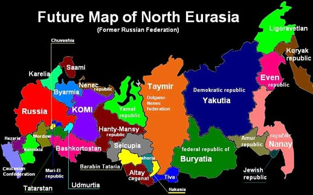

http://www.apn.ru/publications/article24447.htm
Константин Крылов
«Земля наша велика и обильна» -- комментарии
Вообще-то я намеревался добавить к "Позиции" тему про национал-демократов, а также про госпатриотов на примерах Крылова и Кургиняна, которые сейчас у всех на слуху. Но потом решил, что вот эту мерзотную статейку надо разобрать отдельно, и без нее материала хватает.
Комментарии Дениса Тукмакова (olly-oxen) отмечены так же, как этот абзац.
Почитал. Поразился обилию лжи и абсурдистики. Откомментировал. Поехали.
Часть 1: Территориальная целостность как ценность
Любит ли Слонопотам поросят? И как он их любит?
А.А.Милн, «Вини-Пух и все-все-все».
Одним из самых распространённых обвинений, которые традиционно предъявляют националистам вообще и национал-демократам в особенности разного рода «охранители», «патриоты» и «крепкие государственники», является то, что-де русский национализм, реализуя свои чаяния, непременно вызовет к «раскол страны».
Торопился Константин: даже не вычитал статью. Пусть читатели глаза сломают на согласовании падежей.
Ну, эта претензия к редактору/корректору. Но отмечено метко: Крылов пишет очень грамотно, и даже без опечаток. Обычно.
Я же обращу внимание на другое: Крылов первым же абзацем противопоставляет национализм и патриотизм. Я давным-давно (кажется, еще в 2005-м) писал:
"Патриот – это тот, кто является активным сторонником соответствующего государства.
Быть патриотом, не будучи при этом националистом, вполне можно: из современных и широко известных можно назвать С.Г. Кара-Мурзу.
Является ли любой националист патриотом? Зависит от того, что понимать под "российским государством"
Если бы Русская Империя уже существовала, то этом случае национализм и патриотизм были бы неразделимы, как неразделимы русские и Россия. Такое государство – это реализация национального духа во времени и пространстве.
А вот если считать государством современную эРэФию – тогда нет, ни один националист не является патриотом, так как желает разгона плутократии и построения национальной государственности.
Важно отметить, что в современных условиях можно быть патриотом и не быть националистом, но такой патриот не может быть против национализма – так как это означает, что он либо мыслит западническими шаблонами (и какой из него тогда патриот?), либо провокатор".
А позже я уточнил в явном виде: "Администрация — это НЕ страна! Чиновники-коррупционеры, компрадоры и проч. — это НЕ Россия! На этом якобы противоречии пытаются играть те, кому не выгодна Великая и сильная Россия — они пытаются внедрить постулат «если ты — за русскую нацию, то ты должен быть против государства». Маскирующиеся под русских националистов деятели даже публично предлагали свои услуги Грузии во время вооруженного столкновения в Южной Осетии, не раз были замечены в призывах «вот бы НАТО пришло в Россию и навело порядок» и т.п.".
Русские — державная нация, и русская нация не сможет сохраниться без великой страны. Мелкотравчатость — это удел малых европейских наций, русские же в случае уничтожения (даже распада не мелкие части) России очень быстро перестанут существовать как нация. Чего и добиваются те, кто пытается противопоставить национализм и патриотизм.
Так вот, правильный национализм -- он именно за сильную Россию. У русского националиста не может быть устремлений к уменьшению мощи Родины, пусть она даже управляется сейчас антирусской кликой.
Когда обвинителей спрашивают, как они себе представляют этот раскол, те обычно объясняют, что речь идёт об уменьшении территории России, в пределе – «до Московской области».
Доведение до абсурда. Не до карикатурно-утрированной и оттого не тянущей на пугалку "Московской области", а до гипотетически куда более реальной "Республики Русь" в примерных размерах Руси XIV века.
Да пофиг. Суть -- именно в том, что некоторые псевдонационалисты заявляют, что надо-де не стремиться возродить крепкую, сильную Россиию. процитирую небольшую статью:
***
Осуществление целей «русской национал-демократии» будет означать конец русского народа
Определенная часть так называемых “русских националистов” мечтает “освободить” русский народ от имперского самосознания, великих устремлений и ощущения богоносности. Для этого, по их мнению, на обломках ненавистной им ментовско-чиновничьей России нужно создать несколько этнически чистых маленьких “русских Щвейцарий”, где очередные новые “русские” наконец-то заживут как все цивилизованные люди: попивая пивко, обсуждая свою местечковую жизнь и ни о чём крамольном не помышляя. Эти мечтания ничуть не отличаются от планов современных либералов: расчленение России, подгонка её под западные стандарты политкорректности и толерантности, а также тотальное вытравление какой бы то ни было русскости под видом борьбы с пресловутым “имперским сознанием”.
Писатель Владимир Карпец так охарактеризовал это явление:
“В Государственной думе РФ от имени т.н. Национально-демократического альянса выступил известный публицист и поэт Алексей Широпаев. Его выступление в определенном смысле можно считать переломным — разумеется, для официальных структур, подобных Госдуме.
Национал-демократами (или национал-либералами) называет себя часть русских националистов, наиболее радикально отвергающих историческую Россию и открыто провозглашающих её разделение на самостоятельные “русские республики”, ориентированные на “западную цивилизацию” и рыночно-либеральные реформы.
“Мы, национал-демократы, считаем, что справедливое решение русского вопроса непосредственно связано с отказом от имперского характера российской государственности, — сказал Широпаев. — Посредством конституционных процедур Россия должна быть преобразована в симметричную федерацию, состоящую из равноправных субъектов — национальных республик, в том числе русских республик, созданных на основе руссконаселенных краев и областей, не входящих в какие-либо существующие национально-государственные образования. Нам видится в составе РФ семь русских республик. Их региональная разверстка: Дальний Восток, Сибирь, Урал, Поволжье, Центральная Россия, Южная Россия, Русский Север”.
В среде самих национал-демократов, на их сайтах давно обсуждают независимость Сибири, “Казакии”, “Залесья”, “Ингерманландии”.
“Россию не переделать. Её можно лишь упразднить — конечно, бескровно и цивилизованно”, — это тот же Широпаев. “Кто в большей мере растоптал человека, его свободу, дух и мысль, чем Россия? А русские — жертвы и заложники этого Зла. А нередко и соучастники, невольные и вольные… Россия — это историческая аномалия, порожденная ордынским насилием над русской личностью” — это из известной статьи Широпаева “Тьма-Родина”.
Национал-демократы открыто признают — Россия им не нужна. “В итоге получается, что национализм сводит понятие Россия к границам даже меньшим, чем Московское княжество на 1547 г.”, — признают они сами, считая себя единственными “русскими националистами”.
“Я мечтаю о том, что появится, наконец, такое понятие: русский бюргер, подразумевающее свободу от психопатической тяги к “предельному и запредельному”, от “безбытности” и “богоносности”… Соответственно, для национал-демократии культурная, социальная и, прежде всего психологическая буржуазность, является основополагающей” – пишет Широпаев.
Само же по себе осуществление целей национал-демократии, якобы спасающей русских от “ментовско-поповского государства” и “засилия черных”, будет означать конец русского народа. Как бы ни складывалась судьба “русских субэтносов”, это будут уже другие народы. Они станут частями других империй — европейской, американской, китайской, исламского халифата. На правах резерваций. Сегодня создаются и пересоздаются большие империи, и кто не созидает свою, работает на чужую.
А теперь главное. Национал-демократию выпустила “из бутылки” сама медведевская администрация. Не в последнюю очередь через затеянную ею “десталинизацию“. Алексей Широпаев: “Подлинная, глубокая десталинизация неизбежно выходит на критику исторической России как таковой… Подлинная десталинизация предполагает последовательную историософскую и культурологическую ревизию вплоть до эпохи Ивана Грозного и даже дальше — до уничтожения Московией Новгородской демократии”.
Зачем запущен этот процесс? Тем более накануне выборов. Для “жадною толпой стоящих” у Старой площади — ради новой конвертации власти в собственность — через сепаратизм. Ну а для тех, кто в свою очередь стоит уже за ними — по обе стороны границы — “без лиц и спин” — агентов “ничто, которое ничтожит”.
***
Как видите, цель национал-демократов (ранее были еще и национал-либералы, но это вообще клоунада) просты: закрыть русской нации пусть в будущее, уничтожить ее исторически. Останутся некие бюргеры с русскими генами, которые будут сидеть по мелкотравчатым улусам, и у них даже мыслей уже не будет о Великой России. Понятно, что это все будет быстренько поделено на протектораты США, Японии, Китая и проч., русские потеряют культурную идентичность, станут космополитами и прочими ублюдками, родства не помнящими.
Цель названа четко: упразднить Россию. Прична проста: только русские могут сделать Россию сильной, только сильная Россиия сможет выступить в роли "второго полюса мира". Если этого не будет -- мировой глобализм неизбежен, финансовые спекулянты будут безраздельно править миром, идущим к разделению на элоев и морлоков. Вот только в этом мире, в отличие от Уэллса, морлоки элоев есть не будут, а будут подыхать от голода под наблюдением морлоков на должностях капо.
Защитники Крылова обижаются, что его сравнивают с Широпаеввм -- мол, Крылов-то не пишет открыто на тему "надо поделить Россию и продать мелким оптом". Давайте почитаем дальше и решим вопрос, а то как-то неприлично уже: такой большой комментарий на два чахлых абзаца...
Доказательствами того, что будет именно так, противники националистов себя обычно не утруждают, отделываясь фразами «это всем нормальным людям очевидно и обсуждать тут нечего – кто против России, те враги»,
Ложь. Противники "отделенцев" всегда стараются привести доказательства того, что сепаратистские процессы, едва начавшись в РФ, не закончатся на первом отделенном регионе и будут продолжены.
Даже если не так -- хотя не понятно, а почему все должно ограничиться? Пример подали, государство стало слабее... А что касается "этого не может быть, так как не может быть никогда" -- так это не аргумент. Чесслово, когда СССР упразднили росчерком пера, наплевав на результаты референдума, тоже как-то в голове не укладывалось (и про Украину никто не мог подумать -- добавлено в 2015 г).
И так и да: тот, кто против России, тот враг русских. Что тут обсуждать? Крылов хочет сказать, что тот, кто против России -- тот НЕ враг? Это на уровне определения, между прочим, даже не рассуждения.
после чего продолжают повторять на разные лады исходное утверждение, вдалбливая тезис в головы паствы, на уровне «кто за сохранение России – друг, друг, друг, кто за уменьшение России – враг, враг, враг». Это повторяется как мантра, вкручивается на уровне «мы за народ, они за мироедов», «четыре ноги хорошо, две ноги плохо», «солнечному миру – да-да-да, ядерному взрыву – нет-нет-нет». Такие мантры никакого смысла в себе не несут, зато хорошо служат для сплотки рядов. Приятно же быть за всё хорошее и против всего плохого.
Прием софиста: смешать превратно истолкованную позицию оппонента с откровенным маразмом про "четыре ноги" и "да-да-да", чтобы дать понять, что и все его рассуждение - маразматично и ложно.
Ну да, прием "паровоз" --- вместе с правильными тезисами протолкнуть бредовый. В данном случае прием получается "наизнанку": под отрицание вместе с откровенным маразмом подводится верный тезис.
Не могу однозначно сказать, что любой, кто за сохранение России – друг, но тот, кто за уменьшение России – враг однозначно. Что тут объяснять-то? В общем виде: есть нечто, что кому-то принадлежит; тот, кто уменьшает это нечто -- приносит вред владельцу.
Конечно, есть демагоги, которые визжат: а-а-а, нечто все равно не принадлежит русскому народу, все принадлежит гайдарочубайсам-абрамовичам!!! Хотя бы на этом примере: помните ЮКОС? Ходорковский сел именно -- по факту, а не юридически -- за то, что собирался передать стратегическую компанию во владение иностранному капиталу. Пока это не произошло -- посадили, и ладушки. А если бы успел -- то уже сложно переводить под контроль гос-ва, национализировать и т.д., там может быть и до ввода войск НАТО в защиту священной частной собственности.
Если в человечка, талдычащего про «границы Московской области», всё же вцепиться и потребовать хоть каких-то обоснований, он, после долгих мучений, скажет, что «если русские чего-то себе захотят, тогда татары отделятся» и «мы потеряем Кавказ».
Ложь. В логике рассуждений защитника целостности России нет причинно-следственной связки "Если русские чего-то себе захотят, то из-за этого начнется отделение".
Демагогия: перевод тезиса на частный случай. Про "Московскую область" всерьез, а не как утрированный пример, мало кто говорит. Как раз псевдонационал-сепаратисты -- см. карты выше (также см. старую статью "Русский сепаратизм" и относительно недавнюю "Мелкобуржуазный национал-сепаратизм от Белковского").
Русские же националисты ставят вопрос принципиально: не "насколько можно уменьшить территорию России", а "этого нельзя делать в принципе". Почему так -- я напишу отдельную заметку сразу после разбора этой статьи, вечно мне приходится разжевывать очевидное... Но в двух словах: Родиной не торгуют, ее защищают.
На вопрос о том, наш ли сейчас Кавказ и куда денутся отделившиеся татары, обычно следует ответ, что Кавказ является святыней и краеугольным камнем российской государственности, а татары уж такие хитрые, что найдут, куда деться и как навредить.
Доведение до абсурда. Патриоты, выступая за сохранение Северного Кавказа в составе России, вовсе не относятся к нему как к "святыне" и "краеугольному камню", а логика возможного отделения Татарстана связана не с тем, что "татары куда-то денутся", а с тем, что на них перестанет распространяться суверенитет РФ и вопрос "Наш ли сейчас Татарстан?" будет, увы, актуален.
Верно. Про Кавказ у меня есть недоFAQ специальный, а у Татарстана уже сейчас особый статус, со своей конституцией, президентом и проч.
В последнее время, впрочем, камлания стали действовать хуже, и в охранительской среде начался лихорадочный поиск хоть каких-то аргументов. Некоторые записные патриоты, типа Калашникова или Кургиняна, с недавних пор рассказывают всем, что по территории Татарстана идут трубопроводы, и татары через это имеют возможность развалить нам всю нефтяную и газовую торговлю, а это становой хребет нашей государственности.
Доведение до абсурда. Речь не о "становом хребте", а о том, что в случае выпадения Татарстана и Башкирии из состава России ее ждут в том числе новые экономические и дипломатические угрозы. Равно как многомиллиардные вложения в строительство обходных коммуникаций.
Вполне достаточно вспомнить, что стало с промышленностью и т.д. после того, как уничтожили Советский Союз.
Однако всем понятно, что беспокойство за состояние трубопроводов – это наспех найденный аргумент ad hoc, а не настоящая причина плясок вокруг «территориальной целостности».
Это понятно, кажется, одному только Крылову. Аргумент про трубы - хорошее наглядное объяснение степени экономической укорененности в России "нацменских" регионов.
Обратите внимание: Крылов пишет именно что "фу, негодный аргумент против сохранения территориальной целостности". Тот, кто ЗА территориальную целостность, ТАК не напишет, не так ли?
Если "безусловно за" -- то будет жеская позиция "и думать об этом нечего", если "за сохранение по какой-то причине", то будет "не, этот аргумент сомнителен, на самом деле же нельзя потому-то".
Метод же "не, этот арумент не подойдет, жду, что еще скажете" -- это именно что обороняющаяся позиция, "попробуйте меня убедить". Таким образом, Крылов однозначно как минимум не против развала России. Просто Широпаев это говорит явно, а Крылов -- эдак культурненько, интеллигентно, экивоками, "об этом вслух говорить неприлично, но мы-то с вами понимаем...".
Даже если бы все трубы шли исключительно по территории русской России, наши имперцы-государственники точно так же ненавидели бы русских националистов, и точно так же орали про «территориальную целостность».
Бессмысленный и неадекватный аргумент применительно к недостижимой условности.
Прямо-таки подряд идет: запомните, националист не может быть государственником! националист не будет орать про территориальную целостность! Территориальная целостность -- это вообще непонятно что, так что напишем в кавычках для наглядности.
Заодно мимоходом: националист должен быть против Империи! Зачем? А затем, что, как ни трактуй, у Империи есть имманентное свойство велищия и мощи, а уже из него следует экспансия, а из нее -- полиэтничность Империи. Как резонно говорил А.Н. Севастьянов, на территории Империи исторически давно живут этносы, не имеющие государственности вне России. Причем большинство из них не доставляют каких-либо проблем.
Это я к чему: если исходить из концепции "Русская Империя", то все ОК: есть государствообразующая нация, есть этносы, ее поддерживающие (что делать с антирусски настроенными этносами -- отдельный вопрос). А вот если исходить из концепции "мелкотравчатая руспублика из одних русских" -- то что делать с другими коренными народами? Угнетать? Шовинизм русским не свойственнен. Выселять? Ровно то же самое. Остается лишь уменьшать "чисто русские территории" (еще раз см. карту выше). Понятно, к чему все?
Не могу не процитировать Михаила Диунова, который сформулировал проблему в буквальном смысле по пунктам:
-
Империя не является самоцелью для русского народа, более того, она даже не является для него первоочередной целью.
-
Империя — это форма государственно-политической реализации уже сложившегося русского государства, появившаяся как результат политической деятельности великой нации с целью эффективной организации управления инородческим окружением.
-
Империя может быть только национальной, ненациональные империи — это фальшивые империи, или империи, находящиеся в стадии разложения, каждая великая нация стремиться реализовать свою империю как результат собственной великодержавности.
-
Национальное государство не может не быть империей или не стремиться ею стать. Как только национальное государство добровольно отказывается от империализма, оно само превращается в объект экспансии инородцев.
-
Национальная проблема не разрешима в контексте современного господства доктрины либерализма и демократии.
Ну и параллельно, безотносительно нациоанального вопроса: Империя -- это всегда мощь. И "против Русской Империи" -- это "чтобы Россия никогда, никогда больше не стала державой мирового уровня".
Резюме: настойчиво продвигается мем "националист должен быть против сильной России".
Но это бы ладно. Непонятно другое: почему сами националисты зачастую ведутся на навязываемый им тезис. То есть – начинают либо оправдываться, уверяя, что они и в мыслях не имели посягать на «территориальную целостность России», либо, наоборот, начинают «говорить назло», в стиле – «хорошо, если так, то отдайте нам нашу Московскую область». Но само утверждение, что охранители, имперцы и государственники охраняют и берегут «территориальную целостность России», никем не оспаривается, а принимается как данность.
Видимо, многие "отделенцы" просто честнее Крылова.
В очередной раз кликушество "националисты против государственности!". Пропаганда классическая, имени Геббельса: надо повторять ложь простыми фразами много раз, чтобы люди просто запомнили, аргументация же массам только вредит -- начинают думать, размышлять. Так и до чего-то своего додуматься могут.
Но далее Крылов совершает ошибку, типичную для интеллигента: он не может не повитийствовать, и пытается аргументировать. Получается, скажем так, фиговенько. Читаем дальше:
В результате в голове благонамеренного обывателя возникает такая картинка. С одной стороны – русские националисты, желающие свобод, прав, хорошей и спокойной жизни и прочего «национального эгоизма». А с другой – суровые и мужественные Защитники Земли Русской. Которые защищают грудью просторы Родины. И, естественно, защитники просторов выигрывают в глазах публики.
Неверная оппозиция, предполагающая, будто защитники земли Русской вовсе не желают "хорошей и спокойной жизни" для русского народа.
Как я выше и сказал -- искуственно внедряемая дихотомия.
Точно также а Европе предланается выбор: либо ты социалист, но тогда всенепременно "левак" и за преференции мигрантам, профессиональным меньшинствам и т.п.; либо ты "правый", но тогда заодно и за "свободный рынок" и прочую либерастию.
Глобализм до расслабления сфинктера боится объединения в одной идеологии национального и социального, особенно в России.
Интересно, а кто же даст "жить спокойно и свободно", если не защищать Россию?
Показательно, что Крылов честно признает, что защитники территориальной цельности у русского народа находят понимание, в отличие от тех, кто не против деления на кусочки. Хорошенький получается национализм --- за развал страны этой самой нации против желания самой нации. Русские исторически стражались за свои территории, "ни пяди земли не отдадим".
Просто потому, что порядка и хорошей жизни на Руси никогда не было, а просторы – вот они.
Передергивание. Имеется достаточно социологических опросов, показывающих, что граждане России считают, что "порядок и хорошая жизнь" существовали в России, например, во времена позднего Советского Союза - с его безусловной неприкосновенностью границ.
Тут все тоньше. Всегда же можно заявить, что "можно было лучше и порядочнее". И на указание "вот тогда-то было неплохо, особенно если сравнить с тем, что в других странах делалось" всегда можно поморщиться и сказать, что это было на самом дело все беспорядочно и плохо.
Особенно если учесть историческую практику -- типа Иван Грозный был садистом-сатрапом, а в это время Карл IХ только за один 1572 год с благословения папы римского уничтожил 30 тыс. гугенотов -- это так, мелочь. Ну а стртыщмильонов, замученных лично Сталиным и перед этим изнасилованных Берией, и вспоминать неловко -- это известно каждому изряднопорядочному рукопожатому либералу.
Обратите внимание: образца порядка и хорошей жизни где-нибудь осмотрительно не приводится.
Получается, что русские националисты хотят обменять то, что уже есть, на то, чего нет, и неизвестно, будет ли. От добра добра не ищут. Пусть нас, русских, давят, пусть у них на шее сидят, свесив ножки, братские народцы с ножичками, пусть у русских нет элементарных прав и свобод, пусть нищета, пусть безнадёга. Ведь так было всегда, правда?
Передергивание. Защита целостности России исходит не из принципа "Пусть нам будет плохо, зато сохраним границы", а из принципа прямо противоположного: "Плохо нам будет, если мы не сохраним границы". И не нужно приписывать нам выдуманный аргумент "Ведь так плохо было всегда".
Уже хуцпа какая-то -- внаглую приписать тезис и его критиковать. Кстати, если по последней фразе -- я, как и Крылов, СССР застал живьем в сознательном возрасте. Советский Союз я не идеализирую, но с элементарными правами и свободами тогда было куда лучше, чем сейчас, а что такое нищета и безнадега -- вообще не знали. Это к вопросу уровня аргументации...
Зато у нас где-то есть область, которая по территории равняется четырём Франциям. Это хоть как-то утешает в нашей горькой нужде. А националисты хотят у нас отнять последнюю гордость и утешение. Ну не гады ли?
Гады, конечно. Но по другой причине: "отделенцы" ввергнут нас в еще большую нужду, хотят они того или нет.
Хотят, хотят. Такое нечаянно отстаивать не будешь.
Причина именно в этом: если помочь глобализму разделить Россию дальше, то народу будет жить хуже, а вот самим можно пристроиться помошниками обер-полицая по антирусской идеологии на усиленный паек.
Меж тем, стоит разобраться, что же на самом деле защищают защитники «территориальной целостности» и так ли уж сильно они их любят нашу землю.
Начнём с простого. Из чего состоит «территориальная целостность»?
Есть территория государства. Это и в самом деле ценность, причём вполне понятная, материальная. Земля – очень ценная вещь, ведь её больше не делают. Даже пустая и мёрзлая земля – ценность, и не только потому, что внутри у неё может быть нефть. А потому, что любую землю всегда можно подо что-то приспособить. В крайнем случае помойку сделать, это тоже стоит немалых денег, особенно сейчас. В общем, земля, территория – это очень полезное имущество, и держаться за неё руками, ногами и зубами – вполне естественно.
Намеренно зауженное описание преимуществ и ценности земли. Ни пол-словечка не сказано, например, про военно-стратегическое значение тех или иных территорий.
Подробно я это раскрою в статье (будет в "Позиции"), а пока лишь обращу внимание на восприятие автором территорий просто как ресурса. Подход, извиняюсь, не русский, а торгашеский. Либеральный, "все имеет свою цену".
Единство территорий, составляющих страну – тоже ценность. Тоже понятная и материальная. Потому что единство территории – это, попросту говоря, возможность проложить по этой территории коммуникации, не зависящие от чужой воли. Одно дело дорога или кабель, протянутая через свою территорию, и совсем другое дело – тянуть через соседа. Тут придётся от него зависеть, а это и неприятно, и невыгодно, и опасно.
А как же Татарстан и "придуманный наспех" аргумент про трубопроводы? Неужели этот аргумент все же чего-то стоит?
Ну так главное -- гнать и нагнетать, а ты к логике придираешься :-) Геббельс умер, а дело его живо!
Кстати, сюда же можно отнести и единство юрисдикции, единство законов, действующих на территории государства. Если у нас имеются анклавы со своими порядками, сильно отличными от общегосударстенных, территориальное единство страны ощутимо от этого страдает.
Наконец, международное признание законности владения данными территориями. Тоже чертовски ценные вещи, кто бы спорил. Потому что если этого нет, то с пользованием территорией возникают проблемы. Советский Союз, например, всю дорогу был вынужден приплясывать перед маленькой Прибалтикой, умасливать и ублажать гордых латышей и эстонцев – поскольку международное сообщество не признавало эти территории законной собственностью СССР, а считало оккупированными.
Что, серьезно? Можно ссылочку -- какая именно страна и когда предъявляла СССР претензии на тему "оккупации" Прибалтики? Или это просто всем изряднопорядочным и свободолюбивым интеллигентам было понятно?
Для информации: "Прибалтика и Средняя Азия в составе Российской Империи и СССР: мифы современных учебников постсоветских стран и реальность социально-экономических подсчетов (pdf) "
Любимый крыловский прием - расписать дело "сочненько". "Приплясывать", "ублажать", "гордых"... На самом деле, никто с прибалтами в СССР особо не церемонился: кого надо - в ссылки отправляли или на заводах вкалывать заставили. А уж если кто кого и ублажал, так это прибалтийские актеры - русских любителей кинематографа.
Это, в свою очередь, создавало советским немалые проблемы. И сейчас, к примеру, как бы не хотелось кавказолюбивым элитам РФ прикрутить к себе какую-нибудь Абхазию, но удержались на краю, ограничившись разумным компромиссом – «сделаем им независимое государство».
Притянуто за уши. Хорошо бы получить от Крылова доказательства того, что кто-то в "элитах РФ" желал присоединения Абхазии к России.
А тут исколючильно демагогический прием -- мол, если вы против раздачи территорий, то вы за присоединение очередного Кавказа!
Так же поступили и армяне, не посмев заявить, что Карабах – часть Армении. Потому что непризнание законности владения влечёт за собой неподъёмные издержки. Из чего видно, насколько дорогая это вещь – возможность не просто контролировать территорию, но и владеть ей по праву.
Теперь посмотрим, что из вышеперечисленного защищают защитники «территориальной целостности страны».
Если речь идёт о «нерушимости границ России», сообщаю проспавшим последние тридцать лет, что за эти годы оные границы неоднократно менялись, причём исключительно в сторону уменьшения.
Именно. См. на карте: "Историческое изменение территорий России". Что, нравится, надо продолжать?
Власть, которая сейчас сидит в Кремле, села туда ценой потери трети территорий страны, в том числе населённых русскими людьми.
Не разделять Горбачева, Ельцина, Путина и Медведева, представляя их в виде "слипшегося кома", может позволить разве что большой художник - но не редактор политического сайта.
Потом она неоднократно отрезала от страны кусочки, и эти кусочки отдавала другим государствам. Отдавали, отдают и собираются и дальше отдавать.
Что именно собираются отдавать дальше? Какие кусочки? Про это - ни слова.
При этом наши «имперцы», «патриоты» и «крепкие государственники» продолжают поддерживать существующий режим, а если его и критикуют, то не за это. Досадуют – да, но не более того.
Ложь. Одно из фундаментальных обвинений ельцинской власти со стороны патриотов - в развале единого государства и в потере трети территории страны, на которой остались три десятка миллионов русских. Сваливание в одну кучу разрушения страны и улаживания ведущегося много десятилетий территориального пограничного спора - это очередное передергивание: разумеется, реакция на эти события у нормального человека различается. Впрочем, неприятие нынешних территориальных уступок составляет одну из частей критики власти со стороны патриотов. Формулировка "не критикуют, но досадуют" вообще лишена реального содержания. Как определял?
Я что-то не понял -- а что значит "поддерживают"? Я вот, можно сказать, имперец и автоматом государственник -- так что, я за Медведева разве? Калашникова Крылов сам выше упоминал -- он что, за то, что сейчас в эРэФии творится?
Не надо передергивать с "против анархии и развала России" на "за существующую конкретную власть", за такое канделябрами бьют.
Многие даже говорят, что небольшие территориальные уступки только укрепили российскую государственность и ту самую территориальную целостность, так как сняли противоречия с сильными государствами типа того же Китая [1], который теперь умиротворён и на российские просторы больше не покусится.
Что это еще за "многие"? Кто именно?
Если кто такое говорил, то именно из "Единой России" и т.п., причем получается, что они как раз одобряют уменьшение русских земель, а вовсе не за территориальную целостность. Геббельс радуется в могиле -- вырос ученик!
Не будем спорить с этим сомнительным тезисом, а пока просто зафиксируем: нерушимость границ, «ни пяди родной земли врагу» - к пресловутой «территориальной целостности» прямого отношения не имеет, разве что опосредованное.
Фиксация собственноручно сварганенного и не доказанного тезиса. Плюс нелепейшая подмена тезиса: на основании того, что единороссы в Думе готовы ратифицировать границу с Азербайджаном с территориальными уступками, делается вывод, что патриоты России вовсе не пекутся за нерушимость ее границ.
Попытка зафиксировать "раз ты за целостность территорий, то ты и за кремлядь". То, что как раз Кремль территории раздает -- игнорируется. Типично интеллигентское: если факты не вписываются в теорию, тем хуже для фактов.
Возникает логичное предположение: может быть, у нас имеются какие-то особо священные земли, которые отдавать нельзя, потому что это убьёт душу и гордость нации, и наши государственники заботятся именно о них? Есть земля, которую можно отдавать, и есть земля, которую отдавать нельзя? Вот имеется у нас такое «русское Косово», и его мы не отдадим никогда и ни за что, любой ценой удержим… Хорошо, но в таком случае покажите мне это наше русское «Косово».
Показываю. Это вся территория России: от Калининграда до Камчатки. Такова позиция патриота страны, выступающего за ее целостность.
И националиста, разумеется. Обратите внимание на "фе" по отношению к священности земли. Как я выше указывал, она Крыловым воспринимается лишь как ресурс. Типа "шесть соток", только побольше. Понятия Родины -- сакрального -- у Крылова НЕТ.
Впрочем, я знаю одну такую территорию – Курилы. Они стали «вопросом принципа», да. Но как раз Курилы-то… сами знаете, что позиция российского руководства по этому вопросу, как минимум, двусмысленная. То есть «острова наши, но торг уместен». Это, может, и лучше, чем «берите сколько унесёте», однако про «святую землю» рассуждать в таком контексте несколько неудобно.
Опять намеренное передергивание, когда двусмысленная "позиция российского руководства" выдается за позицию сторонников территориальной целостности России, которым из-за этого теперь непозволительно "рассуждать про "святую землю".
И опять: всего лишь "вопрос принципа". Уперлись, дурачки, нет, чтобы поторговаться!
С другой стороны, некоторые части Российской Федерации – Кавказ, например – не являются частью единого российского пространства.
Прямая ложь.
На этих территориях не действуют российские законы, на некоторых из них нельзя жить русским, потому что их там истребляют или холопят.
Проблема с логикой. В современной России законы вообще действуют плохо и зачастую не выполняются. Кроме того, русских истребляют по всей России. На этом основании, по логике Крылова, следует сделать вывод, что вся Россия "не является частью единого российского пространства".
Ну так гуманитарщина прет, что ж ты хочешь. Очень удобно таскать туда-сюда критерий -- мол, тут уже, а тут еще не. В зависимости от отрабатываемых заданий.
Российское присутствие на этих территориях сводится к выплате этим территориям чудовищной по размерам дани, а также исполнению воли проживающих там народов. В обмен на это местные царьки говорят, что их государства являются «частью Российской Федерации».
"Чудовищная дань" - громкая формулировка, не несущая никакого реального содержания. Все познается в сравнении, поэтому ставить вопрос надо иначе: что приведет к большим тратам - людским, денежным, ресурсным: сохранение Северного Кавказа в составе России или его отделение, которое, по мысли патриотов, неминуемо приведет к новому Хасавюрту и тотальной войне. Правда, уже с международно признанным государством по типу Грузии. Кроме того, совсем иные траты, например, на Олимпиаду в Сочи, с лихвой превышают трансферты в северокавказские республики. Наконец, в сравнении с ограблением России со стороны коррупционеров и олигархов, "кавказские деньги" - это копейки.
Это все, конечно, не значит, что надо платить дань с радостью и одобрять кремлядь, но, как верно замечено, на "чудовищную дань" это не тянет.
И я уже умучился повторять, что если и отделять -- то не Кавказ, а кавказцев. Неужели не по мозгам додумать "второй ход": отделять Кавказ без выселения кавказцев на отделяемую территорию -- только делать хуже, а если есть силы переселить -- так есть силы и и порядок навести, и отделять незачем.
Хотя я с ходу могу назвать несколько куда более пристойных государств, которые в обмен на аналогичные блага тоже будут делать такие заявления. Да вот Приднестровье хотя бы лежит бесхозное. Предложите людям довольствие и права, аналогичные тому пакету, который дали кавказцам – они ж в Россию войдут, причём не шутейно, а по-настоящему. 4136 квадратов, прекрасный климат, лояльное население, чем плохо-то? Но нет, не берут-с. И не потому, что «далеко и границы нет». С калининградским анклавом тоже границы нет, но его пока держат.
Отматываем назад и смотрим крыловский пункт про "международное признание законности владения данными территориями". Вот поэтому Приднестровье и не берут.
Да, за Приднестровье -- обидно. Но кто из тех, кто за цельность территорий, выступает против присоединения Приднестровья? Никогда не слышал о таких.
Теперь – самое интересное. Все предыдущие рассуждения касались в основном темы границ. И совершенно не касались того, что лежит в этих границах. Скорее всего, дорогой читатель даже не обратил на это внимания, поскольку он приучен – всё теми же патриотами – принимать одно за другое.
Крылов держит дорогого читателя за недоумка.
То есть. Патриоты всё время беспокоятся о ГРАНИЦАХ российских земель. Возникает вопрос – а как они относятся к САМОЙ ЗЕМЛЕ? Любят ли они её, ценят ли, вообще – придают ли они ей хоть какое-нибудь значение?
Логично предположить, что люди, которым дорог каждый сантиметр российской границы, считают то, что заключено в этих границах, чрезвычайно ценным. Наверное, они любят родную землю – каждую речку, каждый ручеёк, каждую малую деревеньку? И, конечно же, они хотят, чтобы вся наша земля была «светло светлой и красно украшенной»? Наверняка наши охранители стоят в первых рядах экологических движений, они же – активисты обществ охраны памятников архитектуры, они рекультивируют наши истощённые земли и водоёмы, восстанавливают разрушенные монументы? Или хотя бы – постоянно говорят об этом?
Наверняка найдется огромное количество патриотов России, стоящих за нерушимость ее границ и при этом состоящих в обществах охраны природы и памятников архитектуры. Проблема Крылова в том, что спорит он с вымышленным врагом - неким "сферическим" публицистом, который за мелкий кэш поет осанну власти и "побарывает в энторнетах" националистов. То, что сторонниками неделимости России является множество обычных честных граждан, любящих "каждый ручеек" и при этом презирающих Кремль, Крылову невдомек.
Увы. Наши охранители границ проявляют редкостное равнодушие к тому, что эти границы окружают. Их совершенно не волнует СОСТОЯНИЕ той самой земли, за которую они так цепляются.
Голословное обвинение, "на раз" уничтожаемое, например, любой из сотен публикаций в "Завтра" о бедственном состоянии жизни и хозяйствования в современной России.
Я аж умиляюсь, как можно перевернуть все вверзх ногами. Территориальная целостность должна быть, а вот земля как грунт на территориях -- это как раз просто ресурс.
Например, практически все «охранители» открыто восхищаются советским методом хозяйствования, предполагающим разорение и уродование земли вообще и в особенности русской земли, земель Средне-Русской Равнины. Никто их них не возвысил свой голос по поводу подлинно потерянных русских земель – например, затопленных земель в долинах Дона и Волги. «Прощание с Матёрой» написал не имперец, дрожащий над каждым сантиметром драгоценной границы, а писатель-«деревенщик», относящийся к этим самым границам без всякого интереса.
Попытка записать в "отделенцы" Распутина могла бы оказаться удачной, если бы повесть "Прощание с Матерой" не была полностью выдержана в советской системе ценностей, предполагавшей весьма широкую палитру взглядов, но абсолютно отрицавшей всякого рода "отделенчество".
Я фигею, Крылов в зеленые экологи записался. Хотя не -- даже они возражали бы против создания водохранилищ.Зачем нужны водохранилища -- надеюсь, объяснять не надо. Например, ГЭС -- знаете такое слово?
Прямо шизоврения какая-то: мол, злобные имперцы залили русскую земельку водой... нерусской, что ли?
Но смех -- смехом, а все равно показательно. Крылов против имперски мощных проектов, но, похоже, за деревеньки - березки - лужки и прочую деревенскую пастораль. Это мерзкие имперцы то в космос рвутся, то атомные подводные лодки строят, а тиким вот типа русским националистам важнее всего неприкосновенность деревень. Как там у классика, по памяти: рассупонилось красно солнышко, расталдыкнуло лучи свои по белу светушку, вышел старик Ромуальдыч, понюхал свою портянку и ажно заколдобился...
И, главное, такая вот деревенская Россиия -- никому на Западе не опасна.
Или вот. Имперцы-землелюбцы, например, вовсю восхищаются советской атомной программой. Между тем, «советский мирный атом» использовался в атомной войне против русской природы: в Советском Союзе практиковались так называемые «мирные ядерные взрывы», проводившиеся в основном на русских землях для «природоустроения». На территории СССР был произведено 124 «мирных» подземных ядерных взрыва, причём 81 из них был произведён на территории РСФСР, которую не щадили абсолютно. Мирным и военным атомом также долбили Казахстан, тогда ещё русский [2].
Типичнейшее передергивание антисоветчика, не желающего признавать цену вопроса. Создание ядерного щита, который на протяжении десятилетий защищал и до сих пор один только и защищает нашу страну, трактуется им как безусловное зло, угробившее "русскую природу".
Да какая там "цена вопроса"... просто истерика гуманитария, который боится ядерной энергетики, так как ни хрена в этом не понимает, но уверен, что это очень, очень опасно. Точно также хоплофобы боятся оружия, несмотря на аргументы.
Что касается взрывов мирного атома, то см. здесь. Вполне все нормально.
Все ситуации, когда ядерные взрывы повлекли за собой официально признаваемые государством «аварийные ситуации» (то есть ядерное заражение местности), произошли на территории России. Это потерянная земля в буквальном смысле слова.
Ложь. Достаточно сходить по крыловской же ссылке, чтобы прочитать черным по белому: никакой радиации в этих районах практически не осталось.
А ведь советская власть имела большие планы на атомное природопользование. Например, пресловутые повороты рек [3]: так, «советское руководство намеревалось при помощи 250 взрывов прорыть канал и соединить русла рек Печора и Кама, чтобы перевести попадающие в Северный Ледовитый океан воды Печоры в южные части страны, в Каспийское море». 250 ядерных взрывов на русской территории – это фактически ядерная война.
Проекты, которые не были реализованы, Крылов выдает за "фактически ядерную войну" против русской земли. Интересно, считает ли он таковой, скажем, подрывы скальных пород при прокладке дорог?
Даже не задумывается, что ядерные бомбы и мирные заряды -- это не одно и то же, и в случае гражданского применения фактор загразнения учитывается заранее. "Но это же радиация, она опасна, что тут думать!" Мне это бабушку напомнило -- когда я в школе начал носить первые электронные часы, она переживала, что там бататейка, и она опасно излучает! Интересно, кактус у Крылова возле компьютера есть?
Если уж заговорили о поворотах, стоит вспомнить знаменитый «поворот сибирских рек», предполагавший коренное изменение самой природы России. Результатом которого должно было стать засушивание традиционных русских земель Севера и Центра.
Гуманитарий. См. здесь по поводу переброса части водного потока на орошение засушливых мест. "в проекте канала шла речь о нескольких процентах от общего стока" Оби. Прямо-таки все будет высушено.
И опять обратите внимание: речь шла о проекте, который был и экономически выгоден, и площадь плодородных земель увеличивал. По-имперски масштабно. Польза была бы всей стране. Но нет, мелкотравчато-уменьшительно: "русских людей обижают! воды несколько процентов от них в азиатскую часть переводят!".
Этим «проектом века», остановленным, в том числе, ранними русскими националистами,
Это кем именно?! Закрыли проект во время "перестройки", т.к. начали переводить страну из державности на мелкотравчатость, а заодно и ограбили.
большая часть наших «охранителей» не только не возмущается, но и восторгаются этим проектом – и говорят, что «из геополитических соображений» к нему неплохо было бы вернуться, чтобы хотя бы через это «вернуть себе Среднюю Азию», или хотя бы покрепче её к себе привязать.
Приписанная себе заслуга за остановку проекта с до сих пор не просчитанными последствиями.
А что плохого в том, чтобы привязать к себе Среднюю Азию? Руку на крантике завсегда полезно держать.
Прошу заметить: сейчас я не обсуждаю народохозяйственную, коммерческую или пропагандистскую [4] ценность всех этих замечательных проектов. Я хочу подчеркнуть лишь одно: реализация подобных планов нанесла бы значительной ущерб русской земле – той самой священной Территории, ни пядью которой наши охранители не готовы поступиться и в торговле которой они обвиняют своих противников.
Очередное голословное обвинение по принципу "если бы да кабы".
А какой именно ущерб-то? Конкретика предусмотрительно не приведена.
По идее, у любого охранителя-землелюбца на стене должна висеть карта России с указанием зон радиоактивного заражения, мест открытой добычи полезных ископаемых, зон экологического бедствия, и так далее. Ведь это всё – прямой ущерб той самой территориальной целостности, за которую они готовы отдать всё, включая жизнь и свободу русского народа. Ну что толку от области, равной четырём Франциям, если половина её состоит из бывшего ядерного полигона?
Тут Крылов мастерски изображает юродивого, не понимающего смысла ядерных испытаний для жизни двух предшествующих поколений русских людей. А заодно валит в кучу ядерные полигоны, месторождения и зоны экологического бедствия.
Уже отчетливо смешивается территория и грунт. Поскольку олигофреном Крылов не является, то, значит, специально. Зачем -- понятно?
Оказывается, добывать полезные ископаемые нельзя, если ты за целостность территорий. Потрясающе!
Но нет, наших имперцев это вовсе не беспокоит. Более того, они готовы оправдывать любые преступления против русской земли «государственной необходимостью». «Надо было взрывать бомбы», «нужно электричество», «стране надо угля».
Юродство продолжается: Крылов лицемерно требует отказаться от электричества, тепла - ну и ядерного щита, конечно, - называя все это "преступлениями против русской земли". Сам, впрочем, кропает статейки явно не при лучине.
Впрочем, когда дело доходит до земель нерусских, населённых другими народами, они становятся более отзывчивы: например, когда речь идёт о повороте рек, они готовы озаботиться судьбой Аральского моря. Но вот территорию русской России, особенно «Нечерноземье», они готовы целиком и полностью пустить на хозяйственные нужды, «на электричество».
Как всегда, без всяких примеров. Взял - да и выдумал. А ведь мог бы для приличия тиснуть цитату из того же Проханова - про псковскую землю, к примеру, - с монастырями, крестами, Пушкиным, Изборском и т. д. Только била бы та цитата крыловские построения.
А я опять укажу на стремление к уменьшению России: мол СССР -- это не Россия, нельзя наполнять Аральское море, это все имперскость нехорошая, надо только этнически русские земли обустраивать!
То, что в СССР были преференции нерусским (что продолжается в эРэФии в гораздо большей степени) -- всем известно. Но это державникам понятно, что государствообразующая нация обустраивает все государство -- и ошибка была в том, что надо было и другие этносы припахивать наравне. А вот "обустроить поменьше, чисто под себя" -- это такая мелкобуржуазность куркульчатая, что даже противно. Стратегически проигрышная.
Из художественной классики, так сказать: "Планеты, на которых установилась так называемая демократия, всегда рано или поздно свертывают космические программы, самоизолируются и через определенный срок угасают. Мертвых или еле живых цивилизаций много больше, чем развивающихся. Цель, которая ставится перед собой любым якобы народным правительством -- обеспечить сытое и по возможности не обремененное мыслями существование наибольшему количеству аборигенов, чтобы быть переизбранным на следующих выборах. Опора на толпу неизбежно влечет за собой снижение умственного уровня власти. При возникновении малейших трудностей в экономике под сокращение идут научные и космические программы, в ненужности которых уверен обыватель. Проблема роста населения решается контролем над рождаемостью и производством искусственной пищи. Средства информации ублажают вместо того, чтобы просвещать, или затевают бесплодные дискуссии, отупляющие массовое сознание. Фальшивая еда и варварски гуманная медицина пополняют ряды уродов, делая неизбежным генетический упадок. Итог может быть разным. Самый благоприятный исход -- цивилизация, с каждым поколением добивающаяся все более высокого жизненного уровня и медленно сходящая на нет вследствие успехов в демографической политике. Подозреваю, что этот удел грозил и Метрополии. Чаще -- повальные эпидемии, голод, крах биосферы, лихорадочные попытки освоить другие планеты, проваливающиеся из-за недостатка технических средств, и новое варварство среди свалок забытых предков. Самый крутой вариант -- войны за менее разграбленные земли, за еду и топливо и под конец самоуничтожение, предписанное теорией только тоталитарным режимам.".
Создаётся впечатление, что наши охранители любят не столько нашу землю, сколько её границы. Их волнует исключительно целостность колючей проволоки и контрольно-следовой полосы.
Занимательный бред: ведь идея "Забора между Россией и Кавказом", с "боевыми роботами" и прочей атрибутикой концлагеря, - это целиком "отделенческий" идефикс.
Впрочем, как уже было сказано, и этими сокровищами они готовы поступиться. И к реальным территориальным потерям, внутренним (когда часть страны становится непригодной для проживания) и внешним (когда начальство по своей прихоти отдаёт куски земли другим странами) они относятся, в общем-то, с пониманием, ну или, по крайней мере, за сердце не хватаются. Как они хватаются за сердце, когда речь идёт о перспективах строительства русского национального государства.
Точнее уж - когда речь идет об "отделенческих" перспективах развала и крушения русской государственности.
Именно. Против строительства русского национального государства в границах РФ (а потом и шире) -- ращве кто-то возражает?
Что же тогда они охраняют? И, кстати, от кого?
Крылов попал в типичную ЖЖ-ловушку: он сначала демонизирует оппонента, представляя его монстром, кушающим на завтрак русских детей, а потом принимается спорить с ним, доказывая, что есть детей, прежде всего русских, - нехорошо.
- Или Азербайджана. Как раз сейчас, когда я пишу эти строки, единороссы передают Азербайджану два «спорных» дагестанских села. Разумеется, это на фоне российских просторов мелочь – но важно то, что сами жители сёл в Азербайджан активно не хотят. Для сравнения – представьте себе, что американское правительство затеяло передать пару техасских ранчо Мексике вопреки желаниям владельцев ранчо. Вся страна встала бы на уши.
- Подробную статистику можно посмотреть здесь. «Мирный атом» бесчинствовал в основном на территории, населённой русскими – то есть в РСФСР и Казахстане. Два взрыва было произведено в Узбекистане, один в Туркмении – тушили горящие газовые скважины.
- Не стоит, кстати, забывать, что советский Минводхоз в определённом отношении был филиалом карательной системы НКВД, поскольку строительство каналов (например, пресловутого Беломорканала) осуществлялось в основном руками заключённых. С другой стороны, Минводхоз был теснейшим образом связан с военными ведомствами (как подрядчик всех земляных работ данного ведомства). Думаю, «умным достаточно».
- Отмечу только, что проект переброски
русской воды азиатам имел важное пропагандистское значение.
Важно было показать узбекам и таджикам, что большевики могут
отобрать у русских воду – то есть, по среднеазиатским понятиям,
самое главное богатство, такое же, как земля. Народ, у которого
можно отнять воду, не заслуживает ни малейшего уважения.
Понимают ли это наши охранители – особенно те, которые сами
родом из этих республик (а таких у нас в рядах государственников
почему-то много)? Вряд ли не понимают; но это их почему-то не
волнует.
Итоги певой части: 1. Упорно внедряется мысль "если националист, то против государства"; 2. Озвучена порция бреда на экологическую тему, к делу не относящаяся в принципе.
Часть 2: Разделённые государства и их судьба
Итак, мы видим, что наши защитники «территориальной целостности страны» не слишком-то заботятся о территории как таковой. Даже если половина русской земли станет непригодной для жизни, но внешние границы останутся неизменными, они будут считать, что всё в порядке. Главное – границы, а что там внутри – «это наше внутреннее дело».
На самом деле, мы видим лишь, как Крылов браво выдумал, а затем опроверг изуверскую логику ненавистника собственной страны, приписав ее зачем-то патриотам России.
Именно так. Но даже если исходить из бреда "половину страны сделаем непригодной", то все равно -- как из этого следует, что Россию надо делить на кусочки?
Хотя... Попадались всякие такие мнения, что русским жирно будет хозяйничать в той же Сибири и т.д. И надо бы у русских все это по-честному отобрать и поделить.
Видимо, та же линия: эти русские землю не берегут, надо бы на эти земли прийти более рачительным хозяевам, которые будут добывать природные богатства экологично, и даже оформят туристические места а ля рюс.
Впрочем, как я уже сказал, и к перекройке этих самых границ они относятся не то чтобы восторженно, но довольно спокойно. С одним условием: чтобы территории отходили другому государству, желательно сильному и авторитарному. Если так – тогда не жалко ни острова, ни косы, ни прочих мелочей. В конце концов, землицы у нас мнооогонько, чего ж не поделиться.
Очередная выдумка. К слову, Крылову как-то не приходит в голову, что государство действительно может утратить ту или иную территорию - в результате столкновения с "сильным и авторитарным государством", например. И, как всегда, он намеренно путает позицию патриотов России - и позицию нынешней власти. Хотя сам, стоило причислить Ельцина к националистам, разразился жалкой истерикой.
Линк по теме.
Эта святая уверенность, что уж чего-чего, а землицы у нас мноооогонько, является оборотной стороной «территориального мифа». О ней мы ещё поговорим, а пока вернёмся к вопросу о целостности.
Да пофиг, сколько. Все равно лишней нет, сколько бы Крылов не пытался это сказпть или приписать патриотам.
Если внимательно послушать и почитать речи наших защитников территориальной целостности, то выясняется, что они боятся не уменьшения наших земель, внутреннего или даже внешнего, а РАСКОЛА СТРАНЫ. То есть – появления на «наших землях» ДРУГОГО ГОСУДАРСТВА. Населённого людьми, которые когда-то были российскими гражданами, но переставшими ими быть.
Однако, если речь идёт именно об этом, то раскол страны у нас уже типа состоялся и бояться его уже как бы поздно.
Логика нац-демократа: "Вас же уже когда-то насиловали - так чего ж вы в этот раз целку строите? Поздно бояться - расслабьтесь и получите удовольствие". Вообще, немедленный переход в рассуждениях нац-дема от отчленения "чурок" к расколу русской России очень показателен. Не отделение Чечни его интересует - цель куда серьезнее.
Причём не первый раскол. При большевиках Россия потеряла Польшу и Финляндию, после большевиков – всё остальное, за что столько боролась и на что положила столько сил.
"Все остальное"? Не все, разумеется. Но потеряли, да, огромные территории. Это - боль русского патриота. А для Крылова это лишь повод "не бояться новых потерь".
Россия окружена государствами, которые когда-то были её частью, и, соответственно, «бывшими нашими народами». Которые теперь от этой самой России только плюются и знать её, проклятую, не желают.
Очевидно, это сказано и о белорусах с украинцами - то есть все о том же русском народе. Двадцать лет прошло с момента разделения - и они уже "плюются и знать нас, проклятых, не желают". Запомним это.
Чего уж теперь-то блажить про целостность?
Крылов продолжает накручивать: "Отпали от тебя в 91-м земли - чего ж теперь из-за целостности париться? Областью больше, областью меньше..."
На это можно ответить следующее. Ну да, распад Российской Империи и потом Советского Союза – великие геополитические катастрофы. Но Россия хотя бы сохранила ядро: земли, населённые русскими. Пусть не все – поскольку русские теперь стали крупнейшим разделённым народом, и многие территории, русские даже по крови, теперь за кордоном, Но всё-таки большая часть русских осталась в России. И надо держаться за территориальную целостность государства руками, ногами и зубами, чтобы предотвратить раскол именно русской общности. Ибо если русский народ разделится на разные государства – это будет окончательная гибель всему и вся. На русской истории можно будет ставить крест.
Именно так. А дальше Крылов обрушивает на мозги читателя потрясающую логику, втолковывая ему, что ничего страшного в новом разделении русских не будет.
Ага. Я тоже фигею...
Но все же добавлю: по Крылову в том, что русские замли разделятся на мелкие государства, населенных преимущестенно русскими ничего страшного нет. Или если образуется некое "русское гос-во" -- естественно, размером поменьше, чем РФ.
На самом же деле русская нация и так находится в разделенном положении, и надо думать об объединениии - понятно, что не сразу, но это никак нельзя упускать из виду. Но нет -- национал-демократы предлагают разделиться еще больше! Чтобы не было проклятущей Империи никогда!
В варианте "все делим на несколько мини-руспублик" (это предлагает Широпаев) получается раздробление экономики (проходили при развале СССР). В результате имеем улусы третьего мира, которые распродают Западу все еще шибче, чем сейчас либерасты в эРэФии. Будет дичайший капитализм, еще похлеще того дикого, который сейчас.
В варианте "делаем одну мелктравчатую особо русскую республику" (как понимаю, за это стоит Крылов, но могу ошибаться) будет марионеточная административная единица, неспособная на продвижение своей политики и проч., причем понятно, что власть там будет отнюдь не народная -- с чего бы это? -- а та же олигархическая. А на все претензии русских можно будет отвечать -- да вон, есть же у вас своя республика, туда и переселяйтесь! Там у вас то, что хотели, хе-хе...
Так ли это? Давайте посмотрим на пример государств, которые и в самом деле были (или даже остаются) расколотыми. В самом прямом смысле – когда государство, населённое одним народом, разделено на несколько частей, и ни у кого нет никаких сомнений в том, что это именно части единого целого. То есть когда раскол вызван чисто политическими причинами, а не, скажем, этническими, языковыми или религиозными.
Классический пример расколотого государства – Китай. Это государство в течении долгого времени было разделено на несколько частей. Во-первых, существует Тайвань, точнее, Китайская Республика, в 1949 году отделившаяся от Китая [1]. Китай время от времени угрожающе смотрит в его сторону, но остров защищают американцы. Во-вторых, в течении значительного времени на территории Китая существовала британская колония Гонконг, которая сейчас формально воссоединена с Китаем, но имеет очень значительную степень автономии. Вот вам пожалуйста, расколотая страна.
Бесстыдная аналогия. Китай - территория 9600 тыс. кв. км, население 1300 млн. чел. Тайвань - 36 тыс. кв. км (0,375% от размеров КНР), население 23 млн. чел. (1,78%) Гонконг - захваченная британцами земля - 1 тыс. кв. км, население 7 млн. чел. Это аналогично отделению от России разве что Калилинградской области вкупе с Курилами. О таком ли расколе, с "разделением на разные русские государства", говорит Крылов? Очевидно, нет - у него совсем другие масштабы.
Понятное дело, центральное китайское правительство отнюдь не в восторге от того, что оно не контролирует часть своей территории. Тема воссоединения Гонконга и Тайваня с «большим Китаем» никогда не снималась с повестки дня. Гонконг даже и вернули. Скорее всего, и Тайвань когда-нибудь вернут.
То есть Крылов приводит пример расколотого Китая, стремящегося как можно скорее вернуться в объединенное состояние, в качестве доказательства тезиса, что России ничего не стоит и даже полезно будет расколоться на несколько частей. Последует ли затем страстное желание расколотых частей воссоединиться вновь? Это Крылова не заботит.
А, главное -- Китай-то желает присоединить территории! Как это может быть примером "надо разделять территории"?!
Однако в период, когда материковый Китай жил под властью коммунистов – то есть впроголодь – Тайвань и Гонконг совершили прорыв в будущее, построив у себя процветающую современную экономику.
Само по себе сравнение "экономических чудес" двух столь разновеликих стран и экономик предельно некорректно: в Монако, Сингапуре или Сан-Марино наверняка все еще краше, чем на Тайване - так что же, колоться до размеров микрорайона? Но главное не это. Крылову очень не хочется рассказывать, кто и как строил на Тайване "процветающую экономику". Позволим себе цитату:
"В 1951 г. на Тайвань была фактически импортирована "здоровая" финансовая система, взамен старой, разрушенной гиперинфляцией. Одним из первых направлений экономической политики правительства КР стала аграрная реформа, проведенная в 1949–1957 гг. при активном участии американцев, входивших в состав Совместной китайско-американской комиссии по аграрной реконструкции. В общей сложности 44% американской помощи было потрачено на восстановление и развитие экономической инфраструктуры острова – электростанций, железных и шоссейных дорог, портов, телеграфных и телефонных линий. Не умаляя заслуг китайских хозяйственных руководителей, следует заметить, что роль США в создании основ будущего тайваньского "экономического чуда" была определяющей".
Непонятно, чего Крылов стесняется указать на то, что Тайвань являлся американской полуколонией? Ведь в следующем примере с Германией он говорит уже прямо об оккупации как средстве благополучия.
При этом Тайвань умудрился не только разбогатеть, но и осуществить переход от гоминьдановской диктатуры к умеренной демократии, избежав социальных потрясений. Постепенно разрешалось участие в выборах негоминьдановцев, в 1986 году появилась вторая партия. В 1996 году были введены прямые президентские выборы, а в 2000 – на выборах победил кандидат от оппозиции.
Теперь зададимся вопросом: как повлияло существование Тайваня на общекитайскую ситуацию?
Очень долго «весь цивилизованный мир» считал китайцев народом-неудачником, историческим лузером. Так считали и сами китайцы. Получившие европейское образование потомки мандаринов смотрели на своих соплеменников с жалостью и презрением: они видели свой народ дряхлым, вырождающимся, слабым и никчёмным, прозябающим под гнётом иноплеменников и ищущим утешения исключительно в трубке с опиумом… Дальше последовал период смуты, уничтоживший остатки китайской государственности. А коммунистическая власть должна была бы окончательно убить всякую надежду на то, что китайцы способны жить по-человечески. Умные головы кивали бы: что ж поделать, пять тысяч лет авторитаризма и загнивания – это уже в генах сидит, да-да-да.
Но - существовал Тайвань. Существовал Гонконг. Существовал Сингапур, по сути китайский. Великие Азиатские Тигры, которые вместе с Южной Кореей, тоже разделённой страной, доказали миру, что узкоглазые МОГУТ. Страны, ставшие локомотивами мирового экономического прогресса, а теперь уже и прогресса как такового. Это знали все – как западные капиталисты, жадные до прибыли, так и китайские коммунистические руководители, которые морочили ширнармассы пропагандой, но себя-то не обманывали.
Сейчас многие думают: почему коммунистический Китай так легко вышел из страшного тупика, в котором он оказался при Мао, и сумел провести свои знаменитые реформы? Между тем, ответ на это животрепещущий вопрос имеет самое прямое отношение к нашей теме.
Во-первых, Китай имел перед собой ОБРАЗЕЦ, даже несколько образцов успешного капиталистического развития. Было у кого учиться, с кого брать пример, кому подражать и с на чьих ошибках учиться. Более того, один из этих образцов – Гонконг – вошёл в состав Китая, сохранив при этом свои порядки, и, по сути, оставшись образцово-показательным капиталистическим государством. Реформы Дэн Cяо-Пина откровенно копировали то, что делали «тигры».
Важно было и то, что этот образец был убедителен для всех. Реформаторы сумели выиграть внутрипартийную борьбу, потому что у и противников не было того убийственного аргумента, который всегда слышат, скажем, российские реформаторы: «западный опыт нам не подходит, народ у нас не тот». Абсолютно все знали, что тот самый народ уже построил великолепно функционирующую современную экономику западного типа.
Наконец, западные «большие люди» (в том числе те, которые принимали решение о налаживании отношений с Китаем и превращении его в полноценного партнёра Запада) точно знали, что на китайцев можно положиться. Это не негры, которые не сумели построить ни одного процветающего африканского государства. Китайцы – лошадь, на которую можно ставить.
Я, честно говоря, офигел от такой интерпретации событий. Вообще-то все несколько иначе.
Исторически, когда было противопостояние двух систем, Запад "подкармливал" некоторых, чтобы создавалось впечатление, что-де при капитализме лучше, чем при социализме. Две Кореи, две Германии и вск такое. А Китай смог стать державой мирового уровня не потому, что смотрел на Гонконг, а потому, что в Китае -- «социализм с китайской спецификой», в точности как завещал Председатель Мао.
По Тайваню также см. развернутый коментарий А. Елисеева.
В результате реформ Китай стал гипердержавой, которой боится и которой завидует весь мир. И, что характерно – величие Китая было достигнуто не ценой благосостояния китайского народа. Китайские руководители не держат китайцев в искусственной нищете. И хотя большинство китайцев живёт небогато и сами это осознают [2], но тем не менее по потреблению товаров класса люкс современный Китай уступает только США и Японии. А счастливые жители Шанхая, который полвека назад мечтали о лишней плошке риса, теперь считают мясо едой бедняков.
Пиетет Крылова перед "потреблением товаров класса люкс" в Китае забавен, однако утверждение, будто Китай решился на реформы и рывок для того только, чтобы посоревноваться с Тайванем-Гонконгом, убог до невозможности.
Наши отечественные мечтатели о «великих империях» и «грандиозных свершениях» должны молиться на Китай как на образец сверх-супер-гиперуспешного Большого Проекта. И при этом не забывать, что китайский триумф связан, среди всего прочего, и с тем фактом, что Китай был и остаётся разделённой страной [3].
Мораль: чтобы в России всем стало жить хорошо, ее надобно уничтожить, а на месте ее создать несколько новых государств. Ну как в 1991-м. Правда, тогда отчего-то не получилось... Крылов предлагает попробовать еще раз.
Ага, и поделить на кусочки помельче, с Гонконг размером.
На это мне могут возразить: пример с Китаем слишком специфичен. Возьмите нормальную страну, а не этих узкоглазых. Вот, скажем, Германия: страна, всю свою историю страдавшая именно от раздробленности. Пока великие державы укреплялись и наливались силой, немцы прозябали в мелких княжествах и курфюршествах, неспособные к великим делам и побиваемые всеми, кому не лень. Впрочем, по большей части они воевали друг с другом. Лишь Брандербургско-Прусское государство, сентиментальный любитель муштры Фридрих Второй, ну и Бисмарк, который железом и кровью связал немецкие земли, решили эту проблему. И, что характерно, в ту эпоху никто, решительно никто из честных и вменяемых немцев не говорил, что раздробленность немецких земель – благо… Впрочем, это было давно и неправда. Хорошо, посмотрим на новейший раздел Германии, которую всё в том же «распилочном» сорок девятом году тоже разделили на две части. Принесло ли хоть какую-то пользу немецкому народу почти полувековое существование ГДР? Что такого замечательного получили немцы от этого эксперимента, кроме загубленных жизней, нереализованных планов, а теперь ещё и непомерных расходов, бремя которых несёт объединившееся немецкое государство?
Что ж, отличный пример, давайте его разберём.
Пример вовсе не отличный, поскольку раздел Германии - это раздел оккупированной державы, капитулировавшей в войне. Но Крылов использует этот пример как аналогию будущего раскола России.
И опять же -- Германия хотела объединиться и объединилась. Хороший пример "за отделение", ага.
Как известно, раскол Германии произошёл не по внутренним причинам, а по внешним. Попросту – немцы проиграли войну и победители оккупировали всю территорию Германии. Правда, победители быстро перессорились и в результате каждый откусил себе тот кусок, который смог уцепить.
Но стоит напомнить, что и англо-американский блок, и СССР были поначалу настроены к поверженному Рейху самым недоброжелательным образом.
До того недоброжелательным, что СССР отстаивал на союзнических конференциях принцип целостности Германии и не желал ее расчленения.
А другая сторона сразу думала об "Operation Unthinkable".
Что, мягко говоря, неудивительно: немцы развязали чудовищную войну, оставив после себя горы трупов и развалины. Желание расправиться с агрессивной бестией раз и навсегда, раздавить гадину, было вполне понятным. Строились и соответствующие планы. Благо, реализовать их ничего не стоило: страна лежала в руинах, в буквальном смысле слова: двадцать процентов жилого фонда в Западной Германии было разрушено, ещё двадцать – приведено в негодность [4]. От довоенного промышленного производства осталась треть, от транспорта – половина, а сельское хозяйство было отброшено на тридцать лет назад. Производство было устаревшим и нерентабельным [5]. Каждый второй немец был безработным, зато по всей Германии бродили толпы беженцев – страна лишилась четверти территории, и лишние люди не знали, куда себя деть. Деньги не имели цены: все немецкие банки были закрыты, немецкие счета за рубежом ликвидированы. На чёрном рынке расплачивались кофе и сигаретами, а немецкие девушки отдавались американцам за пару чулок. В общем, достаточно было бы законсервировать такое положение дел, не дав немцам провести эффективные экономические реформы, чтобы о Германии можно было забыть надолго. Что и ожидалось: западные специалисты прогнозировали (читай – планировали), что Германия восстановит довоенный уровень не раньше чем через тридцать-сорок лет, а, возможно, и позже.
Западные специалисты планировали прежде всего расчленить Германию, чтобы устранить важнейшего конкурента на континенте, прекрасно понимая, что в условиях единой Германии описанные Крыловым послевоенные ужасы будут устранены гораздо быстрее.
Однако «холодная война» и раздел Германии резко изменил ситуацию. И западный, и восточный блок боялись, что, если доставшаяся им часть немецкой земли и немецкого народа будет лежать в руинах, а за забором наступит процветание, то немцы восстанут. Больше, правда, боялся Запад – поскольку коммунизм казался опасным и успешным врагом, захватившим пол-Европы. «Левые» настроения в Западной Германии были очень сильны. Поэтому союзники уже в 1948 году дали отмашку на проведение успешных рыночных реформ и накачали Германию деньгами, необходимыми для восстановления хозяйства. За двенадцать лет полностью разрушенная страна поднялась и вышла в лидеры мировой экономики.
Рецепт для России понятен? Расчленить, оккупировать, на полвека лишить собственной армии, и попутно провести в ней свои реформы.
Причем, как нетрудно догадаться, сейчас нет коммунистического блока. Посему нет причин накачивать Россию деньгами, куда логичнее расчленить и деньги выкачивать. А то без этого и доллар лопнуть может, это же не цивилизованно!
Что-то вспомнилось: в 30-х в Германии была шутка на тему "гамбургеров": снаружи коричневые, внутри красные. А если всерьез, то как бы не сам Гитлер (точно не помню) говорил, что из коммуниста может выйти национал-социалист, а вот или либераста -- никогда.
Сейчас все восторгаются гением Экхардта и Мак-Армака, вытащивших немецкую экономику за волосы из болота. Однако не следует забывать, что и приход к власти кабинета Аденауэра, и его политика зависели от оккупационной администрации.
Кристальная честность Крылова.
Если бы не страх перед «левым поворотом», то, скорее всего, Экхардту не удалось бы сделать очень многого (например, снятия налогового бремени, установленного именно оккупационной администрацией в целях сдерживания немецкой экономики). С другой стороны, всё та же угроза «левого поворота» уберегла немецких реформаторов от «пиночетовщины-гайдаровщины», то есть от демонстративного пренебрежения социальными требованиями в угоду экономической эффективности. Немцам пришлось совершить невозможное – строить рыночную экономику одновременно с социальным государством, а не вместо его.
А что получила ГДР? Да, разумеется, по сравнению со своей западной сестрой, ФРГ, «первое в мире немецкое государство рабочих и крестьян» жило небогато. Но советская власть боялась бесчинствовать на немецкой земле, так как ГДР считалась «витриной социализма». Именно потому, что рядом была ФРГ, что у большинства немцев были родственники по ту сторону границы, что сравнение обоих немецких государств происходило постоянно. В результате в ГДР не было коллективизации, армия была устроена так, что выходные солдаты проводили дома в семье, люди жили в собственных домах, улицы были покрыты плиткой и обсажены розовыми кустами, и на них царила чистота, невиданная в Советском Союзе [6], а уровень безопасности жизни был, возможно, одним из самых высоких в мире [7].
Зададимся вопросом: какова была бы судьба немецкого народа, если бы вся Германия досталась Западному или Восточному блоку? С большой долей вероятности можно предположить, что она была бы куда менее завидной, причём в обоих вариантах. Ситуация «соревнования витрин» оказалась чрезвычайно выгодной для немецкого народа.
Крылов предлагает русским жителям будущих осколков, оставшихся от России, рассчитывать на то, что их новые хозяева-оккупанты отчего-то захотят "посоревноваться витринами" между собой. "Польская витрина" соревнуется с "Турецкой витриной", и обе они пытаются побороть "Китайскую витрину". Непонятно только, зачем им понадобится устраивать в этих осколках экономическое чудо а-ля ФРГ. В 91-м уже расчленили и фактически оккупировали - где же "чудо"? Вместо чуда явились Гайдар с Чубайсом - вот и все "соревнование витрин".
Впрочем, у немцев в этом отношении имеется немалый опыт. Стоит напомнить, что великая немецкая культура возникла как культура «расколотой нации».
Как известно, рядом с Германией находится Австрия – государство, которое при желании можно рассматривать как недовоссоединённую часть Германии. Её таковой и считали аж со времён Дойчебунда: австрийцам предлагали интегрироваться в новую Германию, но без ненемецких земель и народов, что оказалось для австрийских империалистов неприемлемым. Впоследствии Австрия и Германия всегда стремились объединиться или хотя бы поддержать друг друга – например, в рамках Двойственного союза, и потом, через череду союзов и соглашений, к союзничеству во времена Великой Войны. Австрию и Германию растаскивала вся остальная Европа, буквально вцепившись зубами в фалды дипломатических фраков [8]. Неудивительно, что тема присоединения Австрии оказалась козырной для Гитлера [9].
Но германо-австрийское сыграло огромную роль в истории мировой культуры. Например, два величайших композитора всех времён и народов – это Моцарт и Бетховен. Вместе с Гайдном они входят в «первую тройку» Венской классической школы, которая, по сути, и создала классическую музыку как таковую. Что характерно – и Моцарт, и Бетховен родились в германских государствах, Моцарт – в Зальцбурге [10], Бетховен – в Бонне. Несмотря на австрийский полицейский режим, блестящий венский двор оказался более подходящим местом для расцвета двух величайших гениев, чем двор прусского короля.
Впрочем, немцы – сложный народ, к тому же от нас далековатый.
Второй пример на тему "народ страмится объединиться в одно государство, и это служит примером для того, чтобы разделиться". Шиза в чистом виде.
Можно ли привести примеры разделённых государств поближе к нам, к нашей истории и нашим границам?
Да, можно. Посмотрим на бывшие советские республики. Среди них выделяются две страны, которые могут похвастаться как экономическими успехами, так и впечатляющим прогрессом в деле госстроительства. Это Грузия, знаменитая своими реформами, и Азербайджан, лидер СНГ по темпам экономического роста. По странной прихоти судьбы, обе эти страны считают себя разделёнными. Я говорю «считают», поскольку, в отличие от «химически чистого» китайского или немецкого случая, здесь вступает в силу этнический фактор. Тем не менее, именно факт разделённости стран сыграл известную роль в успехе обоих государств. Так, Саакашвили, возродивший Грузию буквально из ничего, пришёл к власти, в том числе, на волне общегрузинского стремления вернуть потерянные земли. В этом он пока не преуспел (если не считать возвращения Аджарии), но результаты его реформ буквально потрясли мир и перевернули все представления о Грузии и грузинах… Что касается Азербайджана, управляемого семейством Алиевых, то необходимость поддерживать государство в дееспособном (читай – боеспособном) состоянии предохранило её от «туркменизации», в ином случае вполне вероятной.
Дочитав до этого места, даже самый благожелательный читатель будет вправе сердито воскликнуть: ну, Крылов, ты и заврался, совсем за дураков нас держишь! Ты нам пытаешься вкрутить такую идейку – стоит разрезать страну напополам, и на одной из её частей обязательно случится процветание. Ага, щаз. Уже с Грузией и Азербайджаном ты натянул фактуру на концепцию, как резинку на хрен – лопается, лопается резинка твоя. И при этом ты ещё делаешь вид, что забыл про самую разделённую из всех разделённых постсоветских стран, про злополучных румын, поколотых и так и этак. Много ли счастья обрели румыны?
И читатель будет прав. Третье разделённое государство на территории СНГ, Молдова, если чем и прославилась, так это невероятными масштабами трудовой миграции, а также тем фактом, что в 2008 году Международный банк признал её беднейшей страной Европы. Отделившееся Приднестровье тоже, мягко говоря, не шикует. А Румыния, с большим основанием претендующая на Молдову как на свою законную территорию, населённую тем же самым народом – ныне беднейшая страна Евросоюза, где половина населения живёт на грани бедности. В общем, все мучаются.
И опять "хреново живется разделенным нациям, им хочется объединиться в одно государство" преподносится как аргумент "в разделении русских -- ничего страшного".
Приплетая Грузию (от которой откололись этнически чуждые им народности), Азербайджан (проигравшего войну) и Молдову (оба случая сразу), Крылов старательно умалчивает о куда более близких примерах Белоруссии и Украины. Вот уж конкретный пример "соревнования расчлененок" когда-то единого русского народа: великороссов, белорусов и малороссов. Впрочем, фигура умолчания тут понятна и даже объяснена самим Крыловым выше в статье: "Россия окружена государствами, которые когда-то были её частью, которые теперь от этой самой России только плюются и знать её, проклятую, не желают". Печальный получается пример - вот Крылов его и не приводит.
Тут не совсем понял мысль комментатора, поясню от себя. Русские сейчас находятся в разделенном положении, и благодаря антирусскому правительству эРэФии у Белоруссии много проблем, которых могло бы и не быть. Быть небольшой русской республикой -- не так уж и хорошо: смотрим, какое сейчас давление идет с Запада, чтобы не допустить спокойной жизни в Белоруссии, где по факту сохранился социализм и ведется вполне национальная политика. Вспомните недавнюю попытку "оранжевых выборов".
Что касается Украины -- то и там живется не очень-то, плюс ее прдолжают делить дальше, искуственно раздувая "щирость и самостийность", Поляки этим занимались еще в позапрошлом веке.
ИМХО очень наглядно: когда все три ветви русской нации были в одном государстве, всем жилось куда лучше. Не говоря уж о международной арене -- сейчас теоретически Украина вообще может в НАТО вступить.
Что ж, так оно и есть. Но я и не собирался отстаивать ту точку зрения, что любой раздел любой страны в любой исторической ситуации непременно приведёт к расцвету. Это, конечно же, чушь собачья. Разделение единой страны – это всегда её ослабление, причём не «вдвое», а на порядок. И, разумеется, национальная травма, которая изживается долго и мучительно. Так что страдания румынского народа – типичны, а китайский или корейский успехи – нетипичны и нуждается в объяснении.
Для того, чтобы раскол страны принёс стране и народу какую-то пользу, необходимо, чтобы страна, от которой откололся кусок, сама находилась в сложном положении. Если называть вещи своими именами – в положении, когда её естественное развитие ИСКУССТВЕННО СДЕРЖИВАЕТСЯ.
"Вам плохо, русские? А вы разделитесь - и станет хорошо!"
А я вообще идею не понял. Четко заявлено, что разделение страны -- это ослабление на порядок + национальная травма. Ну так с чего бы это возражать против концепции сохарнения территориальной ценности России? Типа русского националиста не волнует, что мощь страны уменьшится ЕЩЕ на порядок, а русской нации будет нанесена ЕЩЕ одна травма разделения?
"Какая-то польза" -- это из серии "больной перед смертью пропотел". Какая именно польза может быть русским при разделении России -- Крылов упорно умалчивает. И понятно, зачем -- а НЕТ такой пользы. Ну не может быть пользы от разделения нации и от уменьшения мощи страны.
Разумеется, такая ситуация может послужить толчком к дальнейшему развитию и т.п. -- но как-то странно завлять что-то типа "Веймарская республика была полезна для Германии, так как потом немцы разозлились и создали Третий Рейх".
Например, в Китае того времени установился малоприятный режим, который мы называем «китайским коммунизмом» или «маоизмом», когда народ заставляли то выплавлять чугун в глиняных печах, то убивать воробьёв, то разбивать головы образованным людям. Германия была попросту оккупирована, и выгоды разделения были связаны с тем, что в такой ситуации два хозяина – особенно ненавидящие друг друга - лучше одного. То же самое мы могли бы сказать и про Корею, с той поправкой, что Северу ну очень сильно не повезло [11]. И так далее: любые «позитивные» стороны разделения той или иной страны всегда связаны исключительно с тем обстоятельством, что со страной что-то очень сильно не в порядке. Тогда соображения типа «пусть спасётся хоть кто-нибудь и потом вытащит остальных» становятся и в самом деле осмысленными.
Крылов так и не сумел привести пример добровольного разделения стран, в которых народы руководствовались бы этой безумной логикой "Пусть спасется хоть кто-нибудь, и потом вытащит остальных".
А я, кстати, приведу некую аналогию. Известно, что сионисты хотели провести отбор среди евреев. "Из трагической пропасти я хочу спасти два миллиона молодых... А старые должны исчезнуть... Они — пыль, экономическая и духовная пыль в жестоком мире... Лишь молодая ветвь будет жить" -- Хаим Вейцман.
"...нацистский террор представлял собой, пользуясь определением Жаботинского, селекцию, отбор — конечно, совершенно чудовищный; вспомним суждения Вепцмана о «пыли» и «ветви». И нельзя не обратить , внимания на удивительный, даже с трудом понимаемый, но бесспорный факт: погибли ни много ни мало миллионы евреев, однако, среди них почему-то почти не оказалось сколько-нибудь выдающихся, широко известных людей. За исключением убитого в Треблинке писателя и педагога Януша Корчака (Генрика Гольдшмидта), который к тому же по этическим соображениям сам отказался от подготовленного для него побега, и умершего в возрасте 81 года в рижском гетто историка С. М. Дубиова, трудно назвать какого-либо видного представителя европейского еврейства, умершего под властью нацистов: все они либо покинули оккупированную территорию, либо каким-то «чудом» уцелели в нацистских лапах"
Про это писал и Шимон Бриман: "в списке замалчиваемых тем: юденраты, поведение их руководители и еврейских полицейских в уничтожаемых гетто; сделка Кастнера и СС, спасение группы богатых и влиятельных евреев Венгрии; бегство левых сионистских вожаков «Ха-Шомер Ха-Цаир» из Польши в 1939-1940 годах... сделка 1944 года между Ишувом, британцами и гитлеровцами по обмену граждан. ... Руководители Сохнута и партии МАПАЙ обратились к англичанам с просьбой выменять у немцев тех евреев, которые имели отношение к британской Палестине и к сионистскому движению. От Ишува был составлен список желаемых евреев – Бен-Гурион со товарищи решали, кого вставить туда, давая нужным людям билет на выживание.
Так, известный фотограф Шломо Наринский был брошен в концлагерь Дранси под Парижем, откуда эшелоны везли евреев в газовые камеры Освенцима. Его жена успела обратиться к другу юности – Ицхаку Бен-Цви, будущему президенту Израиля, и Шломо был включен в чудесный список. 6 июля 1944 года немцы вывели Шломо из концлагеря, посадили в удобный поезд до Стамбула. Представьте себе этот сюрреализм: венгерских евреев везут на север в других поездах - на сожжение по 10 тысяч человек в день, а рядом по дорогам рейха двигается купейный вагон Шломо Наринского на юг..."
Примечание: "сожжение по 10 тысяч человек в день" -- это цитата из Бримана, я и законы физики весьма скептично смотрим на т.н. холокост.
Так вот, у сионистов была концепция "большинсвто евреев неправильные, надо отобрать из них избранных из избранных и уже из них сделать правильную еврейскую нацию". Под это и был создан Израиль изначально.
Приходит в голову параллель: "национал"-демократы тоже хотят выделить из русской нации неких "избранных" на некоей территории и там построить "правильную русскую республику, без всяких там Империй и проч.". А то эти русские -- совсем охренели! -- хотят работать, созидать проекты имперского масштаба, иметь армию, которая сможет на равных сражаться против всего остального мира, рвутся в космос и презрительно смотрят на Общечеловеческие Ценности Вечнозеленой Валюты.
Не все, конечно, среди них есть и настоящие демократы, которые хотели бы "своболы от", жить в атомарном обществе и т.д. и т.п. -- как на Благословенном Западе! Вот из них и можно создать "руспублику", а сам там занять местечки поуютнее в Министерстве Правды.
Не думаю, что это и есть тщательно скрываемый план -- я говорю про подсознательные устремления. ИМХО практически один-в-один.
И то: гораздо лучше спасаться всем вместе, единой страной, если к тому есть хоть малейшая возможность. Увы, она не всегда имеется в наличии.
Признавая всё это – ибо это очевидные вещи – мы всё же должны признать: в некоторых ситуациях разделение может иметь позитивные стороны. Которые не отменяют негативных (ибо, повторяем, раскол единого народа и единой страны всегда является национальной трагедией), но и не обращать на них внимания тоже глупо. «Не было бы счастья, да несчастье помогло» - такое бывает и в жизни наций. Из чего, конечно, не следует, что нужно звать несчастье на свою голову.
Под конец рассуждений Крылов совсем сдулся. Зачем писал целую статью, с Германией да Китаем, непонятно.
Резюме второй части: разделение страны и нации -- это катастрофа, но и в ней можно найти полоджительные стороны, незнамо какие. Поэтому незачем возражать против дальнейшего разделения России.
Сделав эти тривиальные, но необходимые пояснения, вернёмся к теме территориальной целостности России. Из каких же соображений её защищают наши патриоты?
- Если быть совсем точным, Китайская Республика была основана в 1912 году китайской националистической партией Гоминьдан. В 1949 году партия потерпела поражения, её остатки бежали на Тайвань и провозгласили там временное правительство. В течении долгого времени именно Тайвань считался во всём мире «правильным законным Китаем», в частности – место Китая в ООН до 1971 года занимал представитель Тайваня.
- Потому и называют своё положение «сяокан», «скромное благополучие», причём и оно не достигнуто повсеместно: очень бедных людей в Китае хватает.
- Более того. Проводя реформы, Китай – в целях ускорения экономического развития – стал делать «искусственные Гонконги» на своей территории и проведя внутренние границы. Началось всё со «свободных экономических зон», что естественно. Но сейчас крупные приморские города, - тот же Шанхай - например, для жителей континентального Китая являются, по сути, «заграницей», куда попасть очень непросто. С другой стороны, Китай во внешнем мире всё больше опирается на могущественную китайскую диаспору, а сейчас уже формирует во внешнем мире так называемые «зоны торгово-экономического сотрудничества в зарубежных странах» с преобладающим китайским влиянием. Похоже, китайские власти научились манипулировать юрисдикцией как одним из ресурсов развития.
- В советской зоне цифры были значительно меньше, по понятным причинам. Американцы и англичане могли себе позволить вести неограниченную авиавойну и сбросить на Германию два миллиона тонн авиабомб, чтобы сберечь жизни своих солдат.
- Настолько, что англичане, имевшие право получить по репарациям ряд немецких предприятий – в том числе «Фольксваген» - предпочли не возиться с устаревшей рухлядью.
- Многие объясняли это расовой мистикой – «немцы так любят порядок, что у них всегда чистота, это у них в крови». На самом деле уровень благоустройства определяется уровнем инвестиций в инфраструктуру и их эффективностью. В ГДР этот уровень был самым высоким по соцлагерю.
- Вот несколько цитат из
воспоминаний человека, заставшего «витрину социализма» в его
апогее:
…В далёком 1983-ем немцы жили как в сказке, но были постоянно недовольны своей жизнью, часто ворчали, всё им было не так: пища в столовой невкусная, трамваи ходят редко, автобусы не выдерживают расписания и т.д. Представьте себе, каждый год городское правительство на бюджетные деньги издавало расписание движения городского транспорта, включая пригородный железнодорожный. Оно представляло собой пухленькую книжку удобного формата. У меня с собой в моей сумке всегда была такая книжка и я все три года моего там пребывания носил её с собой. Это было очень удобно, можно было доехать до любого места без задержек и ожиданий, так как весь городской транспорт чётко придерживался распорядка, прописанного в этой книжице. Задержка была не больше, чем на минуту. При этом надо учесть, что транспорт ходил круглосуточно, то есть, даже ночью можно было при необходимости доехать на общественном транспорте в любую точку города. Но интервалы движения ночью были, конечно, очень большие. То есть, сделано всё было прагматично, но очень разумно. На пунктах пересечения трамваи и автобусы ждали транспорт с пересекаемой улицы, так что с пересадками у загостившихся горожан проблем тоже не было. Больше всего меня поразила не забота городских властей о людях, а сам подход к решению жизненных проблем, который был основан именно на том, что если что-то нужно людям, то это должно быть сделано, вплоть до мелочей. Как-то я спросил у одного немца, зачем стоят поручни на небольшом пороге у входа в аптеку? "Иначе пожилым людям было бы неудобно"... последовал ответ. Сказано это было естественно, даже немного надзидательно, приблизительно так, как мы объясняем что-то малым детям. Поэтому я, живущий в условиях "развитого социализма" в Ленинграде, где даже дороги в гололёд не посыпаются песком и страдают от этого именно пожилые люди, почувствовал даже некоторое раздражение. "Ну и что из того, что они пожилые"- думал я - "наши русские старики цепляются и ползут, если хотят выжить". Должен похвалить себя, я очень быстро понял все достоинства такого государства и очень быстро перестал раздражаться на такие тепличные условия. Это произошло ещё и потому, что я сам почуствовал на себе все достоинства такой системы…
…Если вы встретили поздним тёмным вечером на улице такую шумную компанию, то могли спокойно продолжать наслаждаться звёздым небом. Никто бы вас не задел даже словом. Это было одно из "достижений сооциализма" на немецкой земле. Молодые девушки могли спокойно возвращаться поздно вечером домой с дискотеки, и у родителей никогда не возникало вопроса, не опасно ли это? А ведь в Дрездене в то время было очень много иностранных студентов и рабочих, в том числе из Африки или с Ближнего Востока, так как бедные страны расплачивались за продукты оптики и электроники рабочей силой. Но, видимо, общий миролюбивый общественный климат влиял на всех настолько положительно, что даже молодые люди невысокого образовательного уровня вели себя в рамках "восточногерманской" морали. Забегая вперёд, следует сказать, что буквально через месяц после объединения в 1989 году ни одна мать не отпустила бы свою дочь погулять вечером одну. Это стало уже опасно, так как исчез миролюбивый настрой, появилась нервозность, обусловленная неизвестностью будущего. Иностранцы, арабы и вьетнамцы, сразу стали агрессивными. Страну стало не узнать за какие-то пару месяцев.
Разумеется, это очень идеализированное описание. Но стоит заметить: идеализация возможна, когда есть что идеализировать. (знаете ли, и в СССР молодые девушки могли спокойно возвращаться поздно вечером домой с дискотеки.... это достижение социализма вообще, а не Германии) - Например, одним из принципиальных положений Версальского договора 1919 года Германии было строжайше запрещено идти на какие бы то ни было союзы с Австрией, даже совершенно невинные. Когда немцы заключили с австрийцами таможенный союз, французы и чехи тут же наябедничали в Гаагский международный суд, и тот запретил им и это.
- À propos: есть все основания считать
пресловутый «фашизм» в самом неприятном его аспекте –
империалистическом – наследником не только «пруссачества», но и
«австриячества», идейного наследия Остеррайха. Отношение к
славянам у Гитлера было именно «австрийским».
Другим источником «антиславянизма» стали остзейские немцы, любимцы царской власти, обласканные ею и поставленные над русскими. Так, Альфред Розенберг, один из самых одиозных нацистских идеологов, руководитель Имперского министерства оккупированных восточных территорий (читай – СССР), родился в Ревеле (Таллине) и учился в Москве. Сама идеология Розенберга – это просто мировоззрение остзейцев, изложенное в письменной форме и приправленное туманными историософскими рассуждениями «для привлечения внимания».
(Тут опять незнание вопроса или передергивание. У Гитлера не было изначально предубеждения против славян, и в "Майн кампф" он пишет про выбор "либо с Россией против Англии, либо наоборот". Выбор был сделан по двум основным причинам (если не считаь науськивания Британией Гитлера на СССР): он считал, что Россиия вообще не развита индустриально, и что правят там сплошные евреи. К моменту начала войны это все уже было исправлено и ситуация продолжала улучшаться, но Гитлер уже был настропален на поход на Всоток...) - Столице Зальцбургского архиепископства, которое впоследствии стало частью Баварии. Австрийским гордд стал только в 1816 году.
- Хотя до определённого момента «германский» вариант работал и в Корее. До начала семидесятых годов уровень жизни в Южной Корее был ниже, чем на Севере. Режим Пак Чжон Хи сумел провести радикальные реформы именно потому, что необходимость что-то противопоставить Северу, казавшемуся грозным и при этом успешным, стала очевидной для всех.
Часть 3: От кого охраняют Россию наши охранители? От русских!
Элита любого государства, что благополучного, что нет, всегда озабочена территориальной целостностью своей страны. Население — тоже. Потеря части территории и населения сделает государство намного слабее, народ — травмирует, а элита лишится части ресурсов и влияния в мире. Соответственно, элита и сама дорожит единством страны и учит тому же самому население. Учит разными способами, начиная от рациональных аргументов и кончая внушением и пропагандой.
Иногда Крылова прорывает, и он говорит дельные вещи. Но тут включается невидимый моторчик, и автора накрывает с головой.
Но благополучное государство беспокоится о своём единстве ТОЛЬКО по этим причинам. Элита же государства неблагополучного — типа маоистского Китая или современной Северной Кореи — имеет, кроме этих понятных резонов, ещё и другие, не столь почтенные. А именно, страх перед конкуренцией, страх перед тем, что другое государство, населённое тем же самым народом, продемонстрирует впечатляющие успехи и тем самым наглядно докажет, что избранная «основным» государством политико-экономическая модель порочна, а элита — неадекватна своим задачам и не имеет законного права на власть.
"Маоистский Китай" и "Северная Корея"... А почему не, скажем, США? Или Франция? Или Испания? Почему бы этим "благополучным государствам" с "адекватными элитами", которые, конечно же, гораздо круче китайцев с корейцами, не распустить свои страны? Пусть будет пять америк, восемнадцать франций и сто пятьдесят испаний! Чего они боятся-то? Неужто конкуренции? Вот странные! Прям как корейцы какие-то...
И вообще странная логика. Мол, разделение -- однозначно плохо и для страны, и для нации (вообще-то это нельзя разделять, т.к. образование государства -- это именно что высшая стадия развития этноса, превращение его в нацию). Но при этом нехорошие элиты имеют еще и свои причины, поэтому страну можно и развалить, а нацию разделить! Выколю себе глаз -- пусть у моей тещи зять кривой будет!
Каковы же мотивации российских элит? Увы, они не лишены указанной выше двусмысленности. Причём началось это не сегодня и даже не вчера.
Да плевать на их интересы в этом контексте. Интересам русского народа отвечает объединение нации, а не разделение, и усиление России на международной арене, а не ослабление. Возражения есть?
Есть такая историческая загадка. Почему у России никогда не было заморских колоний?
Ни открытое русскими с моря северное побережье Евразии от Канина до Чукотки, ни многочисленные острова Северного Ледовитого океана, не огромная территория в Америке, лежавшая в прямом смысле за морем, Крыловым заморскими колониями не считаются. Вообще говоря, применительно к России термин "заморская колония" не очень-то применим просто потому, что непонятно, про какие моря идет речь. С Бельгией - понятно: все что за Ла-Маншем отхватили - "заморская колония". С Францией - тоже понятно. А как быть с новгородскими купцами, открывшими Новую землю?
У всех европейских государств они были, даже у мелких, вроде Бельгии с Голландией. А кому не досталось африканской земли или тихоокеанского острова — те о них мечтали и пытались ну хоть что-нибудь откусить от шарика. Например, Австро-Венгрия, которую часто сравнивают с Российской Империей, не имела заморских колоний, но всё время пыталась влезть хоть куда-нибудь. «Сухопутная» империя Габсбургов готова была взять под своё крыло Никобарские острова (откуда их попросили англичане), почти получила Северное Борнео (это многообещающее мероприятие пресекли, судя по всему, британские спецслужбы), потом пыталась купить у испанцев Западную Сахару, присматривалась к Соломоновым островам, и так далее. Впрочем, экспансия австрийцев шла и в северном направлении — как вы думаете, кому принадлежала и в чью честь была названа Земля Франца-Иосифа?
Конечно, австрияки хоть и не самая блистательная нация, но и не откровенные идиоты: проводить "экспансию" в область вечных снегов вовсе не входило в их планы. На Землю Франца-Иосифа они натолкнулись совершенно случайно, когда, пытаясь открыть Северо-Восточный проход, экспедиция Вейпрехта и Пайера была затерта льдами и унесена течением. Ни о какой австрийской юрисдикции над архипелагом речи не было. Одни только русские решили поставить над Землей Ф.-И. свой флаг - что и сделали без всяких дипломатических сложностей, если не считать небольшие трения с... Норвегией..
Но Россия заморских колоний не имела и даже не мечтала о них. Более того, когда предприимчивые русские люди (как правило, против воли российского правительства) пытались обустроиться где-нибудь за морем, российское правительство их порыв решительно пресекало.
"И даже не мечтала" - сказано, видимо о России как стране чиновников: купцов, казаков и мореплавателей Крылов за Россию не считает. В таком случае, он мог бы вспомнить и другие примеры - скажем, с Гавайями (Шеффер, 1816), Сагалло (Французское Сомали) (Ашинов, 1876), Эфиопией (Леонтьев, 1894-97) - когда российское правительство умеряло пыл своих "конкистадоров" и отказывалось от заморских владений.
А еще он мог бы пособирать информацию, например, о попытке Петра Великого колонизировать Мадагаскар (экспедиция Вильстера 1723 года). Или о том, как Екатерина II до 1795 года пыталась вырвать у британцев остров Тобаго, когда-то колонизированный Курляндией. Или, например, о вероятности включения в состав империи Сиама (его король Чулалонгкорн в 1897 году даже прибыл для этого в Россию, но дело расстроили британцы). А еще были средиземноморские Кикладские и Ионические острова, а также Бейрут, Эпир, Черногория, над которыми в разное время реял российский флаг. И прочие порт-артуры.
И всякий раз наши попытки заморской колонизации наталкивались на чудовищное противодействие - в первую очередь, со стороны Англии и Франции. Увы, но та же Крымская война, когда Россия ничего не смогла сделать с войсками этих стран на собственной земле, доказывает простую вещь: хотеть-то колонии по всему миру мы, может, и хотели, да только отстоять их нам никак не удалось бы.
По поводу колоний вообще -- см. развернутый комментарий: Кленов, "Земля наша велика и обильна... Но почему?". А вообще претензия поражает -- мол, хочу именно заморского, как на Благословенном Западе!
И про противодействие мировых держав -- верно. Вспомнить хотя бы генерала Скобелева -- русские спасли Европу от турок, а когда хотели их окончательно прижать к ногтю -- Европа пригрозила начать войну против России.
nomina-obscura: (вздыхая) Польша - плацдарм для удара по главной континентальной силе - Германии - и, в случае проблем, буферная территория от немецких орд. В Первую мировую на исконно русских землях сидели упитанные румяные пейзане, чай с плюшками пили - а в Польше пшеки тысячами дохли от голода под немецкой оккупацией, со всеми полагающимися художествами (сожженные деревни, расстрелы, подпольщики). Финляндия - контроль Балтийского моря, выход к Северному морю, нейтрализация Швеции (собственно, до вхождения в состав Империи Финляндия служила отправной точкой шведских походов в Россию). Грузия - выход к нашему злейшему врагу Турции и выход к нашему заклятому другу Персии, за которую шла т.н. Большая Игра с самой большой империей в истории человечества - Британской (собственно, ради этой Игры мы харкали кровью, но все равно аннексировали Кавказ). Это если грубо.
Если подробнее, то Польша служила точкой иностранных инспираций в Империи, собирая в себе все протестные энергии и выплескивая их в виде кровавых безумных мятежей. По сути, Польша была громоотводом и в то же время первой линией обороны внутренней стабильности Империи, на которой сражались (буквально, с пушками, штурмами, резней) лучшие имперские офицеры со злейшими имперскими бунтовщиками. Но это тема для двухтомника, минимум. Финляндия - цепь военно-морских баз, необходимых для защиты Столицы и всего Балтийского побережья Империи, по статусу также гадюшник-громоотвод, собиравший в себе публику, в противном случае собиравшуюся бы в Петербурге (гугль "Скандинавский транзит", затем гугль "Шведская руда", затем гугль "Русско-шведские войны"). Грузия - это Турция, Турция, Турция, Турция, Персия, Турция, Персия, Турция, Персия. С одной стороны, черноморское побережье, черноморские базы, черноморский плацдарм. С другой стороны - база для операций на Северном Кавказе, точка опоры в Закавказье, из которой исходил наш power projection на Персию (в которой, в свою очередь, шаха охраняла особая бригада наших казаков, и которую мы посредством серии войн медленно, но верно дожирали по кусочку), и, через нее, на Жемчужину Британской Короны - Индию. От одной мысли, что кто-то в принципе сможет дойти пешком до Индии, у британцев чай на штаны проливался (потому что флот-то лучший в мире, а армии как таковой толком и не было). В целом, история Грузии в составе Империи немыслима без упоминания Великобритании по два раза на страницу.
Все это, впрочем, достаточно простые соображения, знакомые всякому, кто хоть немного изучал историю Империи. В связи с чем мне интересно - вот Крылов, высказывание которого я цитировал выше - он правда дурак, не понимающий, зачем вкладывать деньги в опорные точки экспансии, или же просто притворяется для дешевого пропагандистского приема "Цари-дураки с русских деньги драли, да нерусским отдавали"? То есть вот идиотничанье у Крылова сознательное или же оно бессознательно и уважаемый Константин правда мыслит на уровне пятиклассника?
Это не говоря уже о том, что вообще-то в Польше налоги были ВЫШЕ, чем в коренной России - поляки мало того, что как белки крутились в русско-немецком колесе, так еще и масло для этого колеса за свои покупали. Это вообще очень русский подход "Цивилизуем мы вас, цивилизуем. Половину из вас на органы продадим, а на выручку у вас же дорог понастроим - чтоб войска быстрее перебрасывать. Че кислые-то такие, чуркота?", который в принципе непредставим для человека, измученного путинской дружбой народов. Если же копнуть еще глубже, то выяснится, что Царство Польское было этаким государством в государстве, у Царя Польского (брата Императора, само собой) имелся свой отдельный двор и вопрос инвестиций в Польшу был вопросом подковерной силовой борьбы между Государем и его родственниками (они же "претенденты на престол"), и каждый отпущенный полякам рубль имел чуть ли не десять слоев смысла (национальный, контрреволюционный, контрнемецкий, контрфранцузский, династический, военно-инфраструктурный и т.п.).
Но все это так сложно, правда же, Константин и его национал-демократические друзья?
Аляска была продана американцам буквально за гроши.
Логика Крылова: "Русский трон (ай-ай-ай!), до того триста лет расширявший владения, продал, гад, Аляску за гроши (ай-ай-ай!). Вот они какие, империалисты, не верьте им! Слушайте нас, "отделенцев". Мы Кавказ за бесплатно отдать готовы".
Конкретно — за 7,2 миллиона долларов, что эквивалентно нынешним 104 миллионам долларов [1]. То есть Аляску продали по цене менее пяти долларов за квадратный километр. В цену сделки входило и всё движимое и недвижимое имущество, находящееся на территории Аляски. Оплата проводилась не золотом, а безналичными долларами. Были ли эти деньги получены российским правительством, неизвестно — похоже, что нет. И, разумеется, правление Российско-Американской Компании ничего не знало о приготовлениях правительства к продаже Аляски: сделка готовилась тайно [2].
Повторимся: пять долларов за квадратный километр — вот она, красная цена «территориальной целостности».
Нет, это красная цена любых территориальных потерь. Вот как только заведет кто-то речь о том, как будет выгодно для страны и народа - избавиться от какой-нибудь землицы, вот тогда и нужно тыкать голубчика в эти циферки.
Понятно, что русские поселения в Калифорнии были, как сейчас выражаются, «свёрнуты», а Российско-Американская Компания — та самая, которая спонсировала Крузенштерна — ликвидирована.
Впрочем, на это можно хотя бы сказать, что Россия отчаянно испугалась могущественной Америки, а Аляска была «ну такая пустая и холодная».
Америка тогда не была могущественной, и отношения с САСШ были вполне нормальными. Опасность представляла Англия, владевшая тогда Канадой. Вопрос с Аляской я подробно не копал, но вот вам найденная навскидку вполне правдоподобная гипотеза, как оно было.
В любом случае, Аляску продали потому, что понимали: ее невозможно удержать. Государство недостаточно сильно для этого. И этот пример приводитится против тех, кто за сильное государство, которое в состоянии охранять свои границы и удерживать территории. Шиза прогрессирует.
И, как верно подметил Г. Готорпов: "Крылов умалчивает, что вместе с дураком-царем такими же дураками оказались и правительство Франции, сбагрившее подешевке Луизиану, и правительство Англии, сбагрившее Орегон. А зря: увидел бы читатель, что лоханулись все европейские державы – не так бы мучился национальным позором продажи именно и конкретно Аляски".
Но когда наивный Миклухо-Маклай предложил Александру Третьему создать в Новой Гвинее «свободную русскую колонию» (в противовес Германии), его с таким предложением пнули из царского кабинета с такой силой, что он приземлился аж в Австралии. В Сиднее он устроился более чем замечательно, но вернулся в Россию и снова вышел с тем же предложением на высочайший уровень — с тем же результатом [3].
А вот ЗАЧЕМ нам колония на Новой Гвинее? Не "захватить территорию", а всего лишь построить колонию? Как ее там охранять и т.д.? Польза от нее какая? "Чтобы была"?
Так было всегда. Все предложения русских энтузиастов на тему освоения каких-либо оторванных от материнской территории земель наталкивались на абсолютно жёсткое «нет». Россия в лице её высшего руководства отпихивалась от заморских владений. Зато огромные силы и средства вбухивались в Польшу, Финляндию, Грузию. Эти необычайно ценные приобретения обошлось России очень дорого, причём во всех смыслах. На возню с поляками и чухонцами положили столько сил, жизней и ресурсов, что хватило бы на полноценную колониальную экспансию.
На пять минут Крылов превращается в империалиста: он готов даже тратить деньги на "полноценную колониальную экспансию". Он смешивает с дерьмом русских царей за то, что те посмели придерживаться его, крыловских взглядов на процесс и, жалея русские "силы, жизни и ресурсы", не лезли в авантюры на какой-нибудь Новой Гвинее.
Причина столь решительного отказа от райских островов может быть только одна. Страх. Осознанный и ясный страх российского правительства перед тем, что райские острова придётся заселять русскими.
Русскими? "Наших мальчиков в ад, к нехристям, посылать вздумал?" Может, еще и деньги русские, у смолян и тверичей отобранные, на колонии заморские растратить захотел? Ах ты, империалист проклятый!
Которые впоследствии могут отложиться от империи и создать хоть маленькое, но своё государство. Могущее, в свою очередь, послужить «смутительным примером» для остальных.
Конечно, причина была в другом: Финляндию или Грузию удержать в руках куда легче, чем Сиам или Гавайи, где придется противостоять морским державам. Флот, коммуникации, абсолютно чуждое население, куча денег - и ради чего? Специи и слоновая кость в XIX веке как-то уже не шибко котировались, а остального добра и в Сибири хватало. Базы? Опять ссориться с морской Европой? Нет, уж лучше прибрать к рукам соседскую Грузию: православную, добровольно вошедшую, стратегически выгодную для обороны всего Кавказа от турок.
А я анекдот вспомнил. Студент выучил к экзамену только один вопрос -- про блох. Вытягивает билет, первый вопрос: "блохи". Блестяще отвечает, смотрит на второй вопрос: "собаки". "Э-ээ... Собака -- это такое животное, покрытое шерстью... а в шерсти водятся блохи! Блохи -- это..." -- и заново все о блохах. Третий вопрос: "рыбы". "Э-э-э... Рыбы -- это такие... покрытые чешуей... А если бы они были покрыты шерстью, то в шерсти водились бы блохи! А блохи -- это...".
Знаете, в чем разница между студентом из анекдота и Крыловым? Студент знал правильное хотя бы про блох.
Похоже, что именно поэтому колониальную эпоху — самую блестящую в истории Запада, заложившую основы его могущества, сделавшую Европу абсолютным мировым лидером — Россия даже не проспала, а променжевала. Огромная страна, полная сил, сидела, скорчившись. в мёрзлом углу, пока народы Европы ковали своё будущее в тропиках, под огромными южными звёздами. Российские же властители боялись и глаза поднять на чудесные земли Юга. «Не надо нам, не надо ни злата, не серебра, ни каучука, ни шоколада, ни обезьян, ни попугаев, ни рабов».
Какая восхитительная пурга! Русские, дошедшие за шестьдесят лет от Сибирского ханства до Тихого океана и прибравшие к рукам богатства половины Евразии, сидели, по выражению Крылова, в "мерзлом углу", пока грандиозные бельгийцы покоряли целое Конго.
Кстати о рабах. Сейчас Россия может гордиться, что русские цари не держали в рабстве ни один «чужой» народ. Однако с точки зрения государственной пользы, на которую так любят ссылаться разного рода «имперцы», завоз рабов в Россию было бы выгодным делом.
На прибыль и выгоду, а также рентабельность и недотационность, больше всего любят обращать внимание как раз нацдемы - в этом они трогательно единодушны с либерал-монетаристами. Дай волю - эти по сю пору работорговлей занимались бы.
А тут -- еще один толстый нюанс. У русичей рабов не было. Исторически так сложилось, что русский менталитет отрицательно относится к рабству. Не было ни привозных, ни традиции обращения своих в рабство через долговую тюрьму.
Получается, что типа русский националист считает, что русским надо было быть "не такими, а правильными". Русские, которые ввели бы рабовладение, перестали бы быть русскими. Но "националиста" это "не жмёт".
Например, освоение Сибири и Дальнего Востока примерно теми же методами, которые применялись в США или Великобритании, шло бы куда быстрее. Тем не менее, чёрных рабов в России не было.
Можно даже прикинуть, глядя на США, чем бы всё в итоге закончилось. Сколько там чернокожих сегодня в Америке? Около 40 миллионов. В столице, кстати, они составляют уже большинство населения - 55%. И теперь очень хотелось бы узнать: как в свете нацдемовских страшилок об "оккупации России кавказцами" выглядело бы еще и "афророссиянское" заселение Сибири и Дальнего Востока?
Завезли, правда, прадеда Пушкина — и то не в качестве раба, а в качестве хозяина русских рабов… Впрочем, возможно, российские власти опасались, что теплолюбивые чернокожие повымерзнут. Но в рабство можно было бы обращать и местное население — что, повторяем, вполне соответствовало тогдашним европейским нравам. Однако нет: с местными племенами обращались далеко не самым лучшим образом, но вот покупали и продавали только русских крестьян [4]. Более того, на Урале, в Сибири и тем более Дальнем Востоке, люди были свободнее, чем в Центральной России: там не было крепостного права [5]. Напоминаем, что в Европе всё было наоборот — именно на новоосвоенных территориях широко применялось рабство, причём рабами были прежде всего туземцы… Но русским ни в коем случае нельзя было давать повод почувствовать себя господами над иными народами — наоборот, русские всегда должны были склоняться перед любыми чужаками, а господствовать разве что над другими русскими. Русскому помещику дозволено было иметь русских крепостных, нерусскому — тем более, но вот чтобы русский господствовал над нерусскими, пусть даже над самыми убогими и примитивными — этого было «нельзя давать и понюхать». «Чтобы и прецедента такого не случалось».
Не Крылов, а прямо Радищев какой-то. К чему эта политэкономия двухвековой давности? Видимо, к главному выводу: "Русские! Веками вас закабаляли ваши же соплеменники. Правда, вы при этом вовсю плодились-размножались, а государство постоянно расширяло владения. Мы, нацдемы, несем вам радость! Теперь владения будут сужаться. Что? Абрамович? Прохоров? Тарифы? Цены? 60-часовой рабочий день? Нет-нет, мы не по этой части. Мы хотим только землицы у России отрезать".
Ага. Русских людей обижают! Развалим страну, разделимся на мелкие кучки, и тогда русских никто не найдет и не обидит!
При этом желание и способность господствовать у русских были. Позволю себе только одну цитату:
Нередкими становились случаи захвата не только земли, но и скота, что приводило к вытеснению казахов на новые места или даже за пределы Российской империи. «Обмануть киргиза, подстрелить его — самое обыкновенное для переселенца дело», — писал будущий известный историк Е. Шмурло. Русские крестьяне, признавал Г.К. Гинс [чиновник Переселенческого управления], часто относятся к казахам с высокомерием и даже с жестокостью. «Это презрение доходит иногда до полного отрицания в киргизах человеческой личности. Бывают на этой почве случаи бесчеловечной и бессмысленной жестокости: крестьяне безжалостно убивают киргизов и не чувствуют угрызений совести. ...Русские мужики, заражаясь духом завоевателей, нередко теряют здесь своё исконное добродушие, а с ним и ту детскую добродушную улыбку, которую так любил Л.Н. Толстой... Они заражаются столь распространённой на окраинах с полудиким населением жаждой наживы, привыкают к эксплуатации, отвыкают от гостеприимства, — они часто делаются неузнаваемы. (Анатолий Ремнёв, Наталья Суворова. «Русское дело» на азиатских окраинах: «русскость» под угрозой или «сомнительные культуртрегеры» // Изобретение империи: Языки и практики. М., 2011. С. 180).
Однако российская власть сделала всё, чтобы сохранить на лице русского народа детскую добродушную улыбку — мужичкам не давали «хозяйничать». Не давали до того, что в русском языке само слово «хозяйничать» (быть хозяином) имеет резко негативную окраску: «хозяйничать» означает «самоуправствовать», и обязательно «дурно и незаконно, не по праву». Что и естественно — ведь хозяйничать русским нельзя!
Вот гадская власть! Не давала мужикам ни "хозяйничать", ни "самоуправствовать" - до сих пор негативная окраска с этих слов не сошла. Дозволяла только "править", "управлять", "предводительствовать", "заведовать", "руководить", "командовать", "начальствовать", "распоряжаться", "обустраиваться", а также "задавать тон" и "держать бразды правления".
Зато отдать русских под власть каких-нибудь инородцев, господствующих и угнетающих — на это российская власть всегда соглашалась, с охотой или без охоты. Более того — она терпела (или даже поощряла) инородческое угнетение русских на собственной территории. Например, в Прибалтике, где русских угнетали всю дорогу, и без царя, и добезцаря — только добезцаря это делали не эстонцы с латышами, а остзейские немцы, которым доброе российское правительство выписало огромные привилегии и всячески их ублажало, умасливало и возвышало.
Привычное крыловское: оборотом "российское правительство" описывать любую власть в стране, от Грозного до Путина. Всех их, сатрапов, под одну гребенку. И нынешних русских патриотов - туда же, к Анне Иоанновне. Ты против "отделенцев"? А запишем-ка мы тогда тебя в пособников остзейских немцев!
Напомнило
чудесное: Сегодня, 5 апреля 1242 года от Р.Х. Вы находитесь в
непосредственной близости от Чудского озера. На чьей стороне вы приймите участие
в битве:
1. На стороне Белых Европейцев Тевтонского Ордена
против татаробольшевистких орд.
2. На стороне Русского Воинства Святого Князя
Александра Невского против псов-рыцарей.
Ответ: Разумеется, на стороне белых Европейцев Тевтонского ордена против палача, татарского холуя и мародера Сашки Невского.
Когда же один высокопоставленный русский чиновник, возмущённый этой системой, описал сложившуюся практику унижения русских в своих «Письмах из Риги», государь император Николай I потребовал у крамольного автора личных объяснений, после чего чуток подержал его в кутузке, а потом вышвырнул в Симбирск. Объяснил, так сказать, наглядно.
Наглядно Николай Павлович объяснил Самарину, за что того ссылают, в личной беседе с опальным. Вот слова императора, обращенные к автору "Писем из Риги": "…Вы очевидно возбуждали вражду немцев против русских, вы ссорили их, тогда как следует их сближать; вы укоряете целые сословия, которые служили верно: начиная с Палена, я мог бы высчитать до 150 генералов. Вы хотите принуждением, силою, сделать из немцев русских, с мечом в руках как Магомет… […] Вы прямо метили на правительство: вы хотели сказать, что со времени Императора Петра I и до меня мы все окружены немцами и сами немцы. Понимаете, к чему вы пришли: вы поднимали общественное мнение против правительства; это готовилось повторение 14 декабря". Впрочем, Самарин был сослан аж на Волгу в марте 1849-го, а уже в конце года оказался... правителем канцелярии киевского генерал-губернатора. Вот деспот этот Николашка!
Теперь мы несколько лучше понимаем суть заботы о «территориальной целостности». Она состоит совсем не в охранении каждого сантиметра российской земли. Российское начальство всегда смотрело на территорию без особенного трепета. Это всего лишь земля, на которую наша власть смотрит не просто как на ресурс, а как на ресурс не слишком ценный. Мало где к своей земле относились с таким демонстративным пренебрежением, как в России.
Как громко! И как бездоказательно.
Это и неудивительно. Россия расширялась не столько благодаря усилиям центральной власти, сколько вопреки им. Люди бежали от угнетающей власти, а та их догоняла, тем самым расширяя пределы отечества. Расширяя без охоты, по необходимости.
Как сейчас принято говорить, "победили вопреки руководству". Вопреки войну выиграли, вопреки промышленность построили, вопреки в космос вышли. А теперь вот, оказывается, вопреки царям Россию расширяли.
Известно, что первым деянием, положившим начало расширению России до её нынешних пределов, было завоевание Сибири. Однако инициатива исходила не от московского правительства. Причиной завоевания было то, что сибирский хан Кучум задел интересы купцов Строгановых,
Да-да. "Мужичкам не давали хозяйничать".
которые снарядили экспедицию Ермака Тимофеевича.
Обычное явление. Например, британская Ост-Индская компания являлась фактическим владельцем британской Индии до 1858 года. А ведь были еще голландская, французская, датская, шведская ост-индские компании. Акционерные общества, частный торговый интерес...
Московская власть была буквально втянута в сибирскую авантюру — когда уже стало очевидным, что русские в Сибирь пойдут, под рукой московского царя или без неё. Страх перед созданием Сибирской Руси заставил московских царей войти в дело. «Не можешь воспрепятствовать — возглавь».
Словом, все как в либерально-русофобском учебнике истории: "Люди бежали от царя, попутно завоевывая царства, а государство совало им палки в колеса". Между тем, тема-то куда интереснее этого черно-белого эрзаца. Взять хотя бы историю Ерофея Хабарова.
1648 год: Хабаров просит нового якутского воеводу Францбекова послать экспедицию к Амуру, в Даурию. Тот дает Хабарову казаков, снаряжение, а также ссужает оружием и деньгами. 4 года длится поход, Хабаров обращает приамурское население в русское подданство (вот глупец, правда? бежать надо было, от кредита-то).
В 1652 году, в разгар экспедиции, Хабаров вызывает гнев казаков за то, что отказывается разыскивать отряд, посланный ему навстречу. Бунт, раскол отряд и мини-гражданская война с пушками и острогами. Расправился с ренегатами Хабаров очень жестоко.
1653 год - на Амур прибывает "московская делегация", задача которой - организация экспедиции в Даурию и поиск Хабарова. Тогда же на атамана жалуются служилые люди - за жестокость как к собственным казакам, так и к местным племенам. Последние разбегались от Хабарова, в результате ясак брать было не с кого.
Хабаров арестован и послан в Москву разбираться. Сначала оправдали тех казаков, что пошли против Хабарова. А потом, годом позже, царь Алексей Михайлович... дал Хабарову звание "сына боярского" и послал управлять Усть-Кутской волостью.
А еще через 12 лет Хабаров просит в челобитной тобольскому воеводе Годунову разрешить ему нанять на личные средства (разбогател на волости-то) 100 человек и идти на Амур, чтобы "ставить города и острожки и завести хлебные пахоты, от чего государю в ясачном сборе и в хлебной пахоте будет прибыль". Так преступная русская власть расправлялась с бегущими от нее покорителями Сибири.
Для сравнения, сэра Уолтера Рэли, победителя испанцев, рыцаря и придворного, король Яков попросту обезглавил - за то, что тот в очередной экспедиции в Южную Америку так и не нашел золота, да еще смел поссориться с испанцами (это тебе не остзейцы какие).
Впрочем, каково было истинное отношение государства к новым землям, было наглядно продемонстрировано Петром Первым. В 1721 году в Петербурге был повешен первый губернатор Сибири, князь Матвей Гагарин. Официальное обвинение было — коррупция и непотизм. В петровском царстве такое обвинение воспринималось в массах с пониманием. Однако истинная причина была другой: князя подозревали в попытке «отложиться», создать независимое русское государство. Скорее всего, обвинение было ложным, а признание выпытанным (князя перед казнью долго истязали) — просто московская власть очень боялась подобного развития событий…
В восемнадцатом веке оказался повешен коррупционер и сепаратист (а также, по совместительству, посредственный управленец и вор; его труп еще несколько месяцев возили вместе с виселицей по Питеру для устрашения прочих мздоимцев). Неслыханное злодеяние власти! За это нужно немедленно проклясть всю российскую монархию и поскорее сбросить Северный Кавказ.
И опять проталкивается мысль о том, что разделить Россию, оттяпать кусочек, "отложить себе лично" -- это "ничего такого", ТАК МОЖНО. И это заявляется на фоне согласия с тем, что такое ослабляет государство и приносит вред нации... Либо шиза, либо осознаная диверсия.
То же самое, но с усилением, можно сказать об освоении Дальнего Востока русскими «землепроходцами».
Что ж касается завоевательных планов самого государства, то они были направлены на совершенно другие земли — прежде всего западные и южные: Польша, Прибалтика, Украина. Более того, чем менее «русской» была земля, тем привлекательнее она казалась. Бесконечная возня с Польшей, Прибалтикой и Финляндией тому подтверждение.
Ну конечно! Сиам с Гвинеей - вот исконно русские земли, вот куда следовало направить экспансию. А то все какая-то Малороссия, Белоруссия (которые и составляли, собственно, едва ли не половину Польши), Балтика какая-то (с выходом к морю) - все чушь и перхоть инородческая.
В настоящее время Россия полностью все эти территории, за обладание которыми было пролито столько крови и заплачено столько золота, утратила.
В этом виноваты, разумеется, русские патриоты.
Именно, а демократы перестройки тут типа не при чем.
Причём на этих территориях не возникло русских государств, как возникли «британские» государства в Америке, Австралии и Новой Зеландии. Эти территории не пополнили собой русский мир, а стали оплотом мира антирусского.
Белоруссия, Украина и Приднестровье - это для Крылова никакие не русские государства, а очень даже антирусские. Оплот, поди ж ты! В Минск и Крым дороги москалям нет: загрызут живьем.
Нет, мы не хотели бы демонизировать российскую власть in toto. Но мы можем с основанием говорить о том, что власть в России всегда осознавала свою отчуждённость от русского народа,
То ли дело английская монархия, с ее огораживаниями и ссылкой в армию и на флот. Или французский трон, с "пирожными вместо хлеба". Вот где было полное слияние власти и народа!
и всегда понимала, что любая другая власть была бы более популярна.
Да и русские так думали, чего скрывать-то? Правда, как-то случайно пришлось им поляков выгнать (самим, ополчением). А потом шведов. А потом Наполеона. И турков за море загнать. И всех прочих. Но это все обратная сторона популярности. Не со зла получилось, прощенья просим.
«Русским ты мил не будешь» — знал за собой любой владыка земли Русской — «разве только насильно».
Конечно, острота этого самоощущения была разной. Иногда она ослабевала. Особенно он ослабел в конце XIX века, когда российское государство, казалось бы, вышло на путь устойчивого развития, и к тому же изрядно обрусела. В шестидесятых годах позапрошлого века она даже замахнулась на некое подобие колониального проекта — на Желтороссию, то есть присоединение Кореи и северного Китая. Проект был свёрнут после известной записки графа Витте, заканчивавшейся словами: «Я с трудом представляю себе появление в Российской Империи трёхсот миллионов новых подданных, имеющих иной язык и вероисповедание. Но дело даже не в этом. Присоединение Китая к России со временем неизбежно будет означать присоединение России к Китаю». Для сравнения: англичанам и в голову не пришло бы, что присоединение Индии к Великобритании «со временем» означает присоединение Великобритании к Индии. Однако quod licet Iovi, non licet bovi: что британской короне здорово, то российской администрации смерть.
Осталось добавить только, что Индия отстоит от Великобритании на тысячи морских миль. А Китай - под боком. Для нацдема это несущественная разница. В конце концов, подумаешь: подумаешь, 300 миллионов китайцев на 120 миллионов русских. Вот кавказцы - другое дело: этих бойся!
Так или иначе, проект был свёрнут, что оказалось и к лучшему, поскольку высвободившиеся средства были вложены в освоение Приморья, в частности — в строительство Владивостока… Но это был конец девятнадцатого века, «время великих русских надежд». В двадцатом случилось то, что случилось. Советская власть была антирусской по определению, и, соответственно, отчётливо понимала, что держаться она может только за счёт безальтернативности: русские не должны даже и видеть иного мира, кроме советской сермяги.
Новодворская с бородой.
А что представляет из себя наш нынешний россиянский патриотизм?
Чтобы это понять, достаточно послушать любого нашего патриота — из тех, кто особенно озабочен «территориальной целостностью» России. Я мог бы приводить соответствующие высказывания страницами, но пощажу терпение читателя и ограничусь всего лишь одним-единственным примером:
Очень верный полемический ход. Чего ни сделаешь ради терпения читателя.
патриотическими выступлениями известного телеведущего Максима Шевченко, который отличается в этом отношении особой приверженностью делу защиты территориальной целостности России.
В своём недавнем выступлении в Общественной Палате господин Шевченко призвал к принятию законов, запрещающим даже обсуждение темы распада России: «тех общественных деятелей, которые официально с экранов телевизоров, по радио или в статьях призывают отделить какую-либо часть российской территории, нужно считать преступниками, посягающими на территориальную целостность страны». В качестве меры пресечения подобного мыслепреступления он предложил двадцатилетнее тюремное заключение [6].
Крылов без зазрения совести называет "мыслепреступлениями" упомянутые в цитате "призывы". Вот и всё у него так.
Мне несколько раз писали -- мол, что ты клевещешь на Крылова, у него нет прямых призывов к разделению России! Теперь наглядно? Мол, сам не призывает, но очень возмущен запретами это делать.
"Должны быть разрешены призывы к государственной измене" -- кредо такое.
Хорошо сформулировал подход Крылова В.Авагян:
"Русским языком говоря – я, Крылов, не беру на себя ответственности за развал России. Но – если она развалится – я мешать не буду, и вам не советую. Это как сербский президент Тадич – отделение Косова не признаю, но и борьбы за Косово вести не буду. Или Троцкий: войны не вести и мира не заключать. Самая замечательная для агрессоров позиция…"
Не останавливаясь на этом, он предлагает и иные средства сохранения территориальной целостности Российской Федерации, включая, к примеру, такие, как «разбавление» русского населения России азиатами и скорейшее предоставление азиатам всех возможных прав и привилегий:
Так разбавлять Россию всевозможными китайцами - это благо или нет? Где тут Юпитер, а где бык? Не поймешь Крылова.
"Я считаю, что приток в страну азиатского населения — это позитивное явление. Он увеличивает дистанцию между нами и Евросоюзом, а, стало быть, служит фактором сохранения территориальной целостности РФ.
С востока России никогда ничего не угрожало со времен монголов. Да и то вопрос, было их появление угрозою территориальной целостности или же фактом преодоления территориальной раздробленности. Потому что именно монголы создали огромное государство, подчиненное единому политическому центру.
Европа сегодня является мировым центром сатанизма и проповедует все противное человеческой природе — браки содомитов, превосходство денег над здравым смыслом, запрет религиозным людям на предписанную им одежду и т.д. Поэтому все общение с Западом нужно ограничить форматом внятных экономических, политических и социальных отношений, в остальном же в интересах России предельное отдаление. С этой точки зрения я приветствую возвращение к статусу огромной евразийской державы как союза народов. Только к руководству этой страной нельзя допускать элиты, органически враждебные народам этого пространства. Наши элиты должны быть делегированы самими народами как субъектами истории для того, чтобы эту историю созидать. А вовсе не олигархами, представляющими отдельные этнические группы.
Приток азиатского населения очень позитивно скажется на будущей судьбе моей страны. Только не в рабском униженном виде, как это происходит сейчас, а в качестве полноценных граждан, осознающих свою гражданскую позицию, свои гражданские права и свою гражданскую ответственность. Чем больше в России будет азиатского населения, тем дальше мы будем отходить от Запада, от так называемого «золотого миллиарда»".
Здесь всё проговорено настолько ясно, насколько это вообще возможно. И нетрудно понять, чем именно продиктованы эти слова — всё тем же страхом. Страхом перед русским народом. Страхом, который шепчет, что российская власть неспособна управлять русскими, какими они есть, и нуждается в качестве подданных в покорных азиатах, которые будут «носить предписанную им одежду» и не петюкать.
Именно поэтому русская власть, по словам Крылова, веками "использовала в качестве рабов" одних только русских, а всем инородцам давала вольности.
Разумеется, не все столь же откровенны. Но даже тогда, когда наш патриот пытается воззвать к чему-то позитивному — например, когда начинает объяснять, что если Россия расколется, то её осколки станут слабыми, ничтожными, подвластными чужому влиянию, будут поглощены иными государствами — то за каждым его словом, как правило, прячется всё тот же страх. Ведь боится-то он именно того, что какому-нибудь кусочку расколовшейся России удастся УСТРОИТЬСЯ. И весь мир — в том числе и русские по всему миру — увидят, что проклятие российской истории, вечное-бесконечное «земля наша велика и обильна, а порядку в ней нет», может быть преодолено.
Ну конечно. Ведь всем известно, как ненавидят русские патриоты, скажем, Белоруссию. Плачем плачут - так ненавистен им Батька и "устроившийся" осколок.
И опять повторение "поннятно, что будет беда, но боятся они другого, поэтому давайте устроим русской нации катастрофу!"
Кстати, про «земля наша велика и обильна, а порядку в ней нет» -- это такая известная русофобская сказочка на тему "русские сами собой править не умеют". Похоже, что Крылов склоняется еще и к тому, что русскими должны править нерусские.
И, понятное дело, охранительство такого толка провоцирует самый натуральный сепаратизм. Многие неглупые люди, столкнувшись с «шевченковской» любовью к Родине, говорят себе: уж если эти гады, мечтающие сажать нас в тюрьмы, а нашу землю отдать азиатам, так боятся раскола страны — пусть же она поскорее расколется на сто частей! Хоть кому-то да повезёт, хоть какие-нибудь русские (может, в Калининграде, может, во Владивостоке) сумеют зажить по-человечески. А там, глядя на них, и остальные подтянутся.
Непременно подтянутся! Вот прям как расколются, так тянуться и начнут. Что? 1991 год? Ой, это было "давно и неправда", как любит говорить Крылов. Теперь, с нынешними-то региональными элитками, все будет совсем иначе.
Есть, конечно, и такие сепаратисты. Но вот заявлять их русскими... Вот, намример, национал-демократ Широпаев, лично сам пишет: "Каков смысл визита делегации НДА в Израиль? Этот визит, по существу, стал политическим манифестом нового русского национализма, базирующегося на ценностях свободы и прогресса. Вектор нового русского национализма – западный, евроатлантический. Для нового русского национализма совершенно логичны и естественны дружественные отношения с Израилем, поскольку эта страна находится на переднем крае евроатлантической цивилизации..."
А вот -- прошлогоднее (2010) интервью Широпаева "Дому Давида":
"... главным врагом русских является созданное Москвой государство... Валерия Новодворская мне гораздо ближе «патриотов»... Нужна своего рода «десоветизация» русской личности на глубину в несколько столетий!"
"Когда-нибудь, ясным осенним утром, русский человек выйдет на широкую террасу своего большого загородного дома.. и обнаружит, что он... больше похож на шведа или норвежца"
"...мы стоим на позициях принципиальных симпатий к Израилю... мы не рассматриваем историческое российское государство как русское... Необходимо переформатирование и переучреждение РФ, которая в итоге должна стать подлинной федерацией, состоящей из равноправных республик – в том числе из русских республик (помнится, ещё ранний Ельцин предлагал создать в составе России семь русских республик: Дальний Восток, Сибирь, Урал, Поволжье, Центральная Россия, Южная Россия, Север). Только так русские смогут обрести государственную и политическую субъектность и избавятся от участи донора для Кавказа. ... моя позиция, скорее, «проамериканская»"
"Русским противопоказан какой-либо социализм, пусть и «национальный»....Нам нужны буржуазность,.. западная цивилизационная идентичность..."
"...позиция в отношении Израиля... Мне по душе ваш здоровый национализм в сочетании с подлинной демократией, динамичным развитием и устремлённостью в будущее. Как и Вадиму Штепе, в этом году посетившему вашу страну, мне видятся в Израиле черты «новой Эллады»"
И да здравствует Остров Крым, и Локотьская республика, и непременно чтобы объявить Новгород вольным городом.
Я к этим мечтаниям отношусь скептически, о чём, наверное, напишу в отдельной статье: не стоит смешивать темы. Пока же подведём промежуточные итоги.
Территориальная целостность страны — несомненно, ценность. Но не россиянским «имперцам» о ней рассуждать.
А кому? Нацдемам? Это они считают целостность страны - ценностью? Ну так пусть защищают ее, как принято защищать ценности, - до последней капли крови.
Когда они блажат о «единстве страны» и воют-сокрушаются о её неизбежном-де крахе в случае реализации русскими своих прав,
Ошибочка. Уж если что и расколет Россию, то явно не "реализация прав русских".
они беспокоятся не о сохранности наших территориальных приобретений, а об удержании русских в униженном и подчинённом положении. Они готовы шантажировать нас распадом страны, пугать, стращать, корчиться, лишь бы не дать русским даже и подумать о том, кому наша великая и обильная земля принадлежит.
"Кому наша земля принадлежит"? Ах, так вот о чем была статья-то! О Фридманах-Абрамовичах. О Кудрине-Чубайсе. О Познере-Сванидзе. Как же можно было не заметить?
Так вот. Цель русских — ВЕРНУТЬ ЭТУ ЗЕМЛЮ СЕБЕ. Целиком или частями — как получится. Но в любом случае этот вопрос мы будем решать без самозваных охранителей нашей земли от нас самих.
Обвинение в самозванстве - вещь обоюдоострая. А ну как русский народ спросит: это кто ж тут, прикрываясь "русским национализмом", нашу земельку раздавать собирается? Не шутили бы вы с огнем, господин "отделенец".
Резуме третьей части: давайте все-таки попробуем развалить страну, вдруг понравится?
Общее резюме: Разделение единой страны – это всегда её ослабление, причём не «вдвое», а на порядок. И, разумеется, национальная травма, которая изживается долго и мучительно. Пожтому нечего возражать против утери территориальной целостности!
Что характерно: Крылов (и другие "уменьшители") избегают описания конкретики. Вот как это все представить себе реально -- даже в минимальном варианте? Скажем, русским разрешили создать свою республику. И даже она как-то образовалась. И что дальше? С чего бы это там русские заживут лучше?
Выставят всех нерусских, чтобы они не обижали русских? Кто-то там упоминал международное признание -- как, думаете, к такому преследованию по национальному признаку отнесется Запад?
Далее -- а что будет с экономикой? Крылов против социализма, а при капитализме такая уютненькая республика будет скуплена на корню. Или эРэФскии олигархами ("Гы, Абрамович, лох ты со своей яхтой и футбольной командой -- вот я страну прикупил!"), или каким-нибудь еврейским банкирским домом через других посредников.
Так чем лучше будет жить в такой "Русской республике", ась?
См. по теме подробнее "Белковщина и нацдемы" от М. Калашникова: второе издание «демократии» - колониальный либерализм в этнически чистом государстве.
Нет уж, неуважаемые господа псевдонационал-демократы-либералы! Русская нация должна быть объединена; Россия должна быть возрождена как Русская Социалистическая Империя. С учетом всех предыдущих ошибок -- как наших, так и других стран.
Будущее принадлежит нам!
- Для желающих поспорить: пересчитывать можно по-разному. Я исхожу из наиболее распространённой версии пересчёта, приведённой, в частности, в Википедии.
- Маленькая деталь: после продажи Аляски русские купцы по всей стране неделю пили горькую: многие из них могли выложить аналогичную сумму из собственного кармана.
- При этом нельзя сказать, что царская власть относилась к учёному плохо: так, его потомки получали российскую пенсию до 1917 года включительно. Дело было именно в отношении к его проекту.
- При этом все остальные антигуманные практики, тождественные европейским, в России применялись вовсю – например, использование каторжников и ссыльных для освоения новых территорий практиковалось ровно по тем же лекалам, что и в гордой Британии, охотно использовавшей каторжан для освоения колоний. Более того, здесь российские власти до того преуспели, что слово «Сибирь» стало известно в Европе именно как место ссылки.
- Не говоря уже о Польше или Финляндии, которым на блюдечке подавали такие права, о которых русские и не слыхали. Но даже в среднеазиатских владениях России никто и не пытался закрепощать людей – «что вы, как можно».
- Правда, пока только «для госслужащих». Впрочем, он же в том же выступлении выразил восхищение тем, что в США чиновников, говорящих об отделении тех или иных штатов от союза, могут приговорить к смертной казни. Я не знаток законодательства Соединённых Штатов, но, насколько мне известно, ни один американский чиновник по этой статье не пострадал.
07/2011
http://olly-oxen.livejournal.com/176564.html
Д.Тукмаков: Имперский взгляд на Россию
Прим.: убрал из текста религиозные обороты, чтобы было адекватное восприятие у всех читающих, а не только определенной конфессии.
Россия — это империя. Она самодостаточна. Она не сводится ни к каким чужим основаниям. Она не может быть объяснена какими-то внешними закономерностями. Россия — пуп земли, точка отсчета в мировой системе координат.
Русский народ — самый лучший народ на Земле. ... Народ-мессия, показывающий путь остальному человечеству. Народ, на который остальные нации в конце концов будут молиться, к которому будут тянуться, которого будут слушать с жадностью.
Русский мир — это альтернатива остальному миру, ...сбившемуся, гибнущему. Русское инобытие превращает пустошь — в сад, ненависть — в гармонию, смерть — в воскрешение, нерусское — в русское.
Русская земля священна. Ведь она принадлежит русскому народу, и больше никому, — как же ее отдавать? Лишь мерзавцы или глупцы могут желать избавиться от собственной земли, заставляя великий народ страдать, скукоживаясь в возросшей толчее.
Невозможны никакие "другие россии". Осколки, отколовшиеся от России, нежизнеспособны. Мечтать о разделе России, о превращении ее тела в обрубки может только враг русского народа.
Государство — великая драгоценность, созданная русским народом себе во благо. Это грандиозная машина выживания и сбережения русских меж трех океанов. Уничтожение государства бьет по русскому народу сильнее войн и голода. Лишь государство способно спасти русских от либерально-местечкового подхода, для которого важнее всего — гешефт и рентабельность. Лишь сильное государство способно рассматривать всю Россию как единую систему, как спаянный организм, не давая ему распасться на враждебные друг другу территории — "пару голландий и сотню бантустанов".
Труд — это благороднейшее из человеческих занятий. Труд творческий, преобразующий лик земли, ...снабжает жизненными соками народ-труженик, оправдывает смысл человечества в подверженной энтропии вселенной. Труд русского народа претворяется в Общее дело, оперирующее Большими проектами по превращению хаоса в космос.
Смысл жизни человека — в преодолении животного начала... Смысл жизни русского народа — не просто в том, чтобы существовать вечно, но и в том, чтобы превратить весь мир — в русский мир, создав такую цивилизационнную матрицу, которой каждый земной народ старался бы следовать (некоторое подобие этого в мировой истории сумели создать разве что римляне).
Русский народ возродится. Россия расцветет. Русский мир станет светочем человечества. Слава России!
А. Елисеев, Единство и Раскол
В последнее время обострилась полемика между русскими державниками («имперцами») и национал-демократами («нацдемами»).Одним из важнейших вопросов явлется вопрос о территориальной целостности. Почти все нацдемы, вольно или невольно, подвергают эту ценность сомненнию Константин Крылов |
В последнее время обострилась полемика между русскими державниками («имперцами») и национал-демократами («нацдемами»). Одним из ярчайших проявлений подобного обострения стал очерк Константина Крылова «Земля наша велика и обильна». В нем известный теоретик национал-демократии подробно разбирает вопрос о «территориальной целостности», причем некоторые его выводы подталкивают читателя к мысли о том, что не такая уж это и ценность. Статья, как и всегда у автора, написана ярко и колко. Казалось бы, автор подвел под нее солидную аргументацию, однако, при ближайшем рассмотрении видно, что всё там притянуто за уши.
Так, г-н Крылов использует один хитренький такой приёмчик. Он сначала подбрасывает некий собственный тезис, а потом выдает его за всеобщее мнение. Ну вот, например: «…В голове благонамеренного обывателя возникает такая картинка. С одной стороны – русские националисты, желающие свобод, прав, хорошей и спокойной жизни и прочего «национального эгоизма». А с другой – суровые и мужественные Защитники Земли Русской. Которые защищают грудью просторы Родины. И, естественно, защитники просторов выигрывают в глазах публики. Просто потому, что порядка и хорошей жизни на Руси никогда не было (выд. – А. Е.), а просторы – вот они. Получается, что русские националисты хотят обменять то, что уже есть, на то, чего нет, и неизвестно, будет ли. От добра добра не ищут. Пусть нас, русских, давят, пусть у них на шее сидят, свесив ножки, братские народцы с ножичками, пусть у русских нет элементарных прав и свобод, пусть нищета, пусть безнадёга. Ведь так было всегда, правда? Зато у нас где-то есть область, которая по территории равняется четырём Франциям».
Тут самое главное – утверждение о том, что порядка и хорошей жизни у нас никогда не было. То есть, вообще. И это представляется как нечто бесспорное, с чем якобы соглашается гипотетический «обыватель», который и сам задает риторический вопрос: «Ведь так было всегда, правда?».
Понятно, что обыватель как раз мыслит совсем по-иному и, напротив, склонен идеализировать какие-то моменты из прошлого. Сейчас идеализируется, в основном, советский период, хотя еще совсем недавно многие ностальгировали по поводу икорных гор в «царской» России. А уж по поводу «порядка» — тут и говорить не приходится, достаточно только вспомнить лавинообразный рост симпатий к Сталину. «Вот уж при ком был порядок!»
Итак, предполагается, что «наживка» заглотана. А далее читателю указывается — единственное, что у него есть, так это «просторы», о которых так пекутся «имперцы» — они же «охранители», они же «патриоты». И вот для этих деятелей Крылов не жалеет ни красок, ни сарказма. Ведь эти супостаты «готовы оправдывать любые преступления против русской земли «государственной необходимостью».
«Создаётся впечатление, что наши охранители любят не столько нашу землю, сколько её границы. Их волнует исключительно целостность колючей проволоки и контрольно-следовой полосы».
«…Практически все «охранители» открыто восхищаются советским методом хозяйствования, предполагающим разорение и уродование земли вообще и в особенности русской земли, земель Средне-Русской Равнины. Никто их них не возвысил свой голос по поводу подлинно потерянных русских земель – например, затопленных земель в долинах Дона и Волги. «Прощание с Матёрой» написал не имперец, дрожащий над каждым сантиметром драгоценной границы, а писатель-«деревенщик», относящийся к этим самым границам без всякого интереса».
Здесь стоит сделать небольшое «отступление» и чуть поговорить об авторе «Прощания с Матёрой» – Валентине Григорьевиче Распутине, которого Крылов едва ли не записывает к себе в союзники. Конечно, когда писатель-патриот боролся в советское время за русскую природу, то вопрос о границах как-то не стоял. Вот уж о чем, о чем, а о границах спора не было. Хотя, может быть, Крылов обладает какой-то важной и секретной информацией? Вот же он пишет: «Если речь идёт о «нерушимости границ России», сообщаю проспавшим последние тридцать лет, что за эти годы оные границы неоднократно менялись, причём исключительно в сторону уменьшения». Тридцать лет – это что же, с 1981 года? Интересно, интересно, ждём сенсаций.
Во время перестройки Распутин позволил себе горькую иронию, спросив (всего лишь спросив) — может России выйти из Союза и тогда ее прекратят поносить зазря? Это было воспринято как призыв, хотя понятно, что никакого призыва не было и в помине. А вот что говорит Распутин: «Десять лет назад мировое государство с единым правительством, единой экономикой и единой верой могло еще считаться химерой. После крушения СССР и прихода в России к власти демократической шпаны, с восторгом докладывавшей американскому президенту об успехах разрушения, мир в несколько лет продвинулся в своих мондиалистских усилиях дальше, чем за многие предыдущие столетия. Пал бастион, которым держались национальное разнообразие и самобытные судьбы». Так что нацдемам лучше бы поискать других единомышленников.
Но продолжим цитирование Крылова, который так ярко вещает от имени «клятых» имперцев: «Надо было взрывать бомбы», «нужно электричество», «стране надо угля». Впрочем, когда дело доходит до земель нерусских, населённых другими народами, они становятся более отзывчивы: например, когда речь идёт о повороте рек, они готовы озаботиться судьбой Аральского моря. Но вот территорию русской России, особенно «Нечерноземье», они готовы целиком и полностью пустить на хозяйственные нужды, «на электричество».
«…К реальным территориальным потерям, внутренним (когда часть страны становится непригодной для проживания) и внешним (когда начальство по своей прихоти отдаёт куски земли другим странами) они относятся, в общем-то, с пониманием, ну или, по крайней мере, за сердце не хватаются. Как они хватаются за сердце, когда речь идёт о перспективах строительства русского национального государства».
При этом, что характерно, Крылов не приводит ни одной цитаты. Да и на конкретных «супостатов» не указывает, ограничиваясь фигурами С. Кургиняна и М. Калашникова (как будто на них свет клином сошелся). Что ж, это очень удобно – приписать целому направлению (точнее даже совокупности направлений) некий набор нелепостей, а потом торжественно их разбирать – под аплодисменты читателей-почитателей. Вообще, можно было бы писать как пьесу:
«ИМПЕРЕЦ. Нам плевать на русский народ, да и не территорию, в общем-то. Нам нужна колючая проволока и любимый сапог обожаемого начальства.
НАЦДЕМ: Вы – плохой, плохой, фу. Мы – за Русское государство».
А ведь Крылов должен хорошо понимать, что имперцы (державники) бывают разные – как и национал-демократы. Тем более, что недавно он, с группой единомышленников, посетил Питер по приглашению тамошних имперцев и, вроде бы, вынес от встречи с последними неплохие впечатления. Но в статье все державники выкрашены в один и тот же, черный цвет – без каких-либо оттенков.
Конечно, есть отдельные «товарищи», которые частично попадают под крыловское описание (хотя оно карикатурно само по себе). Но зачем же всех одной гребенкой-то? Вот я, например, убежденный державник и монархист, но, в то же время, выступаю за Русское государство, которое нужно создать прежде всех имперских «телодвижений». И уж, конечно, основной упор необходимо сделать именно на возрождение исконно великорусских земель Нечерноземья, а также Сибири, которую наша «элита» воспринимает как некую сырьевую колонию. Я отнюдь не фанат «советских методов хозяйствования» — с мирными атомными взрывами, поворотами рек и т. д. Да и политика СССР страдала пагубным «интернационализмом» — чего стоит хотя перекачка ресурсов из РСФСР в другие республики. Или – безудержная поддержка разного рода зарубежных «братьев» и «друзей», многие из которых еще не вылезли из первобытнообщинного строя. Хотя нельзя не признать, что многое в СССР было много и хорошего – не случайно же по нему так ностальгируют (согласно данным социологических опросов – 58 %).
Совершенно непонятно – почему забота об обустройстве родной земли противоречит заботе о ее целостности? Да ведь и сам Крылов признает: «Разделение единой страны – это всегда её ослабление, причём не «вдвое», а на порядок. И, разумеется, национальная травма, которая изживается долго и мучительно». Тем не менее, мы всё же должны признать: «в некоторых ситуациях разделение может иметь позитивные стороны». Оказывается, одна часть расколотой нации может поучиться у другой части – этакий бонус за раскол. В качестве самого яркого примера приводится Китай.
Здесь обучающую роль сыграл остров Тайвань, где обосновались разгромленные коммунистами чанкайшисты. «Очень долго «весь цивилизованный мир» считал китайцев народом-неудачником, историческим лузером, — размышляет г-н Крылов. — Так считали и сами китайцы…Коммунистическая власть должна была бы окончательно убить всякую надежду на то, что китайцы способны жить по-человечески… Но — существовал Тайвань. Существовал Гонконг. Существовал Сингапур, по сути китайский… Сейчас многие думают: почему коммунистический Китай так легко вышел из страшного тупика, в котором он оказался при Мао, и сумел провести свои знаменитые реформы? Между тем, ответ на это животрепещущий вопрос имеет самое прямое отношение к нашей теме. Во-первых, Китай имел перед собой ОБРАЗЕЦ».
Сразу же возникает недоумение. Реформы на Тайване начались сразу же после поражения Чан Кайши – в 1949 году. А в КНР к ним приступили аж через тридцать лет. Чего же так долго ждали красные китайцы? А, может, опыт тайваньских реформ их как раз и отпугивал потому, что проводились они во враждебном Тайване? (Кстати, северная Корея и поныне не проводит никаких кардинальных реформ, хотя у нее под боком есть впечатляющий пример – процветающая Южная Корея.) Ну ладно, может быть, в КНР, хоть и с опозданием, поняли всю мудрость своих заклятых тайваньских врагов. Однако, весь фикус в том, что до 1989 года китайцы шли отнюдь не тайваньским путем. Они проводили политическую либерализацию: «Так, одним из ключевых пунктов перемен, стала гласность, именуемая по-китайски -- «прозрачность», — пишет Владимир Лещенко. - Уже в 1986 году в стране прошли студенческие волнения. На митингах и шествиях слышались требования ставшие пару лет спустя тривиальными для аналогичных демонстраций в СССР – о свободе, демократии… В том же году, осенью, молодой астрофизик Фан Личжи (ныне –один из лидеров антипекинской эмиграции), опубликовал в центральной газете КПК «Женьминь Жибао», ряд статей, где отстаивал путь демократизации западного образца. (Даже печатный орган ЦК перестал быть рупором партийных идей!) Фан Личжи уже тогда в 1987 году вызывающе заявил –«Марксизм... нужно отложить в сторону», причем -- без всяких серьезных последствий для себя. История с Фан Личжи имела еще одно последствие – именно из-за него второй человек в КПК Ху Яобан, один из активнейших «демократизаторов», лишился должности генерального секретаря, хотя остался в числе высших руководителей государства. Не хочется проводить слишком смелые параллели, но... Вспомним, что аналогичное падение Ельцина в том же году с куда более низкого поста стоило жизни и СССР и КПСС. Совпадение тем удивительнее, если учесть, что Ху Яобан был самым популярным участником команды Ден Сяопина. Именно он стал настоящей иконой для либеральной интеллигенции, символом ее надежд на наступление «эры либерализма, демократии, свободы слова». (Впрочем, новый генсек КПК -- Чжао Цзыян полностью разделял взгляды предшественника). Даже такая деталь, что во второй половине 80х годов в КНР появилось великое множество гадалок, шаманов, астрологов, и резко вырос интерес к оккультизму, весьма узнаваема… Но все эти неурядицы не поколебали решимости властей проводить политические реформы. Даже старейший член ЦК КПК – Ся Ян, заявлял, что в области идеологии СССР обогнал КНР, и Китаю нужно срочно наверстать это упущение. (То есть, китайские реформаторы вдохновлялись отнюдь не Тайванем, но горбачевским СССР. – А. Е.) Низы тоже не дремали. Уже в 1987 году опросы засвидетельствовали, что более половины молодых пекинцев утратили доверие к правительству, а почти три четверти опрошенных говорили о «недостаточности демократических свобод в стране». С 1988 года начало разворачиваться широкое движение гражданского протеста. Только в первой половине года было подано около 1000 заявок на проведение манифестаций; на промышленных предприятиях прошло почти пять десятков политических забастовок. Летом того же 1988 года по Центральному телевидению Китая в прайм-тайм был показан шестисерийный документальный фильм «Элегия о Желтой реке». Чтобы читатель понял: что это означает, пусть представит, как советское ЦТ в том же году показывает многосерийную постановку по «Архипелагу ГУЛАГ». Идея «Элегии» была не столько в том, что социализм — это плохо (это считалось видимо, уже само собой разумеющееся)… Чтобы добиться хоть какого-то прогресса, страна, по мнению авторов фильма, должна отбросить свое тысячелетнее наследие «неуместное в современном мире», срочно введя у себя свободомыслие, многопартийность и свободу слова. И, разумеется, отстранив КПК от власти. Как написал позже один из западных аналитиков, «Более рискованного, взрывного, и противоречивого сгустка идей вообразить себе было невозможно». ( «Закрытые врата в Тяньаньмэнь» )
А потом случился «Тяньанмэнь», в ходе которого пролилась кровь многих китайцев. (В Пекине, вообще, шли бои между армией и повстанцами-демократами.) И вот только после этого китайское руководство одумалось и стало проводить реформы «тайваньского типа», предполагающие экономическую либерализацию в условиях политического авторитаризма. Хотя, надо заметить, что сходство с Тайванем весьма относительно. Чан Кайши не нужно было реформировать коммунизм, он с самого начала действовал в условиях рыночной, капиталистической экономики. К тому же, тайваньцы, в конечном итоге, прошли через политическую либерализацию, тогда как КНР с ней не торопиться. Может быть, Пекин на нее и пойдёт, но вот тогда и поговорим. А пока китайские реформы, скорее, напоминают наш НЭП. (Между прочим, в КНР пристально изучают советский опыт.)
Кстати, если уж говорить о реформах в условии коммунистического режима, то наиболее впечатляющ именно вьетнамский пример. Там модернизация без демократизации началась в конце 1970-х годах, и все обошлось без «тяньаньмэней». И никакой отколотый образец вьетнамцам не понадобился. Более того, они успешно объединили страну в начале 1970-х, сбросив в море американских марионеток (поборников западных ценностей). Потом единый Вьетнам восстановил разрушенную экономику, отразил китайскую агрессию и спас соседнюю Кампучию от левацкой диктатуры Пол Пота, уничтожившего половину соотечественников. Далее – продуманные и успешные реформы. И всё это маленькая, но единая страна.
Что же до КНР, то ее успехи не стоит преувеличивать, как это делают многие наши публицисты – в частности, г-н Крылов, утверждающий: «…Счастливые жители Шанхая, который полвека назад мечтали о лишней плошке риса, теперь считают мясо едой бедняков». Это, конечно, одно из самых впечатляющих крыловских преувеличений, которыми он так любит «бить» своего восторженного читателя. Мясо – конечно, пища для бедных. А «счастливые жители Шанхая», надо думать, питаются небесной амброзией?
Между тем, жителям китайского села (а таковых большинство) повезло меньше : «Располагаемый доход населения в городах составляет около 12 тыс. юаней (около 1,5 тыс. долларов) в год, то есть немногим более 100 долларов в месяц, - пишет Александр Храмчихин. - При этом доля городских жителей составляет лишь 42 процента населения КНР (и свыше 100 долларов в месяц зарабатывает не более 20 процентов населения страны). В деревнях, где соответственно проживает 58 процентов населения Китая (более 750 млн чел.), этот доход составляет около 3,6 тыс. юаней (450 долларов) в год. Следует напомнить, что уровень нищеты по методике ООН составляет 1 доллар в день, то есть 365 долларов в год. Таким образом, средний доход китайского крестьянина лишь немногим превышает этот уровень. В Китае пользуются другой статистикой. По ней численность бедных составила в 2005 году 23,65 млн человек, число лиц с низкими доходами — 40,67 млн человек. Эти цифры часто используются в качестве доказательства преимущества китайской модели (менее 70 млн бедных и нищих в стране с населением 1,3 млрд!). При этом, однако, не поясняется, что бедными в Китае считаются лица с годовым доходом менее 683 юаней (около 85 долларов), под низким доходом подразумевается доход 684 — 944 юаня (85 — 120 долларов). Хочется подчеркнуть еще раз, что это годовой, а не месячный доход. Человек, получающий более 10 долларов в месяц, не относится, по официальной китайской статистике, даже к категории лиц с низкими доходами. Что касается социального обеспечения, то в этом плане за годы реформ отчасти произошел даже откат по сравнению с периодом до 1978 года. Социальное страхование и пенсионное обеспечение распространяются почти исключительно на городских жителей и возложены на предприятия. В итоге получается, что социальное обеспечение не снижает, а усиливает расслоение: на успешных предприятиях персонал получает высокую зарплату и социальные льготы, на множестве мелких предприятий — низкие доходы и никаких льгот и пособий. Медицинское обслуживание остается очень дорогим, причем если горожане оплачивают 60 процентов общей стоимости медицинских услуг, то крестьяне — 90 процентов. При этом уровень медицинского обслуживания в деревнях остается крайне низким...»
Но главное даже не в этом. Неизвестно ведь еще – чем завершится раскол Китая – на КНР и «Китайскую Республику» (Тайвань»). Хорошо еще (хотя это и плохо), если просто сохранится статус-кво. А если вспыхнет кровавый конфликт? Вероятность этого по-прежнему существует. В случае же с двумя Кореями она, вообще, весьма и весьма высока — достаточно вспомнить хотя бы прошлогодний конфликт между двумя республиками по поводу затонувшего корвета. Тогда довольно-таки провокационную роль играли США, явно повышающие градус напряженности в регионе.
Нет уж, что ни говорите, а единство страны – это безусловная ценность, которую не минимизировать всякими хитрыми и язвительными ля-ля.
Сделав удивительные открытия в области китайской истории, г-н Крылов берется за историю Германии:
«…Стоит напомнить, что и англо-американский блок, и СССР были поначалу настроены к поверженному Рейху самым недоброжелательным образом… Желание расправиться с агрессивной бестией раз и навсегда, раздавить гадину, было вполне понятным. Строились и соответствующие планы… Однако «холодная война» и раздел Германии резко изменил ситуацию. И западный, и восточный блок боялись, что, если доставшаяся им часть немецкой земли и немецкого народа будет лежать в руинах, а за забором наступит процветание, то немцы восстанут. Больше, правда, боялся Запад – поскольку коммунизм казался опасным и успешным врагом, захватившим пол-Европы. «Левые» настроения в Западной Германии были очень сильны. Поэтому союзники уже в 1948 году дали отмашку на проведение успешных рыночных реформ и накачали Германию деньгами, необходимыми для восстановления хозяйства. За двенадцать лет полностью разрушенная страна… А что получила ГДР? Да, разумеется, по сравнению со своей западной сестрой, ФРГ, «первое в мире немецкое государство рабочих и крестьян» жило небогато. Но советская власть боялась бесчинствовать на немецкой земле, так как ГДР считалась «витриной социализма»… В результате в ГДР не было коллективизации, армия была устроена так, что выходные солдаты проводили дома в семье, люди жили в собственных домах, улицы были покрыты плиткой и обсажены розовыми кустами… Зададимся вопросом: какова была бы судьба немецкого народа, если бы вся Германия досталась Западному или Восточному блоку? С большой долей вероятности можно предположить, что она была бы куда менее завидной, причём в обоих вариантах. Ситуация «соревнования витрин» оказалась чрезвычайно выгодной для немецкого народа».
Здесь г-н Крылов уже напрямую противоречит простейшей логике. Да, возможно, за немцев и взялись бы по-настоящему, но это произошло бы только в том случае, если бы союзники сохранили единство. Однако, разрыв между англо-американцами и нами был неизбежен – на него еще и Гитлер рассчитывал. И в условиях этого раскола Германия по любому приобретала особую ценность – даже и расколотая на две части. А если бы она оказалась в распоряжении одной из сторон полностью? Да эту единую махину холили и лелеяли бы. (Конечно, под жестким военно-политическим контролем.) Лелеяли же Японию, которая оказалась в полном распоряжении американцев. Иными словами, Германии повезло не потому, что ее разделили, а потому, что разделились сами союзники.
Кроме того, совершенно несостоятельно утверждение о том, что в ГДР Советы боялись особо наяривать, а вот в других странах – нет. Восток Германии пережил много чего. Кстати, и коллективизацию – что бы ни утверждал г-н Крылов (см. выше). В 1957-1960 годах (уже при «реформаторе» Хрущеве) в республике произошло самое настоящее насильственное обобществление земли. Недавно немцы даже поставили памятник жертвам этой самой коллективизации.
А вот в Польше, которая вроде бы и не рассматривалась как витрина, существовало частное крестьянское хозяйство. Да и не просто существовало, а преобладало – даже и в 1980 году т. н. «социалистический сектор» сельского хозяйства составил всего 30%. А Венгрии позволили масштабные рыночные реформы, которые восточным немцам и не снились. И как-то вот тоже всё обошлось без раскола.
В третьей части своей статьи г-н Крылов, пожалуй, наиболее фееричен. Он критикует Российскую империю с позиций империализма. Автор задается вопросом: «Почему у России никогда не было заморских колоний?» У всех европейских народов, дескать, были, даже у мелких, а вот русским почему-то не повезло. Виновато, конечно, плохое русское правительство, которое не поощряло разные заморские колониальные начинания. Например, «когда наивный Миклухо-Маклай предложил Александру Третьему создать в Новой Гвинее «свободную русскую колонию» (в противовес Германии), его с таким предложением пнули из царского кабинета с такой силой, что он приземлился аж в Австралии».
Вот уж, действительно, страшное преступление. Не забудем, как говорится, не простим! В подмогу г-ну Крылову приведу еще один пример – злокозненное правительство Николая I в свое время отклонило просьбу эфиопского негуса о присоединении к России. И это еще одно преступление «евразийской военщины».
«Причина столь решительного отказа от райских островов может быть только одна, — замечает г-н Крылов. — Страх. Осознанный и ясный страх российского правительства перед тем, что райские острова придётся заселять русскими. Которые впоследствии могут отложиться от империи и создать хоть маленькое, но своё государство…Похоже, что именно поэтому колониальную эпоху — самую блестящую в истории Запада, заложившую основы его могущества, сделавшую Европу абсолютным мировым лидером — Россия даже не проспала, а променжевала. Огромная страна, полная сил, сидела, скорчившись. в мёрзлом углу, пока народы Европы ковали своё будущее в тропиках, под огромными южными звёздами».
Беспощадный борец с империей, как всегда, верен своей привычке преувеличивать до бесконечности (авось, шокированный читатель и «подавится крендельком»). Вообще-то, Россия активно действовала и на юге. Кто Крым-то присоединял? Французы? Да и Кавказ с Туркестаном мерзлыми регионами никак не назовешь. И чего уж там — с «мерзлой» Сибирью все не так просто. Не тропики, само собой, но большая ее часть находится ниже 60 градусов широты (на которой расположен С.-Петербург). Почвы Южной Сибири весьма плодородны, а некоторые участки порой содержат плодородный слой глубиной в два метра.
Теперь по поводу боязни отложения какой-то части. Разумеется, некие опасения в данном плане должно было испытывать любое правительство. Но каких-то уж особых размеров данная боязнь не приобретала. Освоение Сибири шло полным ходом, и правительство этому не препятствовало, напротив – поддерживало. Хотя на сей счет у г-на Крылова своё мнение: «Россия расширялась не столько благодаря усилиям центральной власти, сколько вопреки им. Люди бежали от угнетающей власти, а та их догоняла, тем самым расширяя пределы отечества. Расширяя без охоты, по необходимости. Известно, что первым деянием, положившим начало расширению России до её нынешних пределов, было завоевание Сибири. Однако инициатива исходила не от московского правительства. Причиной завоевания было то, что сибирский хан Кучум задел интересы купцов Строгановых, которые снарядили экспедицию Ермака Тимофеевича. Московская власть была буквально втянута в сибирскую авантюру — когда уже стало очевидным, что русские в Сибирь пойдут, под рукой московского царя или без неё».
Для начала надо бы вспомнить о том, что Ермак был приглашён Строгановыми в 1579 году, а русский Царь называл себя повелителем Сибири намного ранее – в 1554 году (письмо к английскому королю Эдуарду VI). Впрочем, покорение Сибири началось еще до Ивана Грозного. Так, в 1483 воеводы великого князя Иван Иванович Салтык-Травин и Федор Курбский-Черный да Ивана Ивановича Салтыка-Травина сначала имели «бой с вогуличами на устье реки Пелыни» (приток Тавды, впадающей в Тобол), а затем «пошли вниз по Тавде-реке мимо Тюмени в Сибирскую землю». Далее, «от Сибири шли по Иртышу-реке вниз, воюя, да на Обь-реку великую в Югорскую землю». Это что тоже частнокапиталистическая инициатива?
Но, конечно, по-настоящему за освоение Сибири взялись в 16 веке. В 1555 году Иван IV послал в сибирские края Дмитрия Курова с приказом «князя Едигера и все землю Сибирскую к правде привести и, чёрных людей переписав, дань свою сполна взять». Дань при этом была установлена солидная – 30 700 соболей, но привезли Государю всего 700. Царь этим страшно возмутился, приказав посадить в тюрьму сибирского посла. После этого Едигер прислал дань всего лишь в 1000 соболей, но присовокупил к ней «грамоту шертную привезли с княжею печатью», где «учинил князь в холопстве и дань на всю свою землю положил, и вперёд ежегод беспреводно та дань... царю давати».
Теперь о Строгановых. Вообще-то, нужно иметь очень слабое представление о государственно-политическом и социальном устройстве Московской Руси, чтобы считать русских купцов этакими самостоятельными авантюристами (в «хорошем» даже смысла слова). Крупные купцы гостиной и суконной и сотен были торгово-финансовыми агентами государства, получающими за свою службу обильные привилегии. Грамоту на освоение земель, лежащих за Уралом, Царь дал Строгановым еще в 1574 году, причем обозначил там военно-политические цели колонизации: «…На Иртыше и на Обе и на иных реках, где пригодица, для береженья и охотчим на опочив (т.е. охочим ратным людям для отдыха) крепости поделати и сторожей с вогняным нарядом держати».
Действительно, опальная царская грамота (1582 год) на Строганова имела место быть. Однако, она была вызвана лживым доносом пермского наместника Перепелицына. Между тем, сам Ермак предпочитал иметь дело с русским Царём : «Укрепившись на Иртыше, разобравшись в обстановке, оценив военные ресурсы Кучума поняв, что ему с сильно поредевшей дружиной в Сибири не удержаться, Ермак направил донесение в Москву. Не к Строгановым обращался он, а к самому Грозному царю. Послал он с этим делом Ивана Кольцо. Это показывает, что Ермак уверенно расценивал возможное отношение Грозного к его исходу и что он считал себя вправе непосредственно сноситься с Москвой, без участия в том Строгановых. Для «служащего» Строгановых такое право и возможность исключались бы. Грозный воспринял донесение Ермака, как и всё, касавшееся урало-сибирских дел, действенно. Он понимал, что казачья дружина хороша как передовой отряд, но что её незамедлительно следует заменить регулярными войсками и основательной властью. В Сибирь были направлены первым воеводой князь Болховской и военный начальник Глухов. Иван Кольцо был милостиво встречен…».
А ведь там, за Уралом, очень легко было основать какое-нибудь «новорусское государство» (по типу Северо-Американских Соединенных Штатов). Расстояния-то были огромные. Между тем, русское правительство упорно осваивало гигантские просторы от Урала до Тихого Океана, не пытаясь, кстати, создать там нечто вроде крепостного права. Напротив, здесь как раз и создавалось абсолютно свободное русское пространство, заселенное вольнолюбивыми людьми.
Да — имей Великобритания свою Сибирь — грандиозное малозаселенное пространство, граничащее с ней по суши, то и отношение к заморским авантюрам у неё было бы совершенно иным. Собственно говоря, такое пространство у нее было, но только за Океаном, что существенно облегчало отложение. Этим пространством была Северная Америка, за которую Англия дралась до конца. Ну, а когда она проиграла войну против колонистов, то и оставалось-то лишь заняться экспансией за моря-океаны.
Однако, нам продолжают пихать в нос колониальный опыт Европы и упрекать русское правительство в том, что оно не шло по этому самому колониальному пути: «…В конце XIX века… российское государство, казалось бы, вышло на путь устойчивого развития, и к тому же изрядно обрусела. В шестидесятых годах позапрошлого века она даже замахнулась на некое подобие колониального проекта — на Желтороссию, то есть присоединение Кореи и северного Китая. Проект был свёрнут после известной записки графа Витте, заканчивавшейся словами: «Я с трудом представляю себе появление в Российской Империи трёхсот миллионов новых подданных, имеющих иной язык и вероисповедание. Но дело даже не в этом. Присоединение Китая к России со временем неизбежно будет означать присоединение России к Китаю». Для сравнения: англичанам и в голову не пришло бы, что присоединение Индии к Великобритании «со временем» означает присоединение Великобритании к Индии».
Просто великолепно! Обычно нацдемы критикуют имперцев в том, что те пытаются растворить «белых европейских русских» в море «черно-желтой азиатчины». А тут всё наоборот. Оказывается, Империя была виновата как раз в том, что опасалось подобного растворения. Вот уж действительно, чтобы русские правители не делали, всё они, по мнению нацдемов, делали неправильно.
А что же английские элитарии? Да, они не особо заморачивались по поводу того, что индусы перестроят на свой лад Британию. Опять-таки надо вспомнить географию. К сведению г-на Крылова, Англия находится на достаточном расстоянии от Индии, и в 19 веке это имело огромное значение. А вот если бы эти две страны граничили друг с другом (как Россия и Китай), то, думается, и отношение было бы совсем иное. Сегодня расстояния уже не играют такой роли — и что же? Выходцы из бывших афро-азиатских колоний стремительно заселяют белую Европу. В одной только Англии живет 2, 5 миллионов мусульман, причем половина из них пакистанцы, то есть жители исламской Индии. Ну, достаточно вспомнить – какую бучу устроили иммигранты в Лондон. Там, между прочим, уже создаются "шариатские зоны".
В свое время белые европейские колонизаторы включили Индию и другие «недоразвитые» страны в свою орбиту, чем и привязали их навсегда. Европа (шире Запад) стала для них как объектом критики (оправдывающей технико-экономическое отставание), так и магнитом, который притягивает «бедных южан» высоким уровнем жизни. И сразу же после падения колониальных империй миллионы «угнетенных» поспешили завоевывать вчерашнюю метрополию.
Вот чем завершилось колониальное строительство, которое так восхищает многих нацдемов, в том числе и г-на Крылова. И, к слову восхищение это совершенно беспочвенно. Указывается на то, что национальные западные империи, в отличие от «нерусской» Российской, строились в интересах господствующей нации. Дескать, пока россиянские правители напитывали ресурсами окраины, мудрые правители Европы, напротив, высасывали ресурсы с колоний.
О Российской империи поговорим чуть позже, а пока обратим внимание на вещи очевидные. Прежде всего, нельзя забывать о том, что капитализм 19 века еще не был «народным», и практически все блага доставались лишь немногочисленной олигархической верхушке. Что уж там говорить, если даже всеобщее избирательное право было введено далеко не сразу. Поэтому и ограбление колоний обогащало меньшинство англичан, французов и т. д. Национального в этом ничего не было, если только не считать шовинистическую трескотню, которой запудривали мозг простачкам из народа. Зато этих простачков гнали на войны в колонии, где они исправно умирали ради доходов разных лордов, сэров и пэров.
Потом, правда, простонародье стали немножко подкармливать, опасаясь растущего социалистического движения. В целях безопасности выделили меньшинство пролетариата, которое прозвали «рабочей аристократией». Им-то и стали кидать кусочки, добытые в колониях. Большинству же ничего не перепадало — даже и в начале 20 века.
Наконец, после второй мировой войны на Западе было создано пресловутое социальное государство, где жирный кусочек бросили уже большинству (хотя и не всем). Но вот что характерно – одновременно с этим Европа отказалась от колоний и стала ввозить оттуда «трудовых мигрантов». Деловые элиты поступили до гениального просто – они компенсировали траты на «социальное государство» тем, что стали активно использовать дешевую рабочую силу. А сегодня элитарии так и вовсе решили эту самую «социалку» сворачивать.
В России также произошел наплыв «мигрантов» с бывших окраин – и он, опять-таки, обусловлен коммерческими причинами. «Деловые люди» заинтересованы в дешевой рабочей силе – вот и вся причина. Наши элитарии поступили с окраинами вполне по-западному – распустили империю, отпустили республики. В результате, возникли депрессивные зоны, откуда и хлынули потоки мигрантов. Вместо того, чтобы способствовать развитию этих окраин, они были брошены на произвол судьбы – тогда как в плохом СССР «нашествия мигрантов» как-то не замечалось. И не удивительно – у всех была работа, так зачем покидать родные края?
Разумеется, в СССР был перекос в иную сторону. При Сталине, на 19 съезде КПСС (1952 год) был поставлен вопрос о развитии республик с опорой на их собственные ресурсы, но при Хрущеве и Брежневе правящая бюрократия продолжила «нянькаться» с «националами» (хотя никакой нужды в этом уже не было). В результате возникли чудовищные диспропорции, которые, стали одной из причин крушения великой империи.
Однако, воля к Большой Стране не исчезла. Недавно «прогрессивно» мыслящие социологи ужаснулись. Они выявили предрасположенность русских к «авторитаризму», что выражается в ожидании «сильного патриархального лидера» (63% респондентов), ностальгии по СССР (58%), неприязни к Западу (70%). «Обычные московские школьники, родившиеся после 1991 года, воспринимают Россию как «бескрайнюю, огромную страну», «которой нет в мире равных»... Школьники ностальгируют по «дружной семье (советских) народов», где не было межнациональной розни, и призывают к усилению контроля над иммигрантами... Главным врагом России школьники считают США».
А ведь принято считать, что поколение, которое и не «нюхало» Советского Союза, мыслит исключительно рыночными и гедонистическими категориями. Нет, оказывается, оно ощущает свою принадлежность к великой, необъятной державе. У самых юных граждан сохраняется то чувство простора («Большого Пространства»), которое было присуще их предкам. Это уже «гены». Русского нельзя серьезно увлечь идеалом уютного такого мещанского «царства», который столь распространен в Европе. Хотя достижениями цивилизации он будет пользоваться – и с огромной охотой. Но идеал «великой страны» все равно будет довлеть.
Однако же, очень многие стараются «поломать архетипы», сменить парадигму «тысячелетнего рабства». На это работают либералы классические, к тому же стремятся и либералы национальные (они же – «нацдемы»). Для последних характерна боязнь большого и непрерывного пространства, единства как такового. Они стремятся (осознанно или нет) к совокупности небольших территориальных образований, возможно даже и не имеющих общей границы, но связанных чем-то неполитическим – коммерцией или культурой (пресловутый «русский мир»). Нацдем может быть и сторонником единого Русского государства, но при этом он вполне допускает возможность образования и других русских государств. Более того, логика подталкивает его именно к такому варианту.
Данное мировосприятие полностью соответствует нынешней глобализации, которая как раз и ведет к новой феодальной раздробленности, основанной на всевластии транснациональных корпораций (ТНК). Транснационалы воспринимают пространство как нечто разорванное, дискретное, вот почему ТНК представляет собой совокупность филиалов, разбросанных по всему свету. При этом каждая ТНК – это феод, так или иначе претендующий на статус отдельного внегосударственного образования. Само же государство приговорено ими к смерти (хотя возможно наличие каких-нибудь формальных, декоративных образований – как дань исторической традиции.) Вот почему сегодня запущен маховик регионализации, которую проводят как открытее сепаратисты, так и респектабельные «автономисты». При этом транснационалы делают ставку на архаичные силы. Так, в Ливии и Йемене они поддерживают племенных сепаратистов и исламских фундаменталистов.
Западным же государствам отведена роль тарана, чьи удары по третьему миру обернутся, в конечном итоге, против них же самих. И надо заметить, что эта суицидальность была заложена в них еще в эпоху буржуазных революций, когда складывалась система колониальных империй. Элиты молодых национал-капиталистических государств строили империю как совокупность коммерческих владений, разбросанных по всему свету и отделенных разными землями, морями и океанами. То есть, они предпочитали жить в расколотом пространстве, в космосе вращающихся осколков. Именно такой мир и соответствовал запросам плутократии, которая видела во всем лишь источник для высасывания разнообразных ресурсов. Было выгодно владеть колониями – ими владели, перестало быть выгодным – их отпустили.
В непрерывной империи Единства (каковой была Российская Империя) все земли воспринимались как свои, и о них необходимо было заботиться, обустраивать их. В дискретных империях Раскола каждая часть воспринималась как нечто утилитарное, пригодное лишь для временного использования. И так западные государства смотрят на мир и сейчас — уже после распада колониальных империй. (США хоть и не были никогда колониальной империей, но рассматривали разные государства как свою собственность – независимую формально.) Они не желают усиления не-западных стран, особенно тех, которые представляют собой «большое пространство». Поддержка центробежных сил в СССР – ярчайший тому пример. Впрочем, весьма показательна и поддержка сепаратистов в Ливии. По мысли западных стратегов, всё, что не является Западом, должно быть совокупностью осколков, вращающихся вокруг «ведущих держав». При этом они не понимают, что поддержка раскольников бьет по ним же самим, ибо легитимизирует сам Раскол. Придёт время и транснационалы потребует от западных нацбюрократий поделиться – во всех смыслах. Вот и наши нацдемы, так или иначе, разрушают образ национального государства, за которое они вроде бы ратуют.
Но продолжим разбор полётов мысли г-на Крылова. Он сокрушается о том, что Россия много сил вложила в западные земли – Польшу, Финляндию, Украину. И вот теперь их в России нет, «причём на этих территориях не возникло русских государств, как возникли «британские» государства в Америке, Австралии и Новой Зеландии. Эти территории не пополнили собой русский мир, а стали оплотом мира антирусского».
«Русский мир» — здорово звучит. Вот и у нас многие призывают пещись не столько о России (это слишком по-имперски), сколько о многополярном русском мире. Позиция интересная, только с национализмом не имеет ничего общего. А так – посмотрим, что принес многополярный «английский мир» собственно Английскому государству (Великобритании). Сначала – войну с североамериканскими колониями, возжелавшими независимость, потом – долгую геополитическую дуэль со Штатами. Лондон почему-то вовсе не был в восторге от появления нового полюса английского мира и всячески стремился его прищучить. И в 1812-1815 годах Англия напала на Штаты. Причем, во время военных действий англичане захватили Вашингтон, разграбили его и сожгли. Позже Великобритания всячески поддерживала южные штаты против северных. Возникает вопрос – считает ли г-н Крылов такую модель идеальной для «русского мира»? Что, России нужно было воевать, скажем, с Украиной, а русской имперской армии разрушать Киев?
Как и следовало ожидать, г-н Крылов не преминул «пнуть» имперскую колонизационную политику: «…Российская власть сделала всё, чтобы сохранить на лице русского народа детскую добродушную улыбку — мужичкам не давали «хозяйничать». Не давали до того, что в русском языке само слово «хозяйничать» (быть хозяином) имеет резко негативную окраску: «хозяйничать» означает «самоуправствовать», и обязательно «дурно и незаконно, не по праву». Что и естественно — ведь хозяйничать русским нельзя».
Получается, плохое царское правительство всячески мешало русскому человеку хозяйствовать на окраинах. А заправляли всем этакие толстовцы-интернационалисты, только и заботящиеся о разных инородцев. Между тем, все, опять-таки, обстояло совсем иначе.
Нет, идеализировать политику русских властей в Туркестане не стоит. Более того, она заслуживает весьма жесткой критики. Но только не за наплевательство в отношении русских. Так, правительство всячески поддерживало русских предпринимателей, которые вели дела в регионе. Оно даже запретило активность иностранного и инородческого (в основном, еврейского и татарского) капитала.
Сложнее было с крестьянской колонизацией. По ее поводу постоянно велись жаркие споры. При этом центральное правительство склонялось в сторону «переселенческой партии», в то время как местная администрация была, скорее, против переселения. И не только потому, что опасалась восстания «туземцев», чьи земли неизбежно отходили в руки колонистов. Критики колонизации (К. Пален и др.) обращали внимание на то, что переселенцам трудно вести местное хозяйство, которое для них непривычно. Как представляется, в этих рассуждениях был свой резон. Люди часто покидают привычную им среду в погоне за достатком, но в иной обстановке приживаются далеко не все. Вообще, не лучше ли было решить земельный вопрос в Центральной России, чем переселять сотни тысяч людей в туркестанское пекло?
Но, как бы то ни было, а процесс переселения шел, и местные власти все же способствовали ему. Иначе как понять тот факт, что в начале 20 века 300 тысяч русских в Туркестане имели 1,5 миллиона десятин земли (5 миллионов местных – 2,8 миллионов десятин). (Показательно, что земли, орошаемые государством, давались только русским). Более того, русские активно заселяли области, в которых колонизация была, вообще, запрещена. Так, в Бухаре проживало 50 тысяч русских.
Другое дело, что правящая элита так и не смогла выработать единую и оптимальную стратегию в области колонизации (как, впрочем, и во многих других вопросах). Но при всем при том, интересы русского населения всегда стояли у нее на первом плане.
Было бы очень странным, если бы г-н Крылов прошел мимо продажи Аляски в 1867 году. Это событие до сих пор вызывает болезненную реакцию у многих – как же, упустили возможность стать еще и американской державой! И здесь, кстати, как раз имеет место быть «псевдоимперская гигантомания», которая подводила державы, не соблюдавшие меры в «поедании» земель. Казалось бы, нацдемы должны быть против нее, но нет — речь ведь идет об отдаленном торгово-коммерческом предприятии — в западной духе. Аляской-то владела Русско-Американская компания.
Достаточно знать простейшие факты, чтобы понять – колонизация Аляски была провалена, хотя оттуда и выжали много чего. В середине 19 века там проживало всего только 600-800 русских колонистов. (При этом сильно баловались «аборигены», которые один раз даже сожгли Новоархангельск, убив всех его обитателей.) И это тогда, когда на Западе САСШ и Канады находилось 3 миллиона переселенцев! Можно, конечно, лишний раз попенять русскому правительству – дескать, не освоило должным образом. Но ведь Сибирь как-то осваивалась. А тут не заладилось – и всё тут. Понятно почему – это уже была действительно лишняя земля, сил на освоение которой не было.
Существовала реальная угроза потерять Аляску просто так – без всякой продажи. Сокрушаются, что от нее поспешили избавиться, не успев узнать о наличии золота. Между тем, вдумчивые исследователи давно уже заметили — если бы золото нашли в русской Аляске, то она стала бы предметом страстных вожделений американцев. И тут они легко могли пойти на союз с Англией, которая имела сильнейший в мире флот, и которая внимательно присматривалась к нашим дальневосточным владениям. (Во время Крымской войны англичане атаковали Петропавловск-Камчатский.) Известно, что и Дальний Восток был тогда практически не освоен, что делало его крайне уязвимым для интервенции. Если мы уцепились за Аляску, то потеряли бы и ее, и Дальний Восток. А так Россия получила очень даже внушительную по тем временам сумму в 7,5 миллионов долларов. (Здесь русский Царь не был оригинальным – в 1803 году Наполеон продал американцам французскую Луизиану за 15 миллионов долларов. Деньги выплачивали в акциях, поэтому реально французы получили 8 миллионов долларов.) Аляску пришлось буквально всучивать американцам, которые не видели в ней никакой пользы. Наши лоббисты просто-напросто подкупили тамошних правителей. (Кстати, это еще одно яркое свидетельство о том, насколько коррумпирована демократическая западная система.)
Конечно, было сказано, вовсе не следует идеализировать политику русского правительства, которое наделало множество ошибок. Налицо факт оторванности русской элиты от русской почвы, что выливалось в страшные вещи – такие, как второе издание крепостного права с массовыми раздачами крестьян, торговлей людьми и т. д. Немало порезвились на русской земли и разного рода чужеземцы – авантюристы, фавориты и т. д. Хотя и тут многое преувеличено. Взять хотя бы крепостное право, которое у нас изображают чуть ли не рабством на манер «афро-американского». Между тем, оно, как известно, вовсе не было тотальным. Архангельская область вообще не знала крепостничества, Вологодская – почти не знала (за исключением южных районов). По 5-й ревизии (1796 г.) крепостных в России было 5700465 душ мужского пола (53%), тогда как государственных крестьян насчитывалось 5 миллионов душ. И в дальнейшем количество первых только снижалось. Многие крепостные перешли в другие сословия, в 1816 – 1856 гг. таковых было миллион человек. И уже в 1857 году крепостных крестьян было всего лишь 34%. Помещики охотно позволяли своим крепостным заниматься разного рода прибыльным бизнесом. И многие из них становились весьма богатыми людьми.
Что же до государственных крестьян, то их положение почти не отличалось от положения свободных. При этом оброк у них был в два раза ниже, чем у крепостных. И положение этой категории постоянно улучшалось – так в ходе реформы П. Д. Киселева государственные крестьяне получили возможность бесплатно пользоваться медицинской помощью.
Или взять, например, тему немецкого засилья. Здесь всё то же преувеличено донельзя. Притчей во языцех стала пресловутая «бироновщина», однако, вот занятный факт – во время нее тайный сыск в России возглавлял русский аристократ князь А. И. Ушаков. Кабинет-министром был князь Черкасский, генерал-прокуророром князь Трубецкой. Как-то вот и не похоже на засилье. Да, русские государи усиливали «немецкий элемент», но делали это в противовес русской аристократии, которая не прочь была бы и ограничить власть самодержцев. Так что здесь, скорее, социальный момент.
Многое преувеличено, а многое – печальная правда. Но вот что характерно – «ужасы царизма» совпали с вестернизацией России, за которую так ратуют нацдемы. Сами они при этом отмечают, что настоящей вестернизации и не было, а было нечто пародийное, скорее азиатское, чем европейское. Да вот только почему-то вестернизация у нас всегда заканчивается не так. Не так было в 1917 году, не так получилось в 1991 году. А почему мы должны быть уверенными, что на этот раз получится так? Вот этого нам не объясняют, зато бодренько призывают бежать к тем же грабелькам — уже в четвертый раз. Нет уж, увольте. Лучше уж мы вернемся на свою историческую дорогу.
Г-н Крылов сделал названием своей статьи цитату из «Повести временных лет»: «Земля наша велика и обильна». Это место из летописи любят использовать разного рода русофобы, с удовольствием продолжающие: «А порядку в ней нет». Дескать, когда еще эти русские имели проблемы с порядком! Между тем, ПВЛ повествует о династическом кризисе – Северная Русь впала в смуту именно потому, что пресеклась линия князя Гостомысла («Иоакимовская летопись»). Кстати, в некоторых вариантах так и пишется – «а нарядника в ней нет». И кризис был преодолен, когда в земли ильменских словен прибыл князь Рюрик – внук Гостомысла. Сразу же был восстановлен и порядок, а через несколько лет Северная и Южная Русь объединились в единое Государство («Державу Рюриковичей»). Вот и у нас все образуется тогда, когда во главе страны станет нарядник — Хозяин всей Земли Русской. А земля наша станет еще обильнее и краше.
08/08/2011
http://m-kalashnikov.livejournal.com/927365.html
В. Авагян, Сумбурные бормотания расчленителя
Константин Крылов, удивительно похожий на покойного Романа Трахтенберга ("Вот так и поверишь в переселение душ!" – как говаривал Шерлок Холмс) – разразился длинным и мутным обвинительным актом в адрес «охранителей», «патриотов» и «крепких государственников». Долго не объясняя, кого же именно он имеет в виду, на энном абзаце спохватился: «некоторые записные патриоты, типа Калашникова или Кургиняна».
Ну хорошо, хоть стало ясно – против кого филиппика. Называется сие творение «Земля наша велика и обильна» и в двух частях марлезонского балета выложена на АПН у хасида Белковского (уже в трех). Того – что первым много лет назад сказал странное: «это ничего, что Россия распадется; русский-то язык и русская культура останутся…»
Крылов на сайте хасида и по хасидским лекалам объясняет «записным патриотам типа Калашникова и Кургиняна», к которым имею наглость причислить и себя – что «территориальная целостность как ценность» отнюдь не так уж велика.
Крылов пишет: «Одним из самых распространённых обвинений, которые традиционно предъявляют националистам вообще и национал-демократам в особенности разного рода «охранители», «патриоты» и «крепкие государственники», является то, что-де русский национализм, реализуя свои чаяния, непременно вызовет к «раскол страны».
Чушь собачья! Национал-демократам предъявляют вовсе не национализм, а наоборот – стремление расколоть страну, что вызовет крах национализма.
Крылов: «Когда обвинителей спрашивают, как они себе представляют этот раскол, те обычно объясняют, что речь идёт об уменьшении территории России, в пределе – «до Московской области». Доказательствами того, что будет именно так, противники националистов себя обычно не утруждают…»
Сам потом на несколько страниц разбирает те доказательства, которые ему предъявляют Калашниковы и Кургиняны. (вообще-то, такого бреда я не читал ни у того, ни у того -- Крылов просто приписывает тем, кто за целостность России, полный бред)
Крылов: «В результате в голове благонамеренного обывателя возникает такая картинка. С одной стороны – русские националисты, желающие свобод, прав, хорошей и спокойной жизни и прочего «национального эгоизма». А с другой – суровые и мужественные Защитники Земли Русской. Которые защищают грудью просторы Родины. И, естественно, защитники просторов выигрывают в глазах публики. Просто потому, что порядка и хорошей жизни на Руси никогда не было, а просторы – вот они».
Пусть нас, русских, давят, пусть у них на шее сидят, свесив ножки, братские народцы с ножичками, пусть у русских нет элементарных прав и свобод, пусть нищета, пусть безнадёга. Ведь так было всегда, правда? Зато у нас где-то есть область, которая по территории равняется четырём Франциям. Это хоть как-то утешает в нашей горькой нужде. А националисты хотят у нас отнять последнюю гордость и утешение. Ну не гады ли?»
В приведенном отрывке ядовитая русофобия смешивается с примитивной ложью и дешевым манипулированием. Чего стоит фраза – «порядка и хорошей жизни на Руси никогда не было»? Если их нет последние двадцать лет, если бывали времена смут и нашествий (как, впрочем, и у любого народа) – неужели это основание утверждать – НИКОГДА НЕ БЫЛО?! Или – «у русских нет элементарных прав и свобод, пусть нищета, пусть безнадёга. Ведь так было всегда, правда?»
Давайте-ка я, как армянин, и лицо, следовательно, независимое, постороннее, припомню: русская национальная кухня – самая богатая и чистая в мире. А французская – включает в себя лягушек, слизней, заплесневелый сыр – потому что родилась из жесточайшего национального многовекового голода. Давайте припомню воспоминания иностранцев, посещавших Московию, о поразившем их высоком уровне жизни московитов! Да и советский период – сколько не кривляйся – зоной бедствия могут объявлять только хасиды и их приспешники!
Откуда взял Крылов-Трахтенберг, что «суровые и мужественные Защитники Земли Русской» не желают народу «свобод, прав, хорошей и спокойной жизни и прочего «национального эгоизма»? И какова связь между расчленением территории и свободами, правами, хорошей и спокойной жизнью? У сербов она стала, что-ли свободной и хорошей в расчлененной Югославии?!
Каким образом, господин Крылов-Трахтенберг, отказ русских от области, которая по территории равняется четырём Франциям, поспособствует их утешению в горькой нужде? Разве Белград стал богаче, потеряв Боснию и Косово?!
Речь идет о каббалическом манипулировании сознанием, когда материальное благосостояние немыслимым манером, вопреки всякой логике, подают следствием расчленения страны. Хотите «свобод, прав, хорошей и спокойной жизни и прочего «национального эгоизма» – разделитесь на кривичей, полян и вятичей. Тут-то и жизнь хорошая начнется! Как бывало, прежде, до проклятой империи: кривичей норманны в рабство возят, вятичей – хазары. Плюрализм полный!
Продолжая зомбирующее манипулирование, Крылов пишет: что же «…защищают защитники «территориальной целостности страны»? Если речь идёт о «нерушимости границ России», сообщаю проспавшим последние тридцать лет, что за эти годы оные границы неоднократно менялись, причём исключительно в сторону уменьшения. Власть, которая сейчас сидит в Кремле, села туда ценой потери трети территорий страны, в том числе населённых русскими людьми. Потом она неоднократно отрезала от страны кусочки, и эти кусочки отдавала другим государствам. Отдавали, отдают и собираются и дальше отдавать. При этом наши «имперцы», «патриоты» и «крепкие государственники» продолжают поддерживать существующий режим, а если его и критикуют, то не за это».
Вот уж враньё так враньё. Ты, мил человек, начинал с претензий к Калашникову и Кургиняну – а продолжил претензиями к банде Ельцина. Это просто клевета, и ничего больше. Ссылаться на то, что банда Ельцина уже натворила, как на повод творить это же самое далее – все равно, что добивать раненых, под предлогом, что их кто-то уже начал до нас убивать…
И далее – в том же духе бесстыдной геббельсовской лжи: «Патриоты всё время беспокоятся о ГРАНИЦАХ российских земель. Возникает вопрос – а как они относятся к САМОЙ ЗЕМЛЕ? Любят ли они её, ценят ли, вообще – придают ли они ей хоть какое-нибудь значение?... Увы. Наши охранители границ проявляют редкостное равнодушие к тому, что эти границы окружают. Их совершенно не волнует СОСТОЯНИЕ той самой земли, за которую они так цепляются».
Калашников, Кургинян и примкнувший к ним Авагян не любят земли? Чем это доказуемо? Оказывается тем, что они любят электрофикацию. Хотят России дать много электричества – возмущается Крылов, а лучину – то поди и разжигать разучились!
Дословно: «практически все «охранители» открыто восхищаются советским методом хозяйствования, предполагающим разорение и уродование земли вообще и в особенности русской земли, земель Средне-Русской Равнины. Никто их них не возвысил свой голос по поводу подлинно потерянных русских земель – например, затопленных земель в долинах Дона и Волги. «Прощание с Матёрой» написал не имперец, дрожащий над каждым сантиметром драгоценной границы, а писатель-«деревенщик», относящийся к этим самым границам без всякого интереса».
Вот это номер! Великого русского писателя Распутина не волнуют границы России! На месте Распутина я бы за такую клевету в суд на Трахтенберга-2 подал!
«Имперцы-землелюбцы, например, вовсю восхищаются советской атомной программой». А Крылов-Трахтенберг, соответственно, нет. Ему, как и Стерлигову, деревянная соха милее… Как пишет Крылов – «прошу заметить: сейчас я не обсуждаю народохозяйственную, коммерческую или пропагандистскую ценность всех этих замечательных проектов. Я хочу подчеркнуть лишь одно: реализация подобных планов нанесла бы значительной ущерб русской земле…»
Это уже шизофрения какая-то! Если проект замечательный, если он имеет большую народохозяйственную ценность – то почему он наносит ущерб земле? Земля отдельно, а народное хозяйство отдельно, что ли? А нищета и голод на гужевом транспорте – это лучшее средство защитить землю от истощения, что-ли?!
Почему-то в режиме бредовости написано, что имперцы готовы «оправдывать любые преступления против русской земли «государственной необходимостью». Где это написано, у какого имперца? Что за параноидальный поток – ЛЮБЫЕ ПРЕСТУПЛЕНИЯ?!
Впрочем, ниже Крылов раскрывает «преступные» замыслы имперцев – «Надо было взрывать бомбы», «нужно электричество», «стране надо угля». То есть, по логике Крылова, русскому народу не нужны ни бомбы, ни электричество, ни уголь.
И ещё один бред: имперцы, якобы, «хватаются за сердце, когда речь идёт о перспективах строительства русского национального государства». Это так в нездоровой голове Крылова преломился страх имперцев перед распадом России на множество нерусских «ЕБНщин» с Ельциными областного (а то и районного) масштаба и Дудаевыми вчересполосицу с «чисто русскими» бантустанами, живущими благостно без бомб, электричества и угля.
Любой же здоровый человек признает, что мухи – не котлеты, и что ЕБНщина величиной с Бутан-Непал (а тем более дудаевщина в Казани и Якутске) – никакого отношения не имеет к «строительству русского национального государства». Русское национальное государство русские построили в виде империи. Остальные версии «русского национального государства» – нелицензионные пиратские подделки.
Крылов пишет: «Если внимательно послушать и почитать речи наших защитников территориальной целостности, то выясняется, что они боятся не уменьшения наших земель, внутреннего или даже внешнего, а РАСКОЛА СТРАНЫ. То есть – появления на «наших землях» ДРУГОГО ГОСУДАРСТВА. Населённого людьми, которые когда-то были российскими гражданами, но переставшими ими быть».
Во-первых, что за ложная дилемма? Почему тревога о расколе страны не может соседствовать с тревогой об уменьшении наших земель? А во-вторых, разве «уменьшение наших земель» и «появление на «наших землях» ДРУГОГО ГОСУДАРСТВА» – не одно и то же? Разве появление на наших землях другого государства не означает уменьшения наших земель? А что оно тогда означает? Приращение, что-ли?
Человек явно не в себе…
Это подтверждают дальнейшие его искания:
«…раскол страны у нас уже типа состоялся и бояться его уже как бы поздно. Чего уж теперь-то блажить про целостность?»
Приведу аналогичный пример – Крылову на пилораме оттяпало руку. Раз этот факт уже состоялся – нечего и блажить про технику безопасности, пусть уж и оставшуюся руку с ногами оттяпает в следующий раз…
У Крылова злые имперцы говорят: «Ибо если русский народ разделится на разные государства – это будет окончательная гибель всему и вся. На русской истории можно будет ставить крест». Анонимное утверждение, но верное. Крылов радостно восклицает в пику:
«Так ли это? Давайте посмотрим на пример государств, которые и в самом деле были (или даже остаются) расколотыми. В самом прямом смысле – когда государство, населённое одним народом, разделено на несколько частей…»
Давай, Крылов, лучше посмотрим на людей, в разные времена лишившихся конечностей. Вот, к примеру Вильгельм II был великим императором, но без руки. Так уж получилось, что он в историю вошел как однорукий бандит. Давай тебе руку отрежем – может, и ты императором станешь. Да и ноги, Крылов, тебе ни к чему. Вот Рузвельт – уж на что великий человек, и президент США – а ведь без них управился. Может быть, тебе, чтобы Рузвельтом стать – нужно только ноги отрубить?!
Опять же – великий хан Ахмад, в честь которого даже чай назвали, был, согласно легенде, однорук и одноглаз. Согласись, Крылов, великий хан – это побольше, чем ты, одинокий злобствующий членовредитель. Так что одного глаза тебе достаточно будет – ханам, как показывает опыт Ахмада – этого хватает для величия…
Крылов делает вид, что не знает старого римского правила: после этого – ещё не значит – вследствие этого. У него Китай стал великим, потому что был расчлененным и разделенным. И Германия стала великой, потому что была расчленена.
Крылов говорит без сомнений: «Наши отечественные мечтатели о «великих империях» и «грандиозных свершениях» должны молиться на Китай как на образец сверх-супер-гиперуспешного Большого Проекта. И при этом не забывать, что китайский триумф связан, среди всего прочего, и с тем фактом, что Китай был и остаётся разделённой страной».
Да, а успехи Рузвельта связаны с его инвалидной коляской!
Или ещё один перл от Крылова: «…решительно никто из честных и вменяемых немцев не говорил, что раздробленность немецких земель – благо…Впрочем, это было давно и неправда».
Почему давно? Почему, тем более, неправда?! Но эти безответные вопросы – ерунда, по сравнению с апологетикой оккупации у Крылова: «Ситуация «соревнования витрин» оказалась чрезвычайно выгодной для немецкого народа».
Далее – уже просто лепет умалишенного. Две самых жалких и террористических республики бывшего СССР названы «территориями успеха». Какого успеха? Успеха в прислуживании НАТО? Речь идет о Грузии и Азербайджане.
Крылов: «Саакашвили, возродивший Грузию буквально из ничего».
Очевидец, географ Александр Сивов: «Грузию покинули почти все квалифицированные кадры, инженеры, строительные рабочие, электрики, сантехники, даже опытные базарные торговцы. Все, у кого есть голова на плечах и руки, вне зависимости от национальности. … в Россию выехало треть или даже половина населения республики. Официальная статистика искажена и фальсифицирована. Абсолютно всё производство стоит. Отопления домов нет уже со времен Советской власти, люди забыли, что это такое. В Тбилиси иногда дают свет, провинция редко когда имеет эту роскошь (1).
Это – возрождение Грузии? Страны, у которой государственный долг ежегодно возрастает на сумму годового госбюджета? То есть страны, живущей в долг абсолютно и безоговорочно?!
Крылов, считая, что уже вбил в землю по горло Калашникова и Кургиняна, милостиво бросает им некое утешение: «…я и не собирался отстаивать ту точку зрения, что любой раздел любой страны в любой исторической ситуации непременно приведёт к расцвету. Это, конечно же, чушь собачья. Разделение единой страны – это всегда её ослабление, причём не «вдвое», а на порядок. И, разумеется, национальная травма, которая изживается долго и мучительно. Так что страдания румынского народа – типичны, а китайский или корейский успехи – нетипичны и нуждается в объяснении».
Такое чувство, что этот кусок написал литературный негр, не читавший то, что написано выше по тексту. Или это плюрализм мнений в одной голове?
Впрочем, концовка все разрешит: «Для того, чтобы раскол страны принёс стране и народу какую-то пользу, необходимо, чтобы страна, от которой откололся кусок, сама находилась в сложном положении… любые «позитивные» стороны разделения той или иной страны всегда связаны исключительно с тем обстоятельством, что со страной что-то очень сильно не в порядке. Тогда соображения типа «пусть спасётся хоть кто-нибудь и потом вытащит остальных» становятся и в самом деле осмысленными... Признавая всё это – ибо это очевидные вещи – мы всё же должны признать: в некоторых ситуациях разделение может иметь позитивные стороны. Которые не отменяют негативных (ибо, повторяем, раскол единого народа и единой страны всегда является национальной трагедией), но и не обращать на них внимания тоже глупо. «Не было бы счастья, да несчастье помогло» - такое бывает и в жизни наций. Из чего, конечно, не следует, что нужно звать несчастье на свою голову».
Русским языком говоря – я, Крылов, не беру на себя ответственности за развал России. Но – если она развалится – я мешать не буду, и вам не советую. Это как сербский президент Тадич – отделение Косова не признаю, но и борьбы за Косово вести не буду. Или Троцкий: войны не вести и мира не заключать.
Самая замечательная для агрессоров позиция…
(1) И далее у Сивова: «Цены на продукты в Грузии в пересчёте на валюту выше, чем в России – сказывается отсутствие в Грузии пахотной земли. Грузчик на базаре в Кутаисе, крепкий мужик лет сорока, занимающийся разгрузкой мешков с мукой, рассказывает мне:
"Я зарабатываю от 2-х до 3-х лари (30-45 российских рублей) в день". Это хватает только на хлеб. О том, что в Грузии голод, упоминать не принято. Я подчёркиваю, именно настоящий голод, от которого умирают тысячами, а не недоедание каких-то маргинальных слоёв населения. Огромное количество квартир и домов стоят пустые, даже в столице. Уровень рождаемости крайне низок. Гуляя по улицам грузинских городов, я пропитывался общераспространенным ощущением, что у Грузии нет никакой перспективы, все уже кончено. Остались только старики, инвалиды и люди, лишенные любой инициативы.
Бежать из Грузии, бежать любой ценой, в любой населённый пункт России – вот мечта жизни нынешних грузин. Бежать вместе с семьей, для будущего своих детей. Главная мечта жизни для всех грузин состоит в том, чтобы получать российское гражданство, в Тбилиси на каждом углу посреднические фирмы, которые правдами и неправдами помогают получить желанную российскую визу и даже, за солидный куш, российское гражданство.
У Саакашвили в активе два главных достижения. Во-первых, ему удалось добиться, что милиция и чиновники перестали брать взятки с бедняков – и это действительно так. Во-вторых, заключено мирное соглашение с менгрельскими партизанами. Всё остальные "достижения" Саакашвили в минусе.
От Максима Калашникова
Не могу не согласиться с Вазгеном. Константин Крылов, некогда – блестящий мыслитель с поистине немецкой стройной логикой, каким он был еще семь лет назад. Более не существует. Тот Костя Крылов, статью которого о возможном появлении человека следующей расы (сверхчеловека) я в 2004 году с радостью поместил в книге «Третий проект», исчез. Пришел другой Крылов: мрачный декадент, плодящий шизофренические опусы, где есть горы лжи и манипуляции. А еще – ненависть ко всей русской истории.
Крылов! Если вся прошлая русская история – помойка и варварство, то русские лишаются права на свою землю. Ибо они – если верить тебе – недочеловеки, не создавшие ничего толкового зва последние тысячу лет.
В ответ на мои строго логические тексты, апеллирующие не к примитивным эмоциям постсоветских варваров, а к экономическим реалиям, появляются откровенно шизоидные «ответы». Костя, откуда ты взял, что Максим Калашников никогда не занимался проблемой обустройства коренных русских земель? Весь смысл моих книг – в возможности (используя великий советский задел) построить здесь цивилизацию футурополисов – сильных и умных людей, богатых и многодетных людей. У каждого – дом-усадьба, работа на высокотехнологичном предприятии или свой бизнес. И своя винтовка. И самоуправление в полисе. И новые транспорт связывает полисы воедино.
Это - переосвоение и обустройство нашей земли.
Крылов этого не замечает, выдавая сущий бред.
Запустение малоплодородной и климатически суровой Среднерусской полосы началось еще до 1917 года. Перенаселение нищих деревень (см. литературу до 1917 года) и малоземелье (крестьянские наделы все время мельчали) приводили к тому, что люди уходили в города или на более плодородные южные земли. Столыпинская политика – в том числе и переселение русских крестьян в Сибирь и Среднюю Азию. И только советская индустриализация коренной России и возможная футурополисная урбанизация по Крупнову-Кривову-Калашникову может дать шанс Нечерноземью.
Футурополисы, новая индустриализация (уже невозможная на капиталистических принципах) и создание (говоря уж совсем просто) школ для подготовки русского «импероюгенда» - это сплочение нации. Это – полная невозможность существования этнокриминальных группировок на нашей земле. Это лечение русской цивилизации ее укреплением и закалкой, а не расчленением.
В целом же вижу кризис нацдемовщины: она опускается и деградирует не по дням, а по часам. Не в силах привести рациональных аргументов, она просто лжет.
Она движется в сторону национал-мазохизма и национал-нытья. Это уже декаданс.
Грузия – пример процветания? Не рассказывайте сказки: оттуда уезжают все, кто только может. Нищета там…
Г. Готорпов, Земля наша больше не велика и совсем не обильна. И сокращать её дальше – некуда!
Прим.: убрал из текста религиозные обороты, чтобы было адекватное восприятие у всех читающих, а не только определенной конфессии.
2011-07-06 сайт АПН разродился третьей частью бессмертного творения Константина Крылова «Земля наша велика и обильна». Ни в коем случае не хочу ругаться с Крыловым, с большим интересом читал многие его работы, и мне не нравится, когда коллеги сравнивают его с Трахтенбергом: этот полемический прием недалеко отстоит от хулиганства. Впрочем, и ответный «дурак» от Крылова – не лучше. Такими методами мы правды не найдем.
«От кого охраняют Россию наши охранители? От русских!» - сердится К.Крылов. Отсюда неизбежно следует логический вывод, что разбазариватели земель, разные Иваны Васильевичи Бунши, легко расстающиеся с «Кемскими волостями» - как раз таки Россию русским и предоставят.
Я хотел бы поговорить с Крыловым, опираясь на логику самого же Крылова. Вот он ругается на царизм за то, что отказался защищать заморскую Аляску. Причина – страх, что территория с русскими отложится от империи (так кажется Крылову) – и покажет империи пример счастливой жизни.
Экий дурак царь! Продал Аляску! Правда, Крылов умалчивает, что вместе с дураком-царем такими же дураками оказались и правительство Франции, сбагрившее подешевке Луизиану, и правительство Англии, сбагрившее Орегон. А зря: увидел бы читатель, что лоханулись все европейские державы – не так бы мучился национальным позором продажи именно и конкретно Аляски.
Но, господин Крылов, как это у вас получается? Царь, говорите, боялся, что русские отложатся от империи в заморской провинции и хорошо заживут? Но, продавая федеративному государству Аляску, как штат, царь ведь именно это и сделал: ОТЛОЖИЛ русских за морем, даже не спросив их согласия, чтобы они хорошо зажили без него?!
Где логика? Почему – если русское правительство панически боялось свободных русских – оно своими руками штат Аляску и создало?!
Далее Крылов поясняет: «Понятно, что русские поселения в Калифорнии были, как сейчас выражаются, «свёрнуты», а Российско-Американская Компания — та самая, которая спонсировала Крузенштерна — ликвидирована».
Мне, например, совсем непонятно. Если отложившаяся от империи Аляска была зачищена от русских, русского капитала и русского влияния – НЕ ОЗНАЧАЕТ ЛИ ЭТО, ГОСПОДИН КРЫЛОВ, ЧТО И ЛЮБАЯ ОТДЕЛЕННАЯ ОТ МЕТРОПОЛИИ МАЛОРУСИЯ БУДЕТ ЗАЧИЩЕНА?
То есть – обращаю внимание читателя – К.Крылов признает факт зачистки русских в территории, освобожденной от защиты империи, но при этом продолжает считать, что империя русским не нужна, что русским вольготнее маленькими республиками…
«Российские же властители боялись и глаза поднять на чудесные земли Юга. «Не надо нам, не надо ни злата, не серебра, ни каучука, ни шоколада, ни обезьян, ни попугаев, ни рабов» - пишет Крылов.
Апология рабства у Крылова на две страницы, и в общем-то, постыдна. Как и всякий законченный западник, Крылов воспевает все – даже рабство – если оно западного происхождения. Вкратце можно резюмировать его так: русское крепостничество отвратительно, ведь оно имперское, московитское, а вот западное рабство прекрасно – ведь оно западное, из свободного мира!
«…завоз рабов в Россию было бы выгодным делом. Например, освоение Сибири и Дальнего Востока примерно теми же методами, которые применялись в США или Великобритании, шло бы куда быстрее». И так далее…
Выдергивая из контекста истории разные факты, Крылов доказывает, что все в истории Российской империи – омерзительно, отвратительно, что инородцы всегда помыкали русскими. Много здесь и горькой правды, однако не лишне вспомнить, что аристократию Англии составили завоеватели-норманны, а 100 тыс. германцев-франков сформировали верхушку над 9 млн. галлов, отняв у современных французов даже имя, передав им свое, германское.
Конечно, отношение русской власти к русскому народу далеко не всегда было идеальным. Но, то же самое можно сказать и про все власти на всем земном шаре – если брать в широкой исторической перспективе. Беды и несчастья случались – однако красить все черной краской – удел не националиста, а космополита-русофоба, в которого Крылов все больше превращается на наших глазах.
Мне уже приходилось писать, что взгляд на царскую Россию, как на тюрьму народов и каторгу русского мужика, в сочетании со взглядом на Советскую Россию как на концлагерь – по сути, отрицает право вообще любой России быть, а русского народа – существовать. Это как в детской считалочке – «А» упало, «Б» пропало – что осталось на трубе?
Ничего. Убеждение в том, что «русские – рабы, все рабы, сверху донизу» губило очень многих до К.Крылова. Некогда так думал Наполеон, который с обидой писал потом в мемуарах, что думал осчастливить русское крестьянство реформами, дать этим рабам человеческое достоинство. Конечно – как казалось Бонапарту – этим жалким азиатским рабам все равно, кому служить, они легко сменят хозяина…
В России Наполеон столкнулся с реальностью, которую никак нельзя ожидать от рабов. Забитый раб – от страха и подавленности – возможно, спрячется, и НЕ ПОМОЖЕТ добивать своего угнетателя. Но как это может быть, скажите на милость, чтобы забитый жалкий раб с невероятной активностью и энергией, СО СМЕЛОСТЬЮ, которой у жалкого раба быть по определению не может – дрался со своим освободителем?!
Русские жили непонятной европейцам жизнью, которую европейцы принимали за рабскую покорность, но совершенно ошибочно. Дельфин – не рыба, хотя и похож многими чертами на рыбу. Русский человек – не раб, хотя на взгляд европейца ведет себя порой как раб. Но тут другое, совсем другое…
...зайдите с другой стороны; взгляните русскими глазами на европейцев: разве не жалкие, пресмыкающиеся рабы?! Ради куска пожирнее, жалованья побольше готовы на любое унижение, прикованы к вещам-бирюлькам, служат этим вещам, как лакеи, всю жизнь, как фетишисты или малые дети, копят кружочки и бумажки. Из любви к бытовым удобствам целое германское княжество меняет веру – только потому, что её поменял курфюрст. Правило «чья власть – того и вера», презренное правило рабов родилось отнюдь не в России, а в Англии и Германии.
Вот вам разгадка народной дубины, поднявшейся над «освободителем» Наполеоном, и так искренне обидевшей его. Я не хотел русским ничего плохого – оправдывался Наполеон на острове Св. Елены. – ДА И ЧТО ПЛОХОГО МОЖНО СДЕЛАТЬ С ЭТИМИ ЛЮДЬМИ ПОСЛЕ ТОГО, ЧТО С НИМИ УЖЕ СДЕЛАЛА ИХ СОБСТВЕННАЯ ВЛАСТЬ?
Наполеон сердился на русскую упрямую глупость. Ведь москвичи знали, что в Вене при нем давались балы, а в Берлине продолжали работать учебные заведения. Знали – НО! 100 тысяч москвичей замерзли в зимних лесах, убежав от Наполеона, не принесшего с собой никаких пыток или мук. Зачем? За что? Лев Толстой понимал это. Крылов – не понимает.
«Для москвичей не стояло вопроса – хорошо или плохо они будут жить при Наполеоне» – указывал проницательный Лев Толстой. Понимаете?! Вопрос так не ставился. Мы при Наполеоне жить не будем, и все. Никак. И подкуп бесполезен, и уговоры, и расстрелы. Не хотим. Под царем – со всеми его пытками – хотели, а под этим самозванцем – не хотим.
Это не то что свобода – это такая внутренняя воля и раскрепощенность, которая и не снилась приспособленцу-европейцу. ...
Странное русское РАБСТВО – есть. Но это не рабство у человека. Это – РАБСТВО ВЕРЫ. Русский человек, обуреваемый какой-нибудь верой (монархизм, православие, коммунизм и т.п.), способен не заметить (ПОПРОСТУ НЕ ЗАМЕТИТЬ!) свершенных над ним обид, несправедливостей, мучений, нищеты. Но – только тогда, когда это делается во имя веры, которую русский человек САМ ИЗБРАЛ ДЛЯ СЕБЯ.
То ярмо, которое русский сам для себя не избрал – невыносимо и отвратительно ему, и потому русские – самый непокорный народ на свете (кстати, это подметил русофоб-практик, А.Даллес, а теоретик Крылов проглядел).
Русская душа очень щепетильна в вопросах служения: избранной идее – всегда и до последнего вздоха (пока идея не разочарует), человекам же – никогда. Поэтому не стоит, как Наполеон и Гитлер, ставить знак равенства между невосприимчивостью русских к страданиям во имя их веры и равнодушной покорностью всему с ветра приходящему. И Наполеон, и Гитлер на этом погорели. И Крылов погорит – если будет писать нелепости – вроде:
«В двадцатом случилось то, что случилось. Советская власть была антирусской по определению, и, соответственно, отчётливо понимала, что держаться она может только за счёт безальтернативности: русские не должны даже и видеть иного мира, кроме советской сермяги».
Э, нет, дружок! Советская власть так сильно мяла и тискала русских вовсе не потому, что покорила их, а потому что они сами её для себя – ИМЕННО В ТАКОМ ВИДЕ – придумали. Советская власть вышла из плоти и крови крестьянского представления о правде, а потому и прощалось ей мужиками многое. Но когда «подвиги» насильничества этой – нутряной – власти – думал повторить кто-нибудь из самозваных хозяев для «русских рабов» – «рабы» из кротких овечек моментально превращались в свирепых медведей. Впрочем, почему превращались? Овечья к собственному выбору и медвежья – к попыткам навязать что-то извне природа органично сочетается в русской душе.
Если говорить о рабской психологии, то мы увидим, что европейцы страдают ей куда больше русских. Ведь что такое рабская психология? Это прежде всего гибкость, покорность, послушность, умение подстраиваться под настроения хозяина и перестраиваться вместе с ним. Наш курфюрст сменил веру? И мы тогда станем из католиков лютеранами…
Русский же человек упрям, упрям немыслимо, кардинально, упрям зачастую себе в ущерб, и это – отдельный разговор о нашей национальной беде – ни никак не свойство рабской психологии. Конкистадорские подвиги Дежнёва и Хабарова – от того же корня, что и добровольные страдания Аввакума и боярыни Морозовой: упрямство совершить свой подвиг, во что бы то ни стало, только подвиг у каждого свой.
Некрасов лучше Крылова знал русскую душу: «Мужик, что бык / втемяшится в башку какая блажь / колом её оттудова / не вытешешь…»
Европейцев это свойство русского национального характера очень смущает и пугает. Они видят перед собой людей, антропологически точно таких же, как они сами – но при этом словно бы безумцев. С одной стороны, эти «безумцы» способны по непонятным причинам увлечься вдруг какой-то глупостью, вздором, нелепостью (последний раз они так увлеклись рынком и Ельциным) – и буквально по клочьям себя рвать ради этой глупости.
Но с другой – всякая попытка НАВЯЗАТЬ им – пусть даже нечто умное, замечательное, удобное, приятное – оканчивается таким ударом с их стороны, что даритель и ноги протянуть может.
СПОСОБНОСТЬ РУССКИХ БЫТЬ ФАНАТИКАМИ ДАВНО УТРАЧЕНА ЕВРОПЕЙСКИМИ НАРОДАМИ. Оттого и такое взаимное непонимание – когда друг другу каждый кажется противным животным и низменным рабом. Поймите – не только русские европейцам; и европейцы русским – тоже.
Чего далеко ходить? Я – русский, и я сам такой. Много раз я уходил с работы, где высокая зарплата, большие перспективы – но при этом мне казалось – только казалось – что работодатель унижает меня в чем-то. При этом я – вроде бы капризный и вздорный человек – необыкновенно покладист, если «учать меня хвалить» (по Некрасову). Ничто не отвратит меня от работы, где работодатель делает вид, будто уважает меня: ни низкие заработки, ни многомесячная их задержка, ни тяготы труда, ни его продолжительность.
Один ли я такой? Нет. ВСЕ РУССКИЕ ТАКИЕ. И потому европейцам категорически непонятны. Зная русские слабости, сладкоречивые жулики легко обманывают русских, «подписывают» их под страшную тяготу. Но все это – только до той поры, пока жулик подыгрывает добровольности русского выбора, пока выставляет себя не господином, а слугой своего русского работника.
Один раз сбейся – и поднимется дубина народного гнева, да такая, что мало не покажется.
Кирилл Харатьян, колумнист газеты крупного бизнеса «Ведомости» написал обиженную статью «Прислуживать тошно». Тошно прислуживать не ему, Кириллу Харатьяну, он то как раз рад прислуживать, если кто побогаче отыщется. Прислуживать тошно нищим русским людям. И – отдадим должное Харатьяну – верно он это прочувствовал!
«В К-ской области (ну и не в ней одной, конечно) есть такие глухие места, где люди непонятно чем живут. Сельское хозяйство вокруг умерло, заводы давно встали… на что пьют те, кому еще не повезло получить инвалидность, — загадка.
Но это все банальности, а есть и парадокс: если одному из тех, кто пьет неведомо на что, предложить тысячу рублей за, положим, колку дров или покос заросшего бурьяном небольшого участка, этот бедняга, одетый в серые рваные тряпки, важно наморщится да и скажет, что за такие жалкие деньги ни колоть, ни косить не станет.
Таджиков же и других бывших советских людей, затрагивающих российское национальное самосознание, в этих местах почти нету, поскольку нету платежеспособного спроса на их работу.
Ну, зато места замечательные. Некоторые москвичи и калужане приезжают пожить на лето, правда, молоко везут с собой в пакетах, стерилизованное, и картошку тоже везут, и тушенку — будто в поход в глухой лес: местные ничего не производят на продажу, едва себя-то обеспечивают.
Кажется: вот бы организовать тут сферу услуг; а может, даже попытаться развить модную отрасль экологического туризма, поскольку и грибы, и ягоды, и охота, и рыбалка, и даже какие-то минеральные воды есть, а земля, отдохнувшая от земледельцев, представляет собой мечту органического агропроизводителя.
Но нет. А на вопрос «Почему?!» ответ такой (со вздохом): «Это же мы что, в слуги должны пойти? Мы не на помойке себя нашли».
И это, извините за пафос, главная беда российского государства, а вовсе не дураки и дороги.
Двадцать лет уже Россия самостоятельная страна, живущая вроде бы как по рыночным принципам, основной из которых — ласковое и искреннее внимание к клиенту, потому что клиент — это оборот, а оборот — это деньги, а деньги — это смысл рынка. Но нет…
Почему, спрашивается, редко удается наладить здоровое, нормальное отношение к потребителю-посетителю? Почему обычно клиент выступает эдаким просителем? … Думаю, что большинству российских слуг кажется, что они заслуживают лучшей доли, неведомо какой правда.
Эта кажимость, замечу, не гаснет со сменой поколений, а даже, сдается мне, усиливается: все чаще не только официанты и секретари, но врачи и учителя чувствуют, что их гордые души задевает их служебное положение.
И кстати: повывелось слово «слуга»-то! Скажешь кому-нибудь, что-де вот, у нас служанкой работает забавная девушка из Узбекистана, бывшая учительница английского языка, — удивляются: как ты ее так называешь? Какое оскорбительное слово!» (Ведомости, № 26 (258) 08 июля 2011).
Прочитали? Все верно. Харатьян столкнулся с воспетым классиками феноменом – РУССКИМ ХАРАКТЕРОМ. Это западный человек (по натуре трус и раб) может думать, что «цена мне – моя зарплата» (английская поговорка, вынесенная Липсицем в эпиграф школьного учебника по экономике для старших классов).
У русского характера – собственная гордость. Он терпит все от добровольно избранного для себя – может быть, именно потому, что НИЧЕГО НЕ ПОТЕРПИТ ОТ НАВЯЗАННОГО ЕМУ. Пусть дурость – но моя, а значит, может меня в окрошку рубить. Но если не хочется или расхотел – все, ни деньги, ни угрозы, ни перспективы, ни уговоры, ни кнуты, ни пряники – не помогут. РУССКИЙ ЧЕЛОВЕК СКАЖЕТ: НЕ ХОЧУ, И ВСЕ. Вот то, дурацкое – хотел, а это, пусть и золотое насквозь – не хочу и не буду принимать…
В.И.Даль, великий сын датского аптекаря, вглядываясь в загадочные типажи русских мужиков, с изумлением, но в отличии от Крылова – и с безмерным уважением – отмечал эту черту в русском характере. Почитайте его повести-воспоминания об офицерской службе в молодые годы!
Но рассматриваемый нами К.Крылов – законченный западник, европейничающий интеллигент, и потому он особенностей русской души не понимает. Он жалеет русских там, где их вовсе не нужно жалеть, и желает им того, чего они сами отнюдь не желают. Не желают ведь они поганой тысячи рублей от «ведомостника» Харатьяна – им лучше без денег, но по своему, чем с деньгами, но по чужому сценарию.
Крылову кажется (как и Харатьяну) что русские были бы много счастливее, если бы не кочевряжились, как красна девица, а увлеклись бы социальной проституцией в качестве разного рода обслуги у разного платежеспособного люда. Но мысль о том, что тургеневская девушка, став проституткой, станет счастливее себя прежней – кажется мне несколько надуманной. А вам?
...Сама мысль о том, что с русскими нужно поступить как с ацтеками – изложена в литовской брошюре смутного времени, цитируемой в 1-м томе «Истории России» для ВУЗов (М., 1996 г.). То есть – не вчера началось!
Когда тайные силы только ещё начали готовить войну и революцию в Европе, которые были призваны покончить с монархическими режимами и католической церковью, английский государственный деятель и масон Генри Лабушер обрисовал перспективы Европы. На Рождество 1890 года на страницах издаваемого им еженедельного журнала "Правда" Лабушер поместил иллюстрированный памфлет. Здесь изображена фантастическая карта Европы после неких перемен: монархий больше нет. Все страны называются «республиками», за исключением одной: бывшая Россия в планах «Правды» не республика, и не империя. Здесь красуется надпись: «Русская пустыня», а западные границы «пустыни» изменены в пользу соседей.
Историк Дюков в своем фундаментальном исследовании подробно осветил отношение к России Гитлера: для НСДАП Россия представлялась «немецкой Америкой», а жители России – индейцами, от которых нужно очистить пространство для немцев.
Видите – люди разные, а отношение одно. Крылов нигде и никак не ответил: ЧЕМ ИМЕННО защитит себя малое русское государство от агрессии НАТО по образу Южной Осетии, Ирака, Сербии, Ливии. Но только слабоумный не может видеть, что приговоренные к смерти народы в малых государствах становятся бессильными жертвами необоснованной агрессии НАТО!
Поэтому итоговое утверждение К.Крылова – «Цель русских — ВЕРНУТЬ ЭТУ ЗЕМЛЮ СЕБЕ. Целиком или частями — как получится. Но в любом случае этот вопрос мы будем решать без самозваных охранителей нашей земли от нас самих» – можно расценивать либо как безумие, либо как провокацию. Враки, господин Крылов, вернуть землю себе по частям не получится – ЕДОКОВ В МИРЕ МНОГО…
http://nikolamsu.livejournal.com/85374.html
Н. Кленов, Земля наша велика и обильна... Но почему?
Так получилось, что за этот год я несколько раз спорил по русской колонизации. Каждый раз я работал Кэпом, сообщая совершенно очевидные или широко известные вещи, так что смысла обсуждать здесь эти разговоры я просто не видел. Но нашумевшее выступление Константина Крылова, связанное с историей русских колоний, наглядно показало, что собрать очевидности в одно место нужно. Чтобы было куда оперативно послать, услышав ключевые слова:
«Россия заморских колоний не имела и даже не мечтала о них. Более того, когда предприимчивые русские люди (как правило, против воли российского правительства) пытались обустроиться где-нибудь за морем, российское правительство их порыв решительно пресекало… Россия в лице её высшего руководства отпихивалась от заморских владений. Зато огромные силы и средства вбухивались в Польшу, Финляндию, Грузию. Эти необычайно ценные приобретения обошлось России очень дорого, причём во всех смыслах».
«Но русским ни в коем случае нельзя было давать повод почувствовать себя господами над иными народами — наоборот, русские всегда должны были склоняться перед любыми чужаками, а господствовать разве что над другими русскими. Русскому помещику дозволено было иметь русских крепостных, нерусскому — тем более, но вот чтобы русский господствовал над нерусскими, пусть даже над самыми убогими и примитивными — этого было “нельзя давать и понюхать”»
«первым деянием, положившим начало расширению России до её нынешних пределов, было завоевание Сибири. Однако инициатива исходила не от московского правительства. Причиной завоевания было то, что сибирский хан Кучум задел интересы купцов Строгановых, которые снарядили экспедицию Ермака Тимофеевича. Московская власть была буквально втянута в сибирскую авантюру — когда уже стало очевидным, что русские в Сибирь пойдут, под рукой московского царя или без неё. Страх перед созданием Сибирской Руси заставил московских царей войти в дело»
«власть в России всегда осознавала свою отчуждённость от русского народа, и всегда понимала, что любая другая власть была бы более популярна. «Русским ты мил не будешь» — знал за собой любой владыка земли Русской — «разве только насильно»…»
Итак. Как обычно, я соберу свои тривиальные мысли в виде четырех положений.
1. Россия и русские активно и успешно занимались колонизационными проектами, пусть и не заморскими. Причем не Сибирь, совсем не Сибирь положила начало масштабному расширению России. Об этом часто забывают, но «исконная» южная граница Русского государства и расселения русских еще в XV веке проходила по Оке. Огромные территории Европейской части России, территории Черноземья, Среднего и Нижнего Поволжья, Подонья вошли в состав того, что мы сейчас уверенно называем «Русской землей», лишь в результате такой колонизационной работы. Ошибочные суждения неглупых авторов, вдруг напрочь забывающих о таких «мелочах», лишь ярче подчеркивает основательность проведенной колонизации.
Отметим, что термин «колонизация» регулярно применялся к описанию освоения Черноземья и Юга Европейской России и в официальных документах, и в историографии. Вот несколько названий интересных исследований:
- Перетяткович Г. Поволжье в XV и XVI веках.(Очерки из истории края и его колонизации). 1877;
- Перетяткович Г. Поволжье в XVII и начале XVIII века. (Очерки из истории колонизации края). 1882;
- Багалей Д.И. Материалы для истории колонизации и быта Харьковской и отчасти Курской и Воронежской губерний. 1890;
- Багалей Д.И. Очерки из истории колонизации степной окраины Московского государства. 1887.
- Любавский М. К. Обзор истории русской колонизации с древнейших времён и до ХХ века.
2. Об этом оч-ч-ч-чень часто забывают, но русские формировались и в течение долгого времени существовали как «разделенный народ». Ну а реализовавшееся Русское государство как минимум до XVII века существовало в условиях жесткой конкуренции с другими претендентами на ту же «экологическую нишу»: сперва актуальна была конкуренция за людей между претендентами на роль гегемона Северо-Востока бывшей Руси; затем вышло на первый план противостояние (в том числе и за умы людей) великого князя Московского и всея Руси с великим князем Литовским, Жемойтским и Русским. В этих условиях (особенно имея в противниках таких ярких и сильных людей, как Михаил Ярославич, Ольгерд Гедиминович, Александр Казимирович) было трудновато выжить и выиграть, не добившись серьезной поддержки у значимой части хотя бы «своего» народа.
Рассуждения о вечной-вековечной предельной непопулярности «любого владыки земли Русской» особенно «обидны» на фоне того, что именно популярность среди русских, среди русской знати стала началом, основанием современного Русского государства. Есть серьезные основания считать, что началом реального возвышения Москвы стал переезд на службу к Даниилу Александровичу значительного числа служилых людей из других княжеств, в первую очередь – из бывшей Черниговской земли. В числе тех родов, что активно проголосовали за «власть» ногами были Федор Бяконт (родоначальник Плещеевых и отец такого человека, как митрополит Алексий) и Нестор Рябец, нанесший тяжелое поражение тверичам под Переславлем Залесским [Веселовский С.Б. Исследования по истории класса служилых землевладельцев. М., 1969. С. 211-212,230-231,237-238].
В условиях постоянной конкуренции «за людей» между властными центрами «Русского мира» XIV-XVI веков возможность проголосовать ногами и тем самым определить ход истории представлялась русской знати еще не раз и не два. Такое голосование определило ход гражданской войны в Московском государстве во второй четверти XV века, когда после победы Юрия Галицкого и коломенской ссылки «непопулярного» и слабого «властителя Русской земли»
«Москвичи же вси, князи, и бояре, и воеводы, и дети боярьскые, и дворяне, от мала и до велика, вси поехали на Коломну к великому князю, не повыкли бо служити уделным князем» [ПСРЛ. Т. 23. С. 147; еще см. ПСРЛ. Т. 26. С. 190; Т. 27 (Сокращенные своды конца XV в.) С. 270, 344].
Чуть позже огромную роль играли перемещения русских владетелей через московско-литовскую границу с запада на восток и с востока на запад. Увы, издержки свободной конкуренции властей ожидаемо произвели гнетущее впечатление на современников и потомков.
Среди прочего в условиях «конкурирующих властей» была невозможна политика «умиротворения окраинных меньшинств за счет «титульного большинства». В XV-XVI веках не было и разговора о том, чтобы, скажем, ограничить раздачу присоединенных «колониальных земель» в поместье русским дворянам. Пример с раздачей земли татар и черемисы после покорения Казанского ханства здесь просто хрестоматиен. Непосредственно после победы 1552 года русские аристократы и русская церковь получили земли хана и его знатнейших мурз. Однако перипетии политической борьбы привели в к появлению в Казанской земле внушительного (не менее 600 человек) десанта высокопоставленных ссыльных спецпереселенцев, чья судьба могла бы стать прообразом будущего «ссыльного» заселения Сибири. Для того, что наделить всех этих людей землями (и тем самым дать послабление истощенной земской казне и утишить их родственников, оставшихся в коренной России) пришлось пустить в раздачу массив земель, «исстари» принадлежащих татарам, чувашам, мордве (10 сел, 28 деревень, многочисленные пустоши – всего более 23 тысяч четвертей пахотной земли только вокруг собственно Казани). Весь этот эксперимент был тогда же зафиксирован в «Книге Казанского уезда новых поместных дач…», «Книге Казанского уезда поместных земель детей боярских казанских старых жильцов…», «Списке с книги писцовой и межевой Свияжского уезда» [ЦГАДА. Фонд 1209, № 643. Л. 239, 247-251, 366-369; № 848. Л. 131-201]. Но очередной политический поворот уже через несколько лет завершил этот неподготовленный колонизационный эксперимент – большинство казанских ссыльных вернулось на родину.
А практически в это же время на другом конце страны проходила раздача завоеванных ливонских земель: Память дьяка Поместного приказа Якова Андреевича Витовтова, 1578 г.
«велено выписати из вилянского [феллинского] из окладного списка: на колько чети за Яковом за Алексеевым сыном Юшковым велено учинити государева жалованья, поместья, и что ему в тот оклад дано поместья в Вильяне… а поместья зав Яковом в Вильяне … сто двадцать девять чети…» [Столбцы дел Московских приказов…// Памятники истории Восточной Европы. Источники XV-XVII вв. Т.III. Документы Ливонской войны. М., Варшава, 1988. С. 169-170 и далее].
В то же время права «иноплеменных владельцев» русских сел и городов были на первых порах достаточно жестко ограничены. Характер ограничений демонстрирует шерть, данная в 1508 г. царевичем Абдул-Латифом, сыном казанского хана Ибрагима, при пожаловании города Юрьева:
«мне Абдылъ-Летифу и моимъ уланомъ и княземъ и казакомъ нашимъ, ходя по вашимъ землямъ, не имать и не грабить своею рукою ничего, ни надъ хрестьяниномъ ни надъ какимъ не учинити никаковы силы; а хто учинитъ надъ хрестьянскимъ богомолствомъ, надъ Божиею церковию, каково поругание, или надъ хрестьянствомъ надъ кемъ ни буди учинитъ какову силу, и мне за того за лихого не стояти, по той роте его выдати. А хто его надъ темъ насилствомъ убьетъ, въ томъ вины нетъ, того для мне роты не сложити. … кто почнетъ силою кормъ имати и подводы своею рукою, посолъ ли, не посолъ ли, а кто его надъ темъ убьетъ, в томъ вины нетъ» [Сборник Императорского Русского исторического общества. Т. 95. СПб., 1895. С. 49-51].
3. Вся успешная колонизационная работа была плодом совместных усилий и государства, и общества. Уже в середине XIV века, еще сохраняя вассальную зависимость от Джучидов, русские князья (Борис и Дмитрий Константиновичи, князья Нижегородско-Суздальские; Олег Иванович, князь Рязанский; Дмитрий Иванович, князь Московский… да здравствует здоровая конкуренция!) начали тихую, тяжелую, упорную – «хуже вышивания» – борьбу за Мещерские, Мордовские, Тульские и даже Булгарские земли. Убери из этой борьбы хоть упорное движение народа, хоть военную и политическую поддержку государства – и все посыплется.
В том же XIV веке начинается движение государства и народа на Север и Севро-Восток, по путям Великого Новгорода. В XV веке Русское государство и русские стали сильными игроками уже в Поволжье. И, наконец, в середине XVI как бы вдруг, внезапно Русское государство стало доминирующей силой на Волге, а русские начали селиться в среднем и нижнем течении великой реки.
Сложно найти то пресловутое начало «расширения русских земель». В качестве сверх-сверх-условного ориентира можно выбрать 1360-ые, которые начались столкновениями с Секиз-беем из-за нижегородских владений за Пьяной, проходили под аккомпанемент ордынско-рязанских столкновений, завершились русским участием в делах Булгарского улуса и перетекли в войну 1377 года по всему «фронту» русского наступления на юг [ПСРЛ Т. 8, С. 13-26; ПСРЛ Т. 15, вып. 1, Стб. 71, 80, 85, 92, 112-113, 116-117, 119-120; ПСРЛ Т. 11, С. 5-6, 9, 19, 21, 24-25, 27-29]. Эти столкновения с Тагаем, Булат-Темиром, Араб-шахом трудно трактовать иначе как схватку за сферы влияния между могущественными кланами в условия общего ослабления Золотой Орды. В итоге мещерские и тульские земли, где уже в середине XIV века было зафиксировано присутствие и русского населения, положили начало нашему колонизационному натиску на Юг и Юго-Восток после столетий отсутпления.
4. Еще ярче все ту же необходимость для успешного освоения земли совместной работы государства и общества демонстрирует нам освоение Сибири.
(а) Походы князей Федора и Семена Курбских (в 1483 и 1499/1500 годах) принесли государству формальную власть над Югрой и укрепили границы осваиваемой пермской земли. Однако реально принести новую землю России и русским эти походы сами по себе не могли.
(б) После того, как короткая дорога за Камень обрела достаточно крепкий тыл, смелый поход Ермака стал реальностью. Но "казаки и люди Строгановых" не справились с работой по колонизации Сибири и были вынуждены покинуть её в 1585 году после смерти Ермака и Ивана Кольца. Регулярная непрерывная колонизация Сибири была начата именно "правительственным" отрядом князя Болховского. Выпавшее из рук князя Семена знамя подхватили Мансуров, Сукин, Мясной, Барятинский, Воейков, под командой которого в Ирменьском сражении 1598 года русские захватили в плен пять сыновей Кучума, перебили большую часть гвардии хана и подорвали его силы.
(в) Ключевую роль в колонизации Западной Сибири сыграли русские крепости (Тюмень, Тобольск, Тара, Березов и другие), которые строились и содержались именно благодаря усилиям "Центра", а не «беглых и гулящих людей».
(г) Южная Сибирь достаточно быстро превратилась в ключевую хлебную базу для всего русского движения на Восток – и удержать эту базу де-факто на территории могущественных степняков Дешт-и-Кипчак без «Сибирской черты», без постоянной поддержки сильного государства было в принципе невозможно.
(д) Имея такую базу, как Южная Сибирь, «безудержное стремление русского элемента» раздвинуло наши границы до берегов Великого Океана.
Показательно будет простое перечисление вооруженных столкновений русских в западной Сибири с людьми Дешт-и-Кипчак за сравнительно небольшой промежуток XVII века.
1628 год — взятие Барабинского острожка Когутаем.
1629 год — Кучумович Аблайгирим сжег Мурзин городок.
1631 год — другие Кучумовичи (Аблай и Девлет-Кирей) раазорили воловсти по
Иртышу, а в ответ из Тары на их союзников ходил отряд служилых людей Заболоцкого
1634 год — еще один большой набег Кучумовичей.
1640 — столкновения с киргизами, пленение русскими князя Исеня.
1662-1667 года — башкирское восстание и раззорение западных уездов Сибири...
Ясно, что русская Западная Сибирь держалась во многом благодаря военной поддержке центрального правительства, а Сибирская засечная черта отнюдь не «полагала предел попыткам колонистов и промышленников», как утверждал Ядринцев, а защищала их.
Роль государства в освоении Сибири наглядно демонстрируют и доступные нам данные по демографии этого края в XVII веке. Еще П. Н. Буцинский попытался с цифрами в руках сравнить масштабы "государственной" и "вольной" колонизации Сибири. У автора вышло, что к 1645 году из примерно 8 тысяч русских семей в Западной Сибири к числу "добровольных поселенцев" относилось несколько сотен семей, тогда как только сосланных было более тысячи человек [Буцинский П. Н., Заселение Сибири и быт её первых насельников. Тюмень, 2003. С. 145-169]. Похожие цифры давали и обследования по Центральной и Восточной Сибири: в Красноярском уезде на 1671 год по Бахрушину была 1161 душа мужского полу, из которых 71% — это как раз государевы служилые люди [Бахрушин С. В., Очерки по истории Красноярского уезда в XVII в.// Научные труды. Т.4. М, 1959. С. 80-86].
И, напоследок, стоит отметить, что все мои замечания никак не вредят главному обличительному пафосу исходной статьи. Так что выше были процитированы именно типовые для наших широт ошибки и ментальные белые пятна, а не результаты идеологической возгонки исходного материала. Это и делает данную запись минимально осмысленной и полезной для общества.
http://historic.ru/news/item/f00/s09/n0000909/
В. Фомченко, Кто продал Аляску?
Всю свою сознательную жизнь наталкивался на статьи об Аляске. В них причудливо переплетались две версии. Первая - прогнивший царский режим, преступно тратя "народное достояние", за гроши продал Аляску. И другая - Америка взяла Аляску в аренду и обязана была ее вернуть.
Версии взаимоисключающие друг друга и обе опровергаются весьма серьезными обстоятельствами.
Как бы ни прогнил царский режим, но он до последних дней яростно вцеплялся во все свои завоевания и ни за какие деньги не проявлял готовности их отдать. Среди великих держав Россия в деньгах нуждалась меньше всех.
Ну, а "тоталитарный" советский режим, при всем своем "интернационализме" не упускал возможности прихватить какой-нибудь кусок. Почему же руководство СССР так равнодушно отнеслось к "окончанию аренды" и не попытались вернуть Аляску назад?
Это было интересно, но не настолько, чтобы я попытался пробраться в архивы или хотя бы засел в Публичной библиотеке. Но какая-то информация сама свалилась на меня и из нее сложилась "версия":
Во второй половине XIX века Россия занимала территории, которые не могла освоить и защитить. Особенно плохо обстояло дело с Аляской, куда было крайне трудно добраться через Сибирь и приходилось все контакты вести через Англию. Британцы относились к этому терпимо, пока в мире не стал расти спрос на меха и кожаные изделия (других богатств тогда еще не обнаружили). Вот тут Англия стала откровенно вести дело к тому, чтобы увеличить "свою" Канаду, отнятую у Франции, за счет Аляски.
Аляска стала наполняться английскими охотниками и купцами, а следующим шагом было бы введение британских войск "для защиты английских подданных".
Правительство России решило использовать Соединенные Штаты, чтобы сохранить Аляску для России, сдав им ее в аренду, на длительный срок. Но молодая американская демократия не была так наивна, чтобы работать на Россию, да еще и платить за это. Американцы хотели получить Аляску навсегда, а не на столетие. Они не хотели и слышать об аренде.
Однако они имели дело с изощренной русской дипломатией, в том числе с таким блестящим политиком, как однокашник Пушкина - князь Горчаков. Американцам объяснили, что Россия готова им сделать царский подарок в виде Аляски (иначе она все равно пропадет), но если Англия способна отнять Аляску у России, то она еще легче отнимет ее у слабых тогда США. Сдача ее в аренду создавала для нее двух хозяев. Британской империи пришлось бы иметь дело с союзом России и Америки, к Которому примкнули бы все враги Англии.
В беседах с американскими политиками и репортерами русские говорили о продаже Аляски, прикрытой договором аренды. Главное, что должно было убедить американцев, были условия аренды. Договор сопровождался целой серией секретных статей, не опубликованных до сих пор. Но суть была известна. Американцы сразу уплачивали миллион долларов, что тогда было очень большими деньгами. Для России это был пустяк. Важнее было право по окончании аренды забрать Аляску назад. При этом миллион рассматривался как долгосрочный кредит с приличными процентами. 99 лет - большой срок и сумма за это время должна была бы достигнуть почти миллиарда долларов. Это в те времена представлялось американцам почти сказочной суммой и они были уверены, что никакая страна не сможет выплатить их. Однако русские были уверены, что через 99 лет они без затруднений смогут выплатить эти деньги. Согласитесь, что сейчас миллиард "зеленых" мог бы запросто заплатить даже один Абрамович или Ходорковский!
Русские знали, что все их заявления о продаже через 100 лет никто и не вспомнит, а положения договора останутся. Знали они и то, что договоры легко нарушаются, если за ними не стоит реальная сила. За 99 лет требовалось создать такую силу. Были разработаны планы освоения Северного морского пути, а главное - железные дороги должны были достигать Чукотки, причем в двух вариантах - по побережью Ледовитого океана и через Южную Сибирь. Трудности были огромные, однако вселяло уверенность строительство Транссибирской магистрали (за все время советской власти мы даже не приблизились к рекорду и размаху данного строительства, а из магистралей на Чукотку построили только три маленьких кусочка, самый северный Дудинка - Норильск). Уже после строительства трассы до Владивостока, Аляска стала вполне достижимой, а могучий Тихоокеанский флот вполне мог гарантировать выполнение любых договоров.
План России блестяще удался. Англии пришлось оставить Аляску в покое, однако дальнейшее печально - умных и бескорыстных политиков, жертвовавших ради будущего России своей карьерой и репутацией, вытеснили тупые и жадные "патриоты Курильских островов", демагоги, хотевшие для себя все и сейчас и равнодушные к судьбе будущих поколений.
После революции 1917 г. путем конфискации и простого грабежа большевики сосредоточили в своих руках огромные богатства в валюте, ценных бумагах, золоте и т.д. Однако купить для Красной Армии оружие они не могли: Запад запретил торговлю с Россией. Чтобы "прорвать" эту блокаду, Ленин предложил США отказ от претензий на Аляску в обмен на снятие запрета на торговлю. В качестве гарантии Ленин предложил отдать американцам все экземпляры подписанных соглашений, хранившиеся в России и подтверждавшие ее права на Аляску. Так Аляска была действительно продана в первый раз.
Во время войны с фашизмом Сталин в Ялте сделал заявление, что СССР не будут предъявлять своих прав на Аляску, чем нимало удивил американцев, полагавших, что этот вопрос был окончательно урегулирован еще при Ленине. Сталин просто хотел изобразить, что он делает уступку за право СССР взять под контроль страны Центральной Европы. Так Аляска была продана вторично…
Наконец, при Брежневе подошел к концу срок аренды. Несмотря на все предыдущее, еще можно было попытаться предъявить права на Аляску. Надо было лишь официально заявить, что эти два, так сказать политика, Ленин и Сталин не имели права продавать Аляску. Их действия никогда не были подтверждены Верховным Советом и, следовательно, юридически недействительны с самого начала. Ну, и конечно, предъявить к оплате деньги! Однако, Генсек КПСС был на это не способен…
На историков, которые в патриотическом раже начали было печатать статьи с требованием вернуть Аляску, слегка прикрикнули чтобы они заткнулись… И те заткнулись. Насколько мне известно, молчат до сих пор.
Вот так Аляска была продана в третий и последний раз.
Дополнения
Из обсуждения у меня в ЖЖ:
_harrier_: -- Мне нравится этот стиль! Берём фразу, и расписываем своё понимание, что автор хотел сказать, что он сказал на самом деле, придираясь к каждому слову… В результате получаем именно что разбор — разбор текста на составляющие, а вовсе не комментарий текста.
Сначала напишу основное. Прочитал я пока первую часть этого дела, но вот что мог сказать ещё до прочтения. Крылов пишет в ответ, и вовсе не программную статью. Потому можно придраться к отдельным фразам, в большей или меньшей степени. Тем более, что он неоднократно заявлял о своих антисоветских взглядах. Но вот если взять его мнение по сути, то получится ровно то, что он уже неоднократно заявлял более короче, и прямым текстом — что приоритет в решении об отделении частей России — интересы русских. Что если это не в интересах русских — то и не надо ничего отделять. Что все разговоры про отделение Кавказа имеют смысл только при обеспечении действительно отделения, что при нынешней власти не получится, а при нормальной — не потребуется. Собственно именно поэтому национализм и патриотизм противопоставляются — если понимать, как Крылов, патриотизм как защиту режима. Он пишет в основном о первоочередной перспективе, а не про когда-то-там-в-далёком-будущем, и сейчас режим русским враждебен однозначно.
Из-за этой самой первоочерёдности и претензии к отсутствию у него однозначной программы и тому подобных воздушных замков.
darkhon: -- Ну так понятно, что у читающего свое понимание :-)
Но раз возражаешь -- ткни пальцем, а где именно я что-то исказил, передернул, вырвал из контекста и т.п.?
"если это не в интересах русских — то и не надо ничего отделять"
Не-е... Там не только про Кавказ. Там им именно что _в общем виде_, про "территориальную целостность". Мол, нефиг на ней заморачиваться.
Причем это даже четко НЕ про Кавказ: было бы про Кавказ -- не было бы о том, что разделения нации - это плозо. Отделение Кавказа -- это отделение территории, а не разделение нации, там русских -- раз-два и обчелся.
"если понимать, как Крылов, патриотизм как защиту режима"
Термин "патриотизм" вполне конвенциальный, и НЕ обозначает "защиту режима". Если его кто так употребляет -- то с какой-то целью. Точно также (и те же) очень возражают против того, чтобы Россия была Империей, также подсовывая всесто сути лишь "многонациональнсоть". Вот и зудумайся, ЗАЧЕМ это они делают.
_harrier_: -- Из контекста там вырвано дофига где. Про Кавказ я, вообще-то, тоже упомянул лишь потому что про него всю дорогу говорят. И речь идёт именно о нём, прочие упоминаемые территории обычно приводятся в качестве умозрительного примера. В данной статье у Крылова — тоже.
Передёргивания: ну вот первое, что увидел, открыв страницу в произвольном месте: про «вопрос принципа» (там, где Курилы).
Ещё одно, по памяти — ты там всё пытаешься показать, что Крылов говорит только об экономической части, а, мол, настоящий патриот даже вопрос так не может поставить — «зачем?». Ему, мол, и так понятно, что так нельзя ни за что. Но ведь раз вопрос возник — значит, сакральное чувство дало сбой и нужно приводить какие-то конкретные аргументы. Я не думаю, что ты этого не понимаешь.
darkhon: -- "Из контекста там вырвано дофига где"
Ты не выпендривайся, ты пальцем покажи (с). Обвинения в демагогии надо доказывать.
"Про Кавказ я, вообще-то, тоже упомянул лишь потому что про него всю дорогу говорят"
Да пофиг, что где говорят. Статья Крылова -- именно что в общем виде, "не надо цепляться за единство территорий". Причем примеры приводятся вообще рода "страну напополам -- и ничего такого" -- мол, и нам можно.
"Крылов говорит только об экономической части, а, мол, настоящий патриот даже вопрос так не может поставить — «зачем?». Ему, мол, и так понятно, что так нельзя ни за что"
Именно так. Следующая статья как раз про это будет. Вопрос-то возникает у интеллигентов, а не у русских как таковых. Интеллигенция же с самого начала обладает антигосударственной направленостью.
_harrier_: Статья Крылова -- именно что в общем виде, "не надо цепляться за единство территорий". Причем примеры приводятся вообще рода "страну напополам -- и ничего такого" -- мол, и нам можно.
Эти примеры приводятся потому, что они иллюстрируют — люди живут в разделённой стране, и нация сохраняется, причём с перспективой воссоединения. Например, как в Германии, на которую ты также непонимающе ответил: "И опять же -- Германия хотела объединиться и объединилась. Хороший пример "за отделение", ага".
Именно что хороший. Почему тогда русские могут не захотеть объединиться? Скажем, суверенитет Беларуси в этом ключе я считаю именно благом. При том, что желание объединиться в будущем, когда Россия перестанет быть эрефией, у беларусов присутствует.
darkhon: -- Белоруссия _уже_ отделена.
Все просто: собирать земли/нацию -- хорошо, дробить -- плохо.
Когда УЖЕ -- то надо собирать. А вот когда ЕЩЕ НЕ -- то дробить нефиг. Я тут статью Севастьянова выложил "Расчленители", он там тему хорошо раскрыл.
_harrier_: Так, давай посмотрим на исходную цитату Крылова:
Начнём с простого. Из чего состоит «территориальная целостность»?
Есть территория государства. Это и в самом деле ценность, причём вполне понятная, материальная. Земля – очень ценная вещь, ведь её больше не делают. Даже пустая и мёрзлая земля – ценность, и не только потому, что внутри у неё может быть нефть. А потому, что любую землю всегда можно подо что-то приспособить. В крайнем случае помойку сделать, это тоже стоит немалых денег, особенно сейчас. В общем, земля, территория – это очень полезное имущество, и держаться за неё руками, ногами и зубами – вполне естественно.
И при том, что ясно, что Крылов просто расписывает преимущества территории, начиная от понятных всем и наиболее очевидных, и продолжает дальше — ты тут же приписал ему торгашеский подход. Иначе говоря, это вырывание фразы из контекста. Иначе говоря, демагогия.
"Обратите внимание на "фе" по отношению к священности земли. Как я выше указывал, она Крыловым воспринимается лишь как ресурс. Типа "шесть соток", только побольше. Понятия Родины -- сакрального -- у Крылова НЕТ".
Крылов спрашивает риторически, исходя из предыдущих рассуждений про отдачи земли нынешним режимом. Можно спорить с отождествлением нынешнего режима и всех имперцев скопом, но вот приписывать ему на основании только этого текста отсутствие восприятия земли как ценности самой по себе — это и есть демагогия и придрача к словам.
darkhon: "В прочих местах (в первой части) то там, то сям ты противопоставляешь имперскость и местечковость." Разумеется, противопоставляю.
Про разделенные нации первым комментов ответил 15 мин назад.
"Из-за того, что ты разбил изначальный текст на атомы и сражаешься с каждым атомом в отдельности, ты теряешь общую картину того, что Крылов хочет до тебя донести."
Не-е. Про общее -- "ничего страшного, если Россию разрушить дальше" -- я как раз периодически повторяю. Просто еще и показываю, что даже в мелочах -- гон.
Но ОК, если ты считаешь, что я за деревьями леса не вижу -- то поясни со своей т.з.: Что именно хотел свказать автор? Каков главный тезис, им продвигаемый?
Ну и до кучи ещё про демонстративное непонимания цели приведения различных разделённых наций. Это я написал выше. А, и ещё про мелкотравчатость русской республики, которую ты только в одном месте обозначил как понимаемую так лично тобой у Крылова. В прочих местах (в первой части) то там, то сям ты противопоставляешь имперскость и местечковость.
«И вот так там всё». Из-за того, что ты разбил изначальный текст на атомы и сражаешься с каждым атомом в отдельности, ты теряешь общую картину того, что Крылов хочет до тебя донести. Ну или делаешь вид, что теряешь, в чём я, правда, уже сомневаюсь.
Вообще, смешно получается. Выступаете, в общем-то, за одно и то же, только ты ещё всенепременно хочешь рассматривать дальнесрочную перспективу, а Крылов считает, что для начала нужно разобраться с «ядром», а не распыляться — и что некоторые идеи «дальнесрочников» сейчас только мешают.
darkhon: -- "В прочих местах (в первой части) то там, то сям ты противопоставляешь имперскость и местечковость." Разумеется, противопоставляю. Про разделенные нации первым комментов ответил 15 мин назад.
"Из-за того, что ты разбил изначальный текст на атомы и сражаешься с каждым атомом в отдельности, ты теряешь общую картину того, что Крылов хочет до тебя донести."
Не-е. Про общее -- "ничего страшного, если Россию разрушить дальше" -- я как раз периодически повторяю. Просто еще и показываю, что даже в мелочах -- гон.
Но ОК, если ты считаешь, что я за деревьями леса не вижу -- то поясни со своей т.з.: Что именно хотел свказать автор? Каков главный тезис, им продвигаемый?
_harrier_: Обрати внимание на то, что ты периодически обвиняешь Крылова в интеллигентщине, но и сам демонстрируешь её. Один только пример: тема земель, становящихся непригодными к использованию в результате хоздеятельности. С мирным атомом ты вцепился в действительно ошибку — в подземные ядерные взрывы. Тут действительно наверчено много страшилок. Но попробуй с такой же лёгкостью ответить про ГЭС, на которых ты так лихо передёрнул на сравнение АПЛ с «деревеньками».
...Назови по памяти площадь с/х земель, затопленных хотя бы Волжским каскадом. Исторических, плодородных. По памяти — потому что ты, должно быть, изучил вопрос хотя бы бегло, и можешь сравнить пользу от каскада и вред. И точно так же и их электрическую мощность — а заодно и рядышком мощность тепловых станций, построенных или проектируемых в одни годы с ГЭС.
Это я риторически, понятное дело. Поставь эти цифры рядом для себя. Кстати, не только цифры мощностей, а ещё и выработки — у ГЭС КИУМы меньше.
Польза ГЭС не ограничивается электроэнергией, это да. Есть ещё следующие моменты:
• использование вдхр для орошения с/х;
• судоходство;
• предотвращение последствий паводков.
[...]
Ты там про экологов, наверное, хотел сказать «не возражали бы»? Ну так вот, возражали бы и возражают. Причин, помимо затопления, изменения микроклимата прилегающих земель, размыва старых могил и прекращения такой мелочи, как нерест осетровых, много. Если же тебе на всё это пофиг, и гигаватт электромощности (мощность средненькой такой ТЭЦ; сравни ТЭС и ГЭС соответствующих лет по мощности, а главное — энергодефициты в регионах в те годы) тебе важнее — может быть, тогда не стоит говорить о важности русских земель?
darkhon: -- Разумеется, куда важнее гигаватты в период энергодефицита -- послевоенное время, между прочим. Ту же Волжскую строили в 50-е.
При этом ГЭС в энергетической системе необходимы -- они работают как "аккумуляторы" в период снижения потребляемой мощности, что не могут делать тепловые и атомные.
Все просто:
1. Как я писал в комментариях, территории - это вопрос именно границ. Что мы делаем на своей земле -- лично наше дело, и это _другой_ вопрос. Клыов же совершает подмену тезиса с намеком на "русские неправильно используют земли, так чего бы их не отдать эффективным собственникам?"
2. Состояние земель важно, но не фетиш. Когда экологи помогают строить очистные сооружени и т.п. -- они занимаются своим делом. Когда занимаются противостоянием росту энергетической мощи страны -- они действуют как враги народа.
3. Никто не говорит, что в СССР и ранее все всегда делалось идеально и т.п. Но какие бы ошибки не были, какое это имеет отношение к территориальной целостности? Ровно никакого.
_harrier_: Ну вот твой комментарий отлично иллюстрирует то, о чём пишет Крылов.
1. Что мы делаем на своей земле -- лично наше дело, и это _другой_ вопрос. Крылов же совершает подмену тезиса с намеком на "русские неправильно используют земли, так чего бы их не отдать эффективным собственникам?"
Нет у него такого, это твои домыслы. И про эффективных, и про русских. Скорее — отобрать у бесхозяйственных похуистов, которым положить на то, что у них уже есть. Под такими похуистами он понимает не только советскую власть — а всех людей с вот таким подходом. И ещё он пишет, что, как правило, такой подход наблюдается именно у имперцев. Всё. Приписываемое ему желание призвать американцев — передёргивание и вырывание из контекста. Можно говорить, что он «подставился» с такими формулировками, но моё мнение — желающий докопаться докопается и так. И противопоставление он, продолжая предыдущий разговор, не вводит — вводишь его ты. Вот тебе и ещё пример демагогии.
_harrier_: 2. Состояние земель важно, но не фетиш. Когда экологи помогают строить очистные сооружени и т.п. -- они занимаются своим делом. Когда занимаются противостоянием росту энергетической мощи страны -- они действуют как враги народа.
Это — в рамочку!
Очистными сооружениями занимаются инженеры. А экологи — как раз тем, что ты называешь «действовать как враги народа». Такая уж это профессия, ты извини их.
Конечно, это в том случае, если рост мощности мы будем обеспечивать тем, чем обеспечиваем…
Народу же, обрати внимание, на этой земле ещё жить и жить. И одно дело, когда выхода нет — а другое, когда другие пути решения вопроса известны. Ты почитай, например, про Чебоксарскую ГЭС — в частности, про до сих пор планируемое поднятие уровня вдхр на 2-5 метров (в зависимости от проекта). Узнаешь про хохму с работой на недозаполненном водохранилище, потому что на проектном уровне придётся затопить очень уж дофига земель. А на непроектном она смысла не то, чтобы не имеет — но… в общем, почитай :-).
darkhon: -- "Очистными сооружениями занимаются инженеры"
Они их _конструируют_. А вот выраюатывать критерии очистки, разбираться, где что и как надо -- это к экологам. Я про нормальных ученых, разумеется, а не про Гринпис какой-нибудь.
"одно дело, когда выхода нет — а другое, когда другие пути решения вопроса известны"
А я разве говорю, что все идеально? Да, и ошибки бывали, и все такое. Но это же НЕ аругмент к тому, что-де русских надо делить на анклавы.
_harrier_: 3. Есть ошибки. А есть — возложение члена на определённые аспекты. И именно этот похуизм говорит о ценности аспекта для «возлагающего» — по-моему, очевидно. Какое это имеет отношение к территориальной целостности — об этом и пишет Крылов (не буду пересказывать его статью, ты уж извини).
Свежий пример такого рода — проект Эвенкийской ГЭС. Очень нагляден — потребителей э/энергии в регионе нет, и поэтому электричество будут гнать за тридевять земель (по тоже недешёвым ЛЭП на постоянном токе) — где недостатка в нём нет и так, а возникающий легко восполнить за счёт загрузки простаивающих энергоблоков. На мнение живущих в этом районе проектантам пофиг, как и на многие другие моменты, включая сроки строительства и ветровой индекс региона.
darkhon: -- "Нет у него такого, это твои домыслы"
Я как акын -- что вижу, то и пою. Причем пофиг, думал Крылов
об этом или нечаянно получилось.
Все просто: _уже были_ намеки из серии "русским Сибирь жирно будет" и т.п. Из
общих соображений -- тоже понятно, что Запад не прочь Российский богатства
отнять и поделить.
Так что идея "те, кто за целостность, неправильно используют землю" -- это именно что аргумент "за отобрать".
И не думаю, что Крылов этого не понимает -- он умный.
Даже ты пишешь: "Скорее — отобрать у бесхозяйственных похуистов, которым положить на то, что у них уже есть". И кому это перейдет, отобранное? Реальный механизм распиши.
Ответа не последовало (прошло 4 дня на момент публикации)
***
antimarchenk: По крыловским спекуляциям я выразил в одной из и-нет баталий следующее мнение:
"Крылов подробно пишет, почему он не считает территориальную целостность РФ самоцелью, но Ымперцы, как идиоты, бормочут "Крылов хочет расчленить Россию".
Да дело в том, что у него эти самые ымперцы неизвестно где бормочут. И про него ли бормочут. Он сам их ставит как некую абстрактную переменную, наделяет их абстрактными свойствами того, что они бормочут и потом с эдаким надменным апломбом "разоблачает" то, что он сам навыдумывал и наприписывал каким-то там ымперцам.
При этом еще ставит какие-то концепты в основу рассмотрения типа "территориальная целостность" и рассуждает, нужна или не нужна? Ну бред же. Любому государству, большому или маленькому, нужна территориальная целостность -- это то, на основе чего базируется то или иное государство.
Существование же русской нации зависит целиком и полностью от существования русского государства. Исторически им является Россия и никакое пока другое государство. Россия -- историческое русское государство. Большинство русских живут именно в нем. Развал этого государства повлечет за собой гибель миллионов русских, именно гибель. Меня поэтому и волнует целостность этого государства. Крылова, видимо, это не волнует. Он играет в свои абстракции.
Мы видим, как болезненно проходят процессы в Сербии-Косово. Вот это жизнь. То же и Россия-Чечня. И кто там большую роль играет в этом расколе? Косово и Чечня или же глобальные наднациональные образования типа НАТО, МВФ, ООН и т.д.? От кого эти процессы зависят в большей степени? Явно не от крошечных Чечни и Косово. То есть Крылов сознательно отвлекает нас на второстепенный вектор -- региональный, прикрывая своими абстракциями истинных игроков данных пагубных для нации процессов. Не будет этой глобальной политической зависимости от НАТО и МВФ, ООН и всяких там Бильдербергских клубов, Давосов и прочих ТНК вопрос с регионами решится очень быстро. Они сами заткнутся. И будут сидеть тихо.
В 1999 году РФ фактически стерла Чечню за пару месяцев: никто там особо не вопил. Но кто повернул все вспять, кто отнял у таких людей, как Буданов, победу? Не Кадыров, не чеченцы. В 2001 году можно было вообще Чечню закатать в асфальт после событий 11 сентября под сурдинку борьбы с терроризмом. Но кто их пощадил? Тот, кто под предлогом этой борьбы зажал российские регионы -- отменив выборы губернаторов (а вот про губернаторов было правильно, чтобы не было регионализма), запретил референдумы и митинги, отменил ОБОПы, заменив их на отделы по борьбе с "экстремизмом".
А такие, как Крылов, внесли раскол внутрь последнего сопротивления сознания нации -- в русское движение спорами об "ымперцах", в тот же ряд можно вписать и сталиносрач, устроенный опять же с целью раскола. Разделяй и властвуй. А нации нужно единство. Крылов же на стороне тех, кто разъединяет, потому что его голос подхватывают те, кто находятся в рамках антинационального дискурса.
Уже после написания этих комментариев я написал статью на тему сохранения территорий, рекомендую.